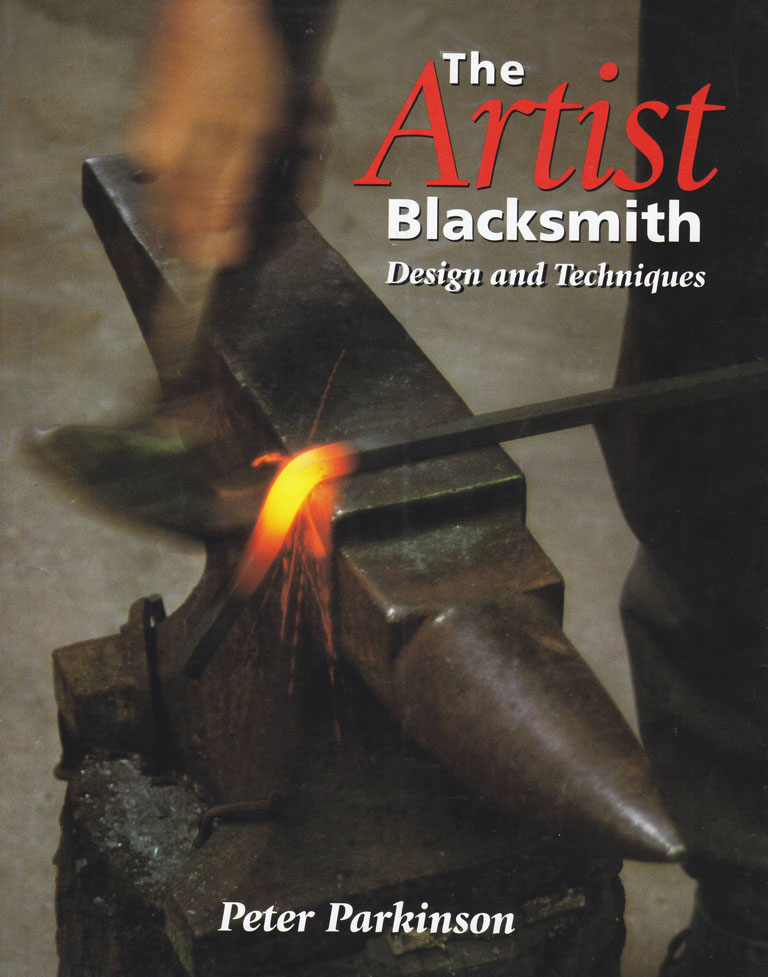
作者：Peter Parkinson
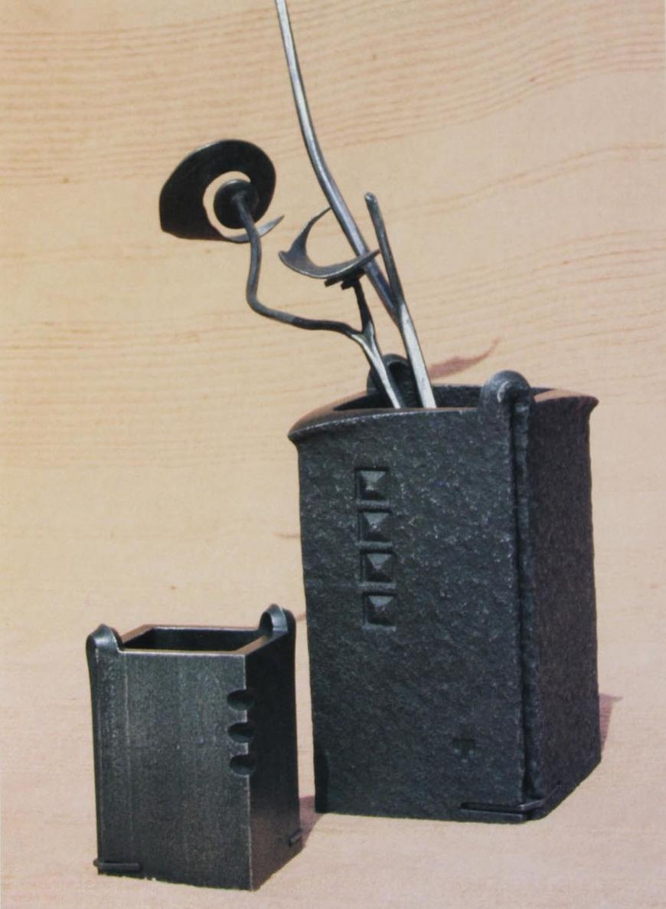
首次出版于2001年
The Crowood Press Ltd
Ramsbury, Marlborough
Wiltshire SN8 2HR
www.crowood.com
本版印刷于2014年
电子书首次出版于2014年
© Peter Parkinson 2001
版权所有。未经出版商书面许可，不得以任何形式或任何方式（电子或机械方式，包括复印、录制或任何信息存储和检索系统）复制或传播本出版物的任何部分。
英国图书馆编目出版数据
本书的目录记录可从英国图书馆获取。
ISBN 978 1 84797 783 0
致谢
我要感谢所有慷慨借给我插图的铁匠，以及无数其他铁匠，他们的建议和热情，无论他们是否知道，都为本书做出了贡献。
图片致谢
除特别注明外，所有照片均由作者拍摄，以及以下照片：Peter Hill 76（下）；Andrew Lee 83；Ian Macaulay 84, 85（上）, 101（上）；Paul Taylor 89（上）。
线条图由作者绘制。
前页：作者制作的容器和锻造低碳钢树枝。容器由低碳钢角钢制成，切割并热折叠以将底座固定在槽中，带有切割和冲孔装饰。
请注意
在本书中，我尽可能使用中性词汇，因为我知道铁匠工作绝不是男性的专属领域。然而我仍然使用了”他”和”他的”，因为每次都加上”她”和”她的”会变得过于冗长乏味。如果这仍然令人不快，我只能道歉并强调”他”只是一个代词，并非表达观点。
引言
第1章 工具与设备
第2章
第3章 健康与安全
第4章 在铁砧上工作
第5章 镦粗(Upsetting)
第6章
第7章 拉伸与展宽
第8章 切割
第9章
第10章 扭曲
第11章 连接工艺
第12章 与助手配合工作
第13章 设计
第14章 夹具和工具
第15章 更多工具
第16章 组装与精加工
延伸阅读
术语表
索引
在过去二十年里，铁匠工艺取得了长足的进步。1979年，我作为嘉宾受邀参加了工艺委员会在赫里福德举办的锻铁会议和工作坊，该活动旨在振兴这一看似濒临消亡的工艺。主要参与者是来自英国各地的十四位铁匠，他们中的许多人此前从未见过面，一直以为自己是国内最后一位真正的铁匠。
自那时以来，这项工艺得到了显著扩展，在艺术上有所发展，采用了新技术并找到了新的应用领域。自1982年以来，许多艺术学院开设了铁匠工艺课程。英国艺术铁匠协会(BABA)成立于1978年，现在拥有约600名业余和专业会员，并举办蓬勃发展的年度活动。也许令人惊讶的是，这项工艺还具有重要的国际维度，在美国、欧洲、俄罗斯、日本和澳大利亚的铁匠之间形成了非常活跃和富有成效的网络。
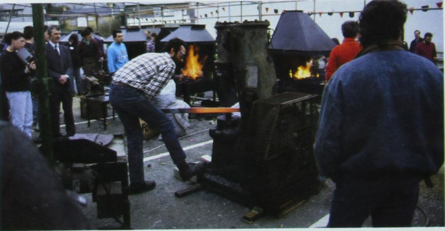
典型的BABA铁匠活动。
尽管日益精细化，铁匠工艺并没有忘记其根源。现代铁匠工艺的核心仍然是火、铁砧和锤子。你加热金属并用锤子塑形。今天铁匠的核心活动很容易被从中世纪穿越而来的铁匠识别和理解。
在我的书架上有一本为1980年大英博物馆”维京人”展览出版的书，其中包括一张照片，展示了一组留在十世纪挪威武器铁匠墓中的工具。那些钳子、锤子和凿子与我今天在工作坊使用的工具几乎完全相同，时隔整整一千年。
在那个时代，铁是一种昂贵的金属，难以大量生产，因其在工具和武器、器具甚至珠宝中的用途而受到重视。铁匠制作自己的工具，会保存和重新加工金属，必要时将小块焊接在一起制成更大的条材。
这种节约的工作方式一直延续至今。金属不再昂贵，但铁匠仍然习惯性地在废料堆中保存零碎的金属，为特定工作或特殊工具提供材料。在废料场寻找有用零件有着强大的吸引力，即使你不能真正将剑锻造成犁头，你至少可以用一根旧管子做一个烛台。
铁匠工作的内在自给自足特性对业余爱好者和专业人士都大有裨益。你可以用很少的设备开始，随着时间的推移制作你需要的东西。
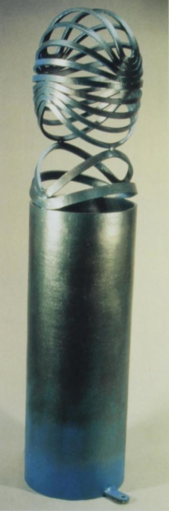
Alan Evans的雕塑作品，由钢管气割而成，加热并塑形。
铁匠工艺提供了一种加工金属的方式，产生的形式和品质远比我们机器制造环境的产品更具个性。用锤子塑造热金属具有自由和自发性。每一次敲击都会留下痕迹并对结果产生影响。每个铁匠都会以自己的方式敲击金属，留下特有的锤痕”指纹”。你不必刻意追求这一点，它会自然而然地呈现。
那么今天的铁匠会制作什么样的物品呢?答案是一个长得令人尴尬的清单,从钩子、裁纸刀和烛台等小物件,到灯具、窗帘杆和家具,再到屏风、栏杆和大门等建筑金属制品,以及大型公共艺术作品。重点是,选择权在你手中。这门手工艺涵盖了所有这些东西,但用来制作它们的工艺流程本质上是相同的。
本书将工艺流程视为基本构建模块,通过这些模块你可以实现和发展自己的项目和想法。挑战、乐趣——实际上也是魔力——在于玩火,将一种相当不起眼的材料转化为具有自身品质和生命力的东西。
最后,我描述的技术和工艺流程是那些根据我的经验证明最有效的方法。它们不一定是做这些事情的唯一方式。当我开始锻造时,我通过每周在一个成熟的铁匠铺度过一天学到了很多东西,那里雇用了许多铁匠。我有一个专属的锻炉,会花半天时间努力做某件事,直到有人出于同情向我展示如何做。问题解决了。但后来另一位铁匠会走过来说”如果我是你,我不会那样做——我会这样做……“。这是最好的教训。最终没有确定的方法,只有适合你的方法。
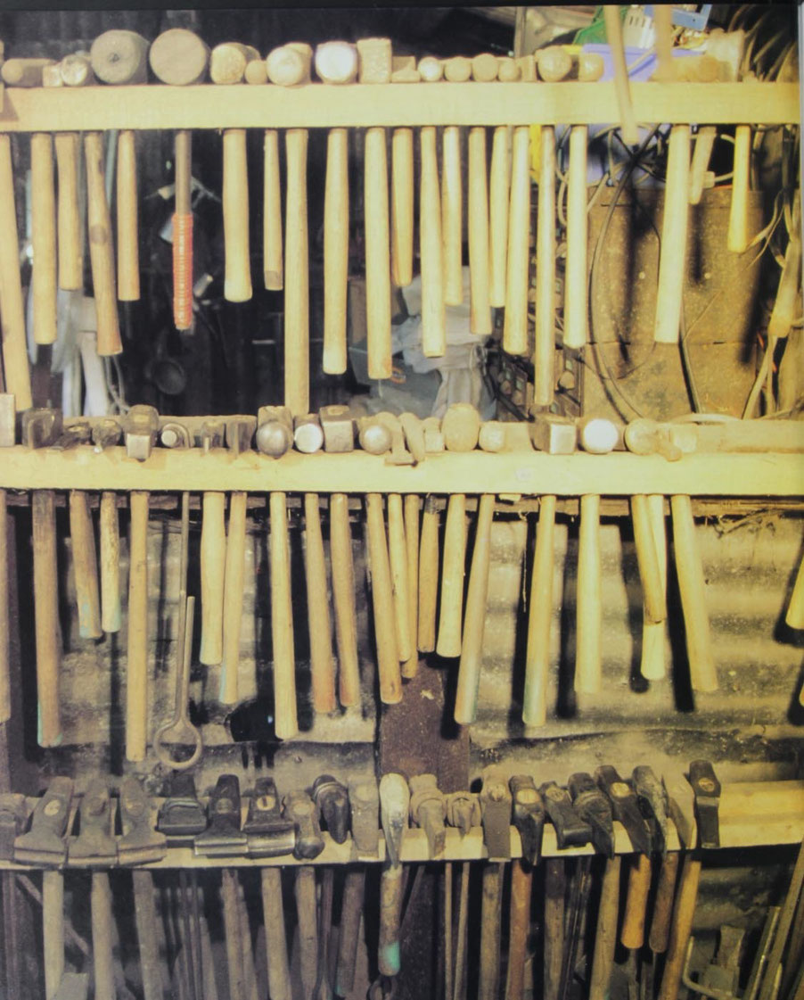
[锤子、压模、热錾子和冲头的工具架。]
建立自己的工坊是关键的一步,在考虑使用特定建筑或空间时需要考虑许多重要因素。基本要求是尺寸、可达性和电力供应。
要开始锻造,空间的性质比尺寸更重要。我的第一个工坊只有2.4米(8英尺)长、2米(6英尺3英寸)宽,但它确实有混凝土地板和高天花板的优点。如果有放置锻炉和铁砧的空间,并且有足够的空间可以舒适地在铁砧周围移动,你就有了一个潜在的锻造工坊;虽然简陋但可行。话虽如此,更大的空间显然更理想,可以容纳更多设备并有空间布置和建造更大的项目。但如果小空间是你所拥有的全部,不要气馁。
混凝土地板非常理想,但不如足够高的天花板重要,天花板要高到能让你全力挥动锤子——2.4米(8英尺)是最低要求。不要忘记灯具通常比天花板本身更低。粗心地挥动锤子很容易打掉灯具,即使你以为知道它们在哪里。天花板上的灯应该放置在高处且够不到的地方。如果屋顶太低,大工作空间也没有用。
进出通道是一个主要考虑因素。将设备、金属、燃料等搬入建筑物需要相当便利的通道。例如,台阶是一个真正的问题。水平通道和宽门——最好是双开门——是一个很大的优势。很容易组装好一件大型作品,却忘记完成后必须将它搬出工坊。
还必须评估火灾风险。最合适的建筑类型是传统的砖、混凝土或石头结构,配有石板瓦或瓦片屋顶,或实用的钢架和金属覆层。虽然这并不排除使用木棚,但这确实意味着需要比在砖砌建筑中更加小心。这可能意味着用不可燃板材衬里工坊的特殊部分用于焊接或打磨。木棚还需要坚硬的地板,最好是混凝土地板。
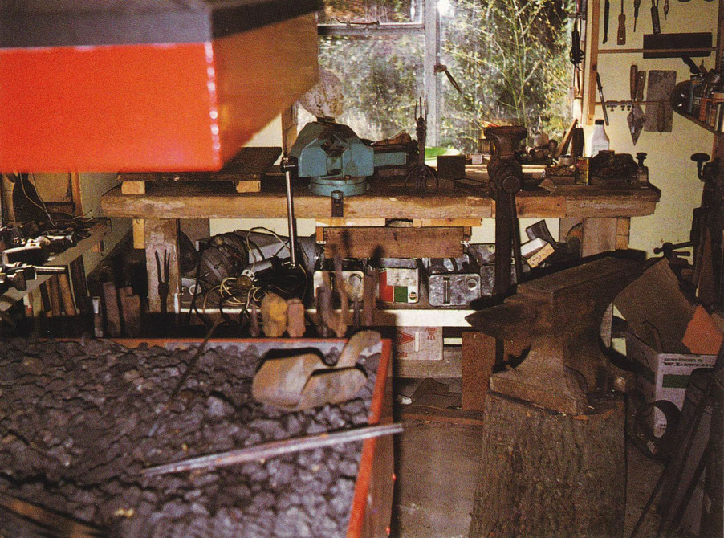
作者的第一个工坊。刚好够放一个焦炭锻炉、铁砧和固定在工作台上的台钳。
必须承认噪音是一个潜在问题。根据我的经验,不完全是在铁砧上敲打的噪音,而是风机或角磨机等辅助设备发出的呜呜声。显然,如果你计划的锻造车间紧邻隔壁房屋,你可能会有问题。距离可以产生影响,灌木和树木的屏障可能有所帮助。只在一天中的特定时间工作——例如从不在下午6点后工作——也可能有助于让你的邻居喜欢你。
电力是必不可少的。即使你希望用传统风箱吹你的锻炉,你仍然需要电灯才能看清自己在做什么。如果你的工坊位于你居住的地方,从房屋引出承载电缆的架空线并不难安排。电力应该通过家用配电箱中的专用保险丝接入。如果你打算使用电弧焊机,安装保险丝而不是微型断路器。电弧焊机往往会跳闸断路器,而熔丝保险丝更能容忍。
最好安装比你认为需要的更多的电源插座,并且最好使用双插座,以减少手持电钻或角磨机的长拖线危险。由于工坊里有很多金属,良好的接地至关重要。RCD(漏电保护装置)插座也是一种值得安装的安全设备,在你用电动工具或一块热金属切断拖线电缆时为你提供保护。
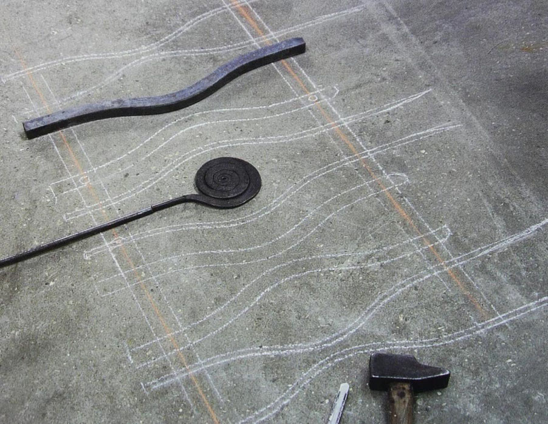
在混凝土工坊地板上布置的围栏设计。
传统上，铁匠的工作坊是一个光线昏暗的地方,窗户很少,因为铁匠需要”看清金属的颜色”。也就是说,要判断它的温度。能够看清金属有多热是非常重要的,但这并不意味着工作坊必须昏暗。正常照明的室内空间可以让你很好地判断金属的颜色,更重要的是能让你看清自己在做什么。浅色的地板和墙壁提供了一个良好的背景,可以用来判断一根金属条是否笔直。如果地板和墙壁是深色的,可能需要使用一块涂成白色的板子支起来作为背景。
阳光直射可能会造成问题。因此,窗户最好安装毛玻璃,理想情况下应该设在朝北的墙上。阳光直接透过窗户照射在金属上,会使判断温度变得非常困难。如果实在没有其他选择——或者你想在户外工作——可以将金属的热端放入钢桶中,或者放在炉罩的阴影下,这样就能看清它的颜色。
最好将窗户设置得较高。如果窗户与工作台齐平或更低,在不小心挥动一段金属或掉落工具时很容易被打破。工作台上方的窗户从照明角度来看是很好的安排,但要注意研磨火花击中玻璃。金属颗粒会附着在上面,逐渐使窗户因锈蚀而变成棕色。
良好平整坚固的地板很重要,尤其是因为锻造设备很重并且会受到冲击。光滑的混凝土地板防火,便于移动设备,并且可以用粉笔划线作为特定工作的指引。如果地板既平整又水平,就可以使用水平仪来检查工件,从屋顶悬挂的铅垂线将与地面成直角。这对于确保直立的部件——例如落地灯的支柱——相对于其底座设置得真正垂直非常有用。
工作坊应该通风良好,但不要有穿堂风。炉火和电弧焊接作业会产生烟雾的风险。煤或焦炭火会产生灰尘,研磨也会产生灰尘。因此,许多铁匠喜欢开着门工作以提供新鲜空气流通。但应避免在炉火附近有直接的穿堂风,因为它会在燃料燃烧产生的烟雾从烟道排出之前将其吹入工作坊。
必需的设备是炉子、砧、一个重型台钳和一个工作台。仅用这些和一些手工工具就可以完成很多工作。添加一个手持电动角磨机、一个电弧焊机以及许多其他工具会有优势,这些将在章节中介绍。但无论你还有什么或渴望拥有什么,炉子和砧是工作坊的核心。
炉子只是一个热源,可以是煤、焦炭、燃气或燃油的。有许多不同的类型和尺寸,各有优缺点(见下文)。就像汽车一样,它们最终都能让你达到目的,但效率、舒适度、速度和成本各不相同。
由于需要烟道,煤或焦炭炉往往会固定工作坊的布局。它的位置需要仔细考虑。使用丙烷的燃气炉,或燃烧煤油的燃油炉在通风良好的工作坊中不需要烟道,因为燃料燃烧清洁,没有有害烟雾。但应该记住,任何碳氢燃料都会产生二氧化碳,在空气供应受限的情况下还会产生一氧化碳。因此良好的通风很重要。这些炉子提供一个加热室——类似于陶工的窑——通过前后的门进入。由于它们结构相对轻便,不需要固定烟道,可以放在装有脚轮的底座上,并根据需要移动。这使得工作坊布局更加灵活,能够根据特定工作安排炉子的位置。
固体燃料炉通常在炉膛前部附有一个水槽。必须要有某种形式的水箱或水槽来冷却或淬火金属。一个旧油桶可以用,尽管使用长水槽有一些优势,因为可以将热的金属条横放在上面,在热处的两侧淬火区域,而不会在地板上洒太多水。
哪种炉子?
煤或焦炭炉
优点
◆ 在金属条上提供短暂的加热。
◆ 适合在金属条中间提供局部加热,例如制作紧密弯曲。
◆ 非常适合火焊作业。
◆ 灵活接近热源——可以重新加热大型或笨重的工件。
◆ 由于风扇控制火力,可以在两次加热之间关闭,节省燃料。
◆ 如果风扇消音,使用起来会非常安静。
缺点
◆ 更难安装。必须有烟道排放烟雾。
◆ 脏。即使有良好的烟道,也会在工作坊产生灰尘。
◆ 难以达到比大约6英寸(15厘米)长得多的加热。
◆ 留在火中无人看管的金属几乎肯定会烧毁。
◆ 物理上比燃气或燃油炉更大。
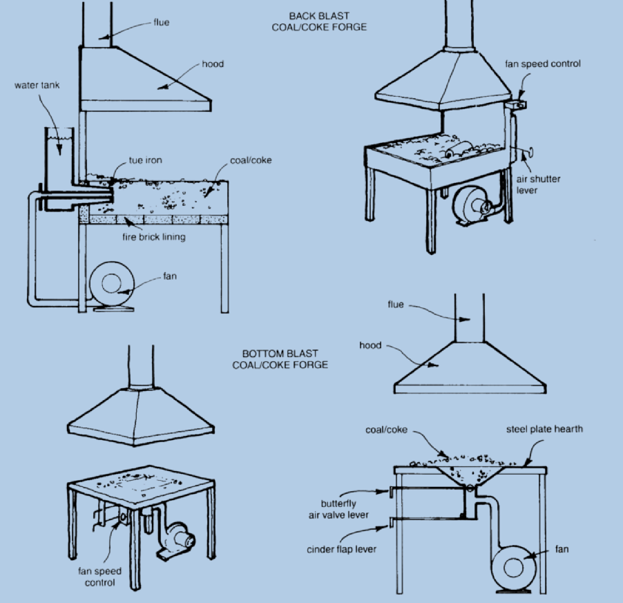
哪种炉子?
燃气或燃油炉
优点
◆ 易于安装——无需烟道。
◆ 可以通过放置在装有脚轮的推车上实现移动。
◆ 在金属条上提供长时间加热——与炉膛本身一样长——适合长锥形或长弯曲。
◆ 可以同时加热多根金属条并轮流加工。适合重复锻造。
◆ 留在火中的金属不会烧毁,尽管表面可能会严重氧化。
◆ 物理上比固体燃料炉更小。
缺点
◆ 不太适合在金属条上进行短时间加热。
◆ 杆件中部的局部加热由炉膛长度决定。
◆ 操作受限。一旦杆件弯曲，可能无法将其重新放入锻炉。
◆ 需要持续使用。一旦点燃,昂贵的燃料会持续燃烧。
◆ 可能难以达到火焊接温度。
◆ 即使使用静音风扇,火焰的轰鸣声仍可能很吵。
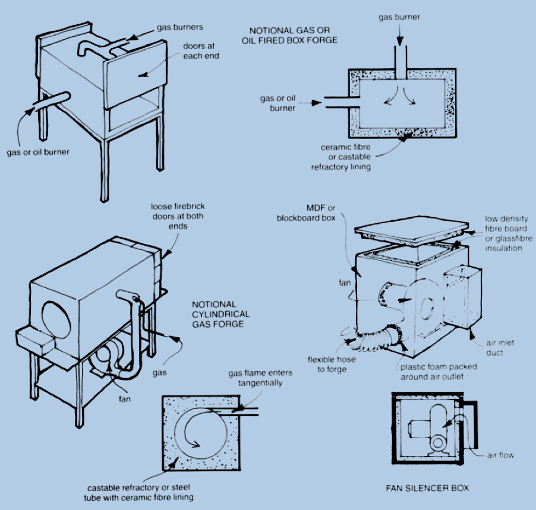
在规划工作间布局时,锻炉位置的选择可能是最关键的决定。如果你只打算处理短金属件,锻炉的位置似乎不那么重要。但考虑加热长金属件一端的需求,例如制作2米长的窗帘杆或长撬棍。另一端会不会撞到墙?或者可能需要加热长金属件的中部来弯曲它。锻炉两侧的空间将决定能处理的最大长度。预估最坏情况可以让锻炉放置在能最大化使用的位置。
绘制工作间平面图并花时间确定锻炉的最佳位置是非常值得的。在屋顶开洞安装烟道是你真的只想做一次的事。工作间的其余部分可以围绕锻炉来布置。充分利用出入门。例如,可以通过门将长金属件送入台钳或机械锯来切割。
铁砧通常应该靠近锻炉。能够一次性将金属件从火中取到铁砧上,在其冷却前完成操作有很大优势。这对薄料尤其关键。台钳——最好是立式台钳(leg vice)——也应放置在能快速夹持炉火中取出的热金属的位置,减少来回跑动。安全、舒适和效率值得追求,在工作间工作一段时间后,你可能能够改进布局以获得更好效果。
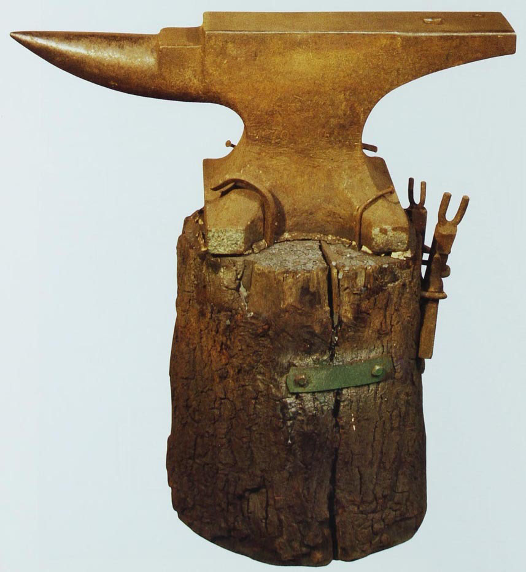
橡木底座上的伦敦式铁砧。
选择铁砧时值得记住,你可以在大铁砧上制作小件,但很难在小铁砧上制作大件。铁砧按重量分级,这是吸收锤击冲击的重要因素。由于体积决定重量,200磅(90公斤)的铁砧可能只比100磅(45公斤)的铁砧长几英寸。所以,如果你有选择(且有空间),选择大的。这个原则适用于许多工具,包括台钳、立式台钳、台钻、飞压机(fly press)、车床等。重量不到1英担(50公斤)的铁砧对于大多数严肃工作来说可能太小。
常用的铁砧有两种基本类型,伦敦式和双喙铁砧(double bick anvil),后者在欧洲广泛使用,其变体在英国称为朴茨茅斯式。可以买到新铁砧,二手铁砧可从工程机械经销商、农场拍卖会甚至废品场购买。有些可能确实是废品,但很少有铁砧完全无法修复。
现今铁砧由钢铸件制成,表面经过硬化处理,但传统上由锻铁或软钢主体制成,上面火焊接一块独立的硬化钢面板。许多铁砧焊接钢板时会留出部分主体暴露作为台阶或软铁工作台,提供用于切割的表面,因为它不会使凿子变钝。钢板可能正在从铁砧主体分离。用锤子沿铁砧敲击时发出”破裂”或”沉闷”的声音可能表明这个问题。
文献中常提到选择”声音清脆”的铁砧,用于诊断这类故障,就像铁路工人用长锤沿列车敲击车轮检查裂纹一样。然而在使用中,你最不需要的就是每次敲击都像钟一样响的铁砧。“清脆的声音”可能震耳欲聋。将铁砧放在木材上并在铁砧脚下垫几条橡皮泥(plasticine),可以抑制和控制响声(见下文)。
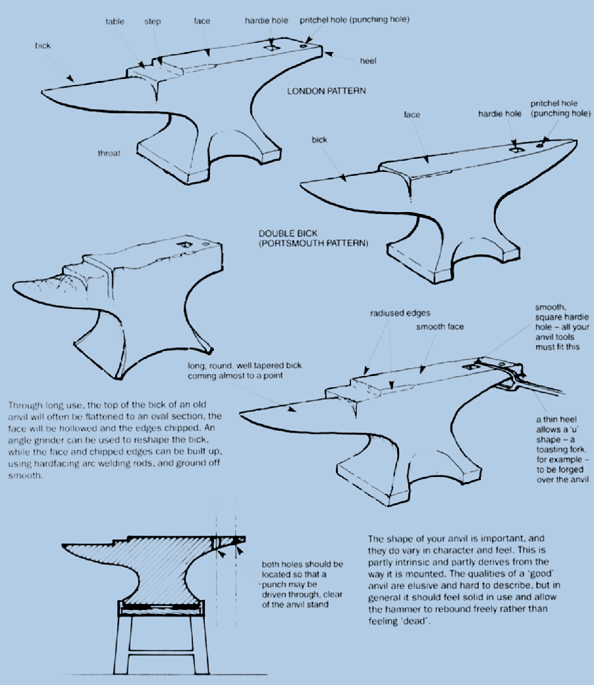
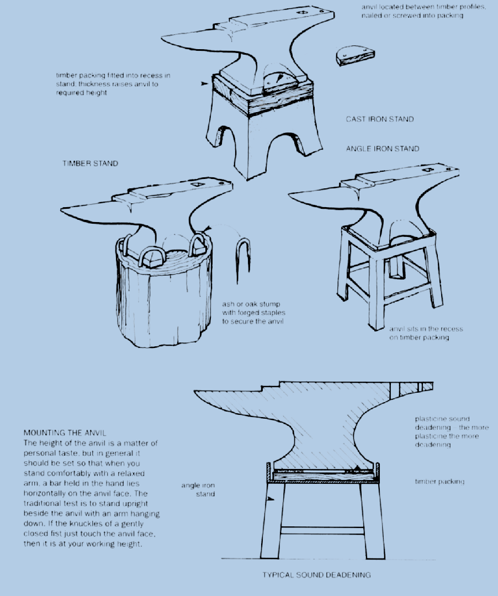
工作台为处理锻造件所需的冷加工提供了焦点。这是你可以安装台钳、检查、清理、锉削、装配以及在考虑下一步时简单放置部件的地方。它可以大或小,取决于可用空间和你想做的工作类型,可由木材或金属制成。金属工作台(或至少金属台面)如果要兼作气焊或电弧焊工作台可能很有用。无论哪种方式,都要使其坚固并倾向于更重。工作台下方的搁板非常有用,因为它提供储物空间并增加结构重量。
工程师台钳或立式台钳(或两者)应固定在工作台上,位置要提供最佳操作空间。在工作台一角安装带旋转底座的工程师台钳很有用,可以将其旋转从侧面和端部操作。在这种情况下灵活性很有用,这也是一个通用原则。你永远不知道下次需要处理的金属的形状、尺寸和长度,如果部分金属碰到墙壁或工作台腿会很麻烦。
工作台的一部分可以提供良好的清晰布局区域。您可能还希望在工作台上放置一块平板，为检查或组装部件提供平整的参考表面。这不需要是工程车间中使用的精密研磨质量，只需一块平整的钢板，用钢尺仔细检查平直度，或者从废品场回收的铸铁机床工作台即可。使用水平仪将其调平使其真正水平会很有优势。
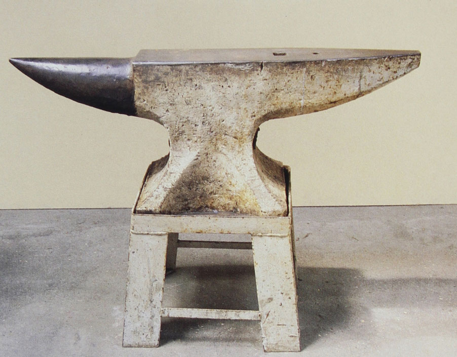
双角铁座上的双嘴砧。
铁匠铺中常用的台钳有两种类型：腿式台钳(leg vice)和台式或工程师台钳。它们的工作原理不同。工程师台钳的钳口在任何开口处都保持平行,而腿式台钳的钳口以弧形枢转。两种都有会很有用,但如果空间或成本有限,首选应该是腿式台钳。它可以安装在工作台上,可以获得已经安装在独立支架上的,或者您可以用重型管材或’工’字梁制作一个安装座固定在地板上。无论如何安装,腿部的优点在于将冲击力直接传递到地板。将台钳安装在可以放置或固定在地板中央的支架上会很有优势,因为它提供了全方位的接触。同样,重量是一个重要因素。当台钳用于夹持热金属时——例如将其锤打成弯曲——它可能会承受与砧座一样大的冲击。
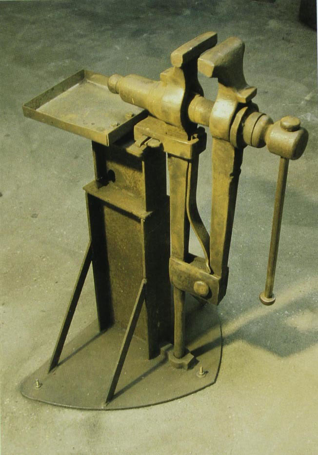
固定在地板上的腿式台钳。
与砧座一样,新的腿式台钳可以买到,但可以从类似来源获得可用的旧台钳。检查夹紧螺杆是否损坏、钳口是否正确闭合以及底部枢轴是否偏离或松动是相当容易的。腿式台钳的钳口与本体一体成型,有时未经硬化处理,但可能有纹理以提供抓握表面。应将这种抓握表面磨掉,留下光滑的钳口,否则会在热工件上留下痕迹。
台式台钳通常有带纹理抓握表面的硬化钳口面。这些是用螺钉固定的单独部件,最好将其拆下并更换为光滑的低碳钢钳口,以避免在工件上留下痕迹。配备旋转底座的台钳会很有用。
如果您独自工作,很可能会发现有些时候需要另一只手会很有帮助。简单地热切长杆或重杆的末端就可能成为真正的问题,如果没有人为您握住它的话。带三脚架底座的可调节支架提供了一种支撑杆另一端并解决问题的方法。这有时被称为”铁匠助手”(blacksmith’s helper)。拥有几个这样的支架会很有用。可以制作不同的支撑件以适配基本支架,有些带平端,有些带平”U”形以防止杆横向滑落,有些带滚轮以允许杆来回滑动,例如沿其长度分裂时。
如果您打算制作任何类型的门、格栅或屏风,可能需要完全不同类型的支架——托架(trestles)。这些通常有简单的”A”形框架端部和角铁或扁钢水平杆。它们成对(或更多)使用,并经过仔细调平以提供可靠的水平表面,可在其上组装结构。
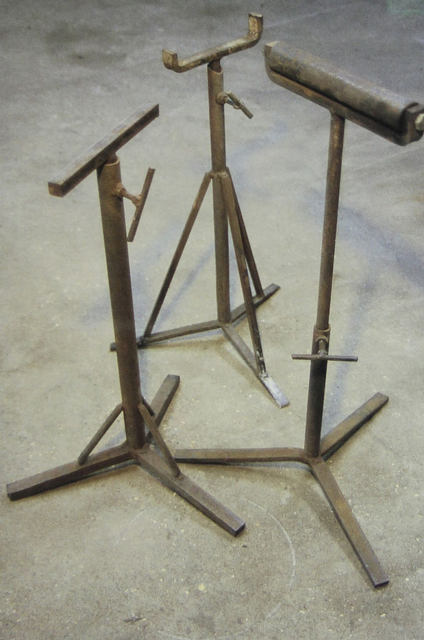
铁匠助手。带不同头部的可调节支架。
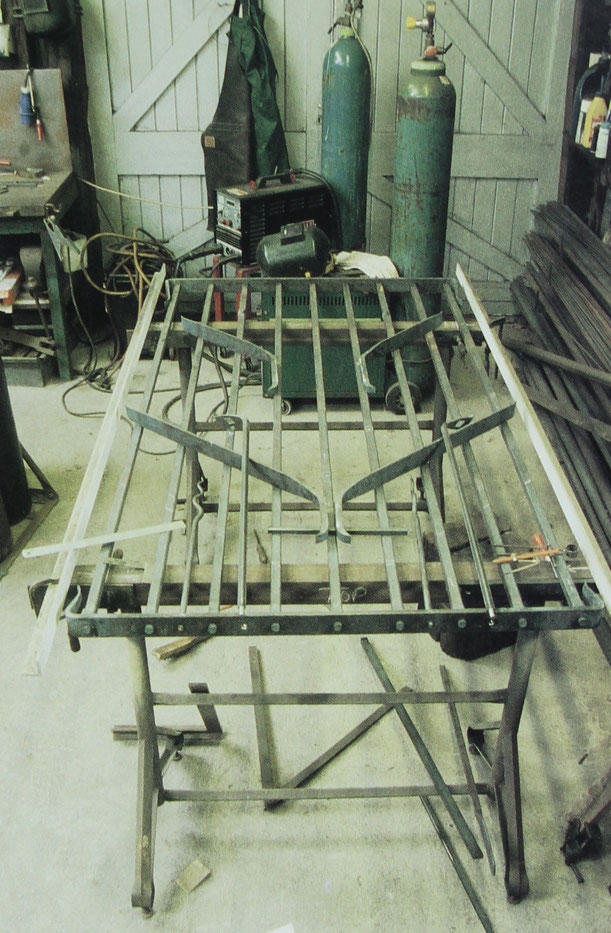
使用托架组装格栅。
这不是启动车间时最必需的物品,但仍然是非常有用且多功能的设备。型砧块通常为方形,由铸铁制成,有许多穿过它的方形、圆形和矩形孔,以及铸入其边缘的不同轮廓的凹槽。有些有用于塑造勺子碗部的凹腔。该块可以放在地板上使用,但最好放在支架上,这样可以平放或竖立。
将块平放时,这些孔可以用作多种用途:镦头工具(heading tools)、固定弯曲用杆的末端、为型模(swages)或凹槽模(fullers)等工具提供插座,并在冲孔大孔时为热杆提供支撑。竖立时,该块可以作为比砧座型模更大尺寸的底部型模的集合,它可以水平定位杆,并且可以在较大的空心轮廓上将杆锤直或弯曲成曲线。同样,块越重越好。
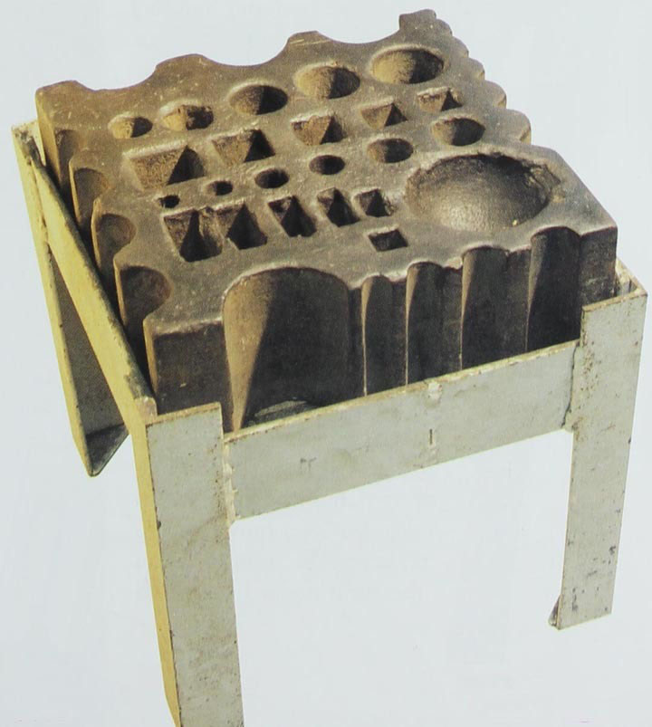
焊接角铁支架上的型砧块。
加工热金属最终可能需要大量工具,尤其是因为当金属可加工时,您无法触摸它。但您可以从相对较少的工具开始锻造,随着技能的发展,自己制作许多更专业的工具。
铁匠工具可以商业生产,或者您可以通过在机械经销商、废品场、农场销售、汽车后备箱销售和旧货店寻找二手工具来省钱。最初只用几个工具工作。有了一点经验,您将能够更好地选择既适合您又适合您想做的工作类型的工具。
例如,闪亮的油漆和清漆锤柄是您在出汗的手中握三个小时最不需要的东西。普通的未上漆的山核桃木(hickory)或白蜡木(ash)手柄更可取,即使您必须花时间用钢丝棉擦掉清漆。同样避免在热金属附近使用的任何工具上使用塑料或橡胶包覆的手柄。即使是卷尺的塑料外壳也有风险。
你可能一开始只需要一两把锤子，但你可能需要尝试几把才能找到合适的。我大部分工作使用三把不同的锤子完成，其中大部分工作只用一把。重量在1¾磅到3½磅（约0.75公斤到1.6公斤）之间的锤子适合大多数锻造工艺，但偶尔可能需要更小或更大的手锤。7磅或10磅（3公斤或4.5公斤）的大锤也很有用，即使你独自工作（锤子可能以磅、盎司、千克或克为单位标记）。许多铁匠使用传统的工程师式样球头锤(ball-pein hammer)，但我更喜欢方面十字头锤(square-faced cross-pein hammer)，原因将在本章中解释。这是德国和法国常见的款式。
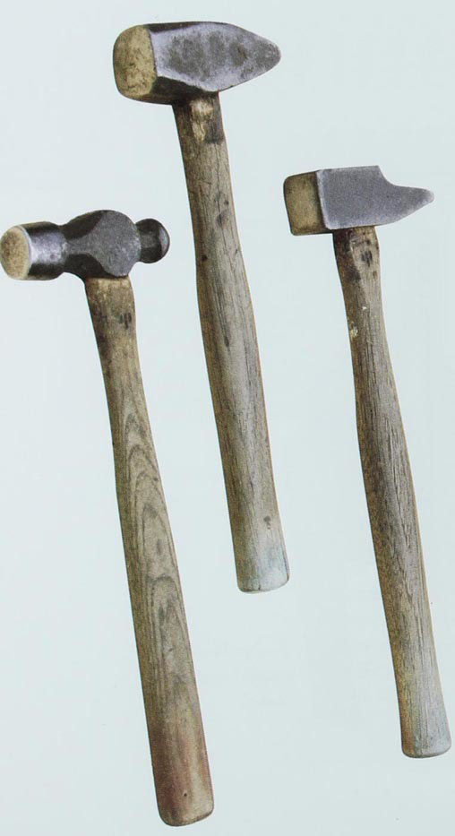
我最喜欢的锻造锤，两把方面十字头锤和一把球头锤。
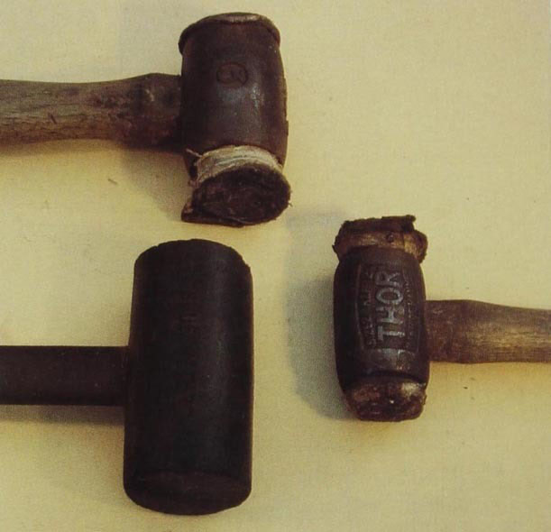
两把生皮槌和一把重型橡胶头槌。
重型木槌可用于矫直或弯曲金属而不损伤其表面。热的金属条可以在木块上加工。有木材、橡胶和生皮头木槌可供选择，尽管木材通常太轻。带有可更换生皮面的钢头木槌是理想选择，有多种重量可选。还可以买到一面生皮一面铜的款式，它本身很有用，还能增加重量。
铁匠钳的钳口形状设计用于夹持特定截面的金属条——圆形、方形、扁平——也可能只适合某一特定尺寸。大多数钳子设计用于在锤击时牢固夹持工件，但有些用于从火中拾取金属、弯曲小细节或打开和固定套环(collar)。选择适合你要做的工作的钳子。许多钳子似乎做得太长太重。小而轻的钳子更可取，除非你从事非常大型和重型的工作。钳口可以调整，所以两三副钳子最初就能满足各种工作需要。可以用钢棒制作一些椭圆形环套在钳子手柄上，以锁定钳口中的工件。
砧座上的方孔(hardie hole)可以安装各种工具。最基本且最常用的是切割凿(hardie)本身，用于切断金属。切割凿可以是短而粗壮的冷切型，也可以是更细长的热切型。拥有两把热切凿会很有用，一把对称锻造和磨锋，另一把锻造成垂直面，只在一侧磨刃，像木工凿一样。
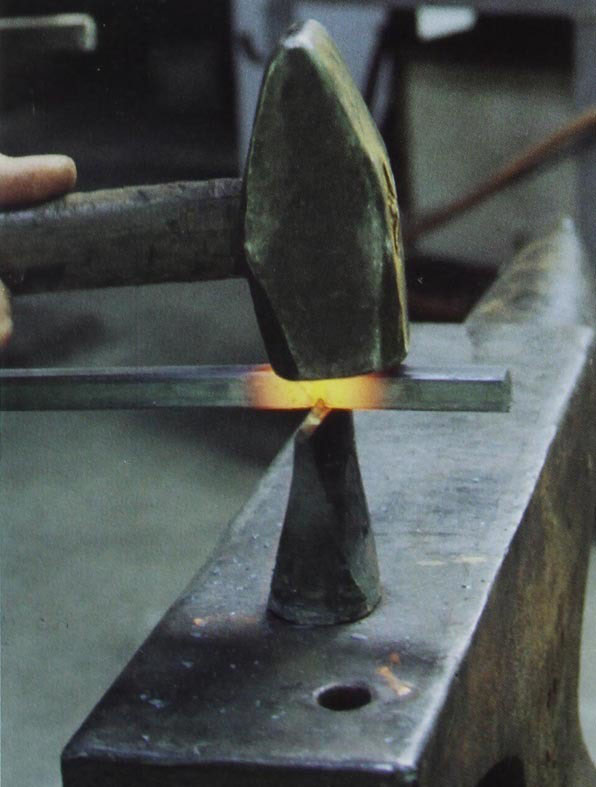
使用中的热切凿。
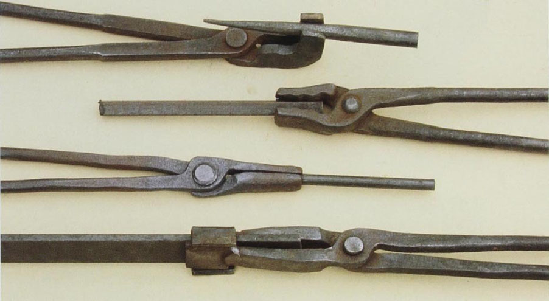
用于夹持特定金属条截面的钳子。
购买砧座工具时，确保柄部尺寸适合你的砧座。即使名义上正确，柄部可能也需要稍微打磨以提供紧密贴合。
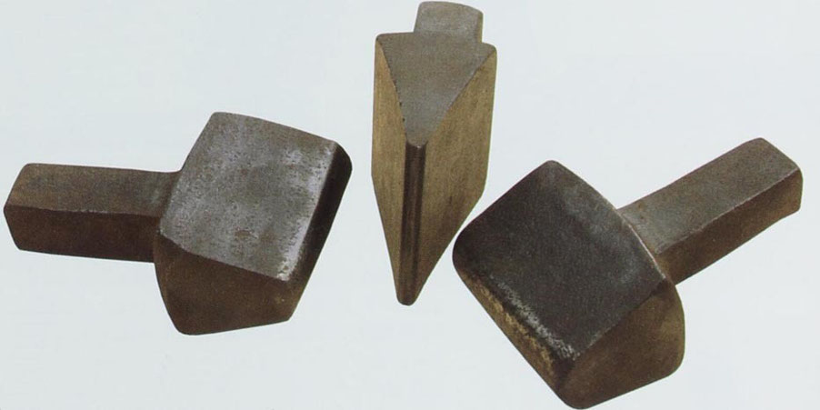
下模凹槽锤(bottom fullers)。
凹槽锤(fuller)是凸形的，型槽模(swage)是凹形的。两者通常成对使用作为”上下工具”。下模工具有一个方形钢柄，适合方孔。上模工具有一个缠绕在主体周围的铁杆或钢杆手柄，或像锤子一样在孔眼中安装木柄。我认为木柄工具更容易使用。它们通常更轻，平衡性更好，握持更舒适。
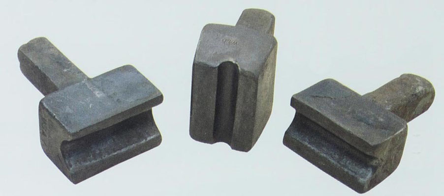
下模型槽模。
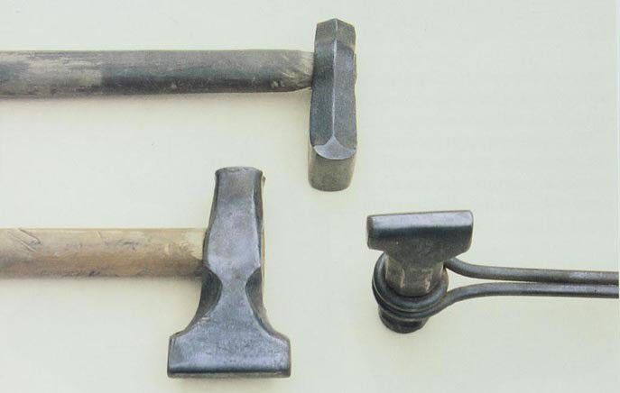
上模凹槽锤，两把木柄和一把杆柄。
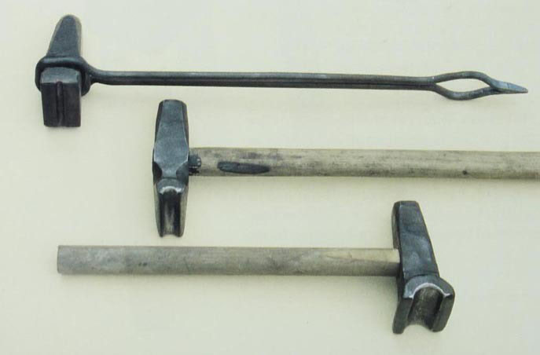
上模型槽模，两把木柄和一把杆柄。
用于热切的凿子，同样配有杆柄或木柄，称为”热切模(hot set)“。”模具工具(set tool)“通常是指那些配有单独手柄而不是直接手持的工具。它们放置在工件上并用锤子敲击——通常是大锤。还有模具冲头(set punch)和模具锤(set hammer)，其中一种有用的版本称为”平锤(flatter)“，用于平滑和压平表面。在每种情况下，手柄都能让铁匠的手远离金属的热量和锤击偏差的风险。这些工具中的许多可以由独自工作的铁匠使用，但实际上它们属于一类需要与助手——持大锤的帮手——配合使用的工具。铁匠握持工件并放置模具工具，而助手提供敲击力。
这些工具也有手持版本。凿子、冲头、凹槽锤，更少见的型槽模可以是直接手持并用手锤敲击的工具。有些人发现最初使用手持凿子和冲头更容易，因为尽管它们需要一点信心使用，但它们要求你紧靠工件站立，在这个位置你可以更准确地放置工具并更清楚地看到其效果。模具工具允许你站得更远，因此初学者可能难以，例如，将凿子或冲头放置在金属条的中心线上。
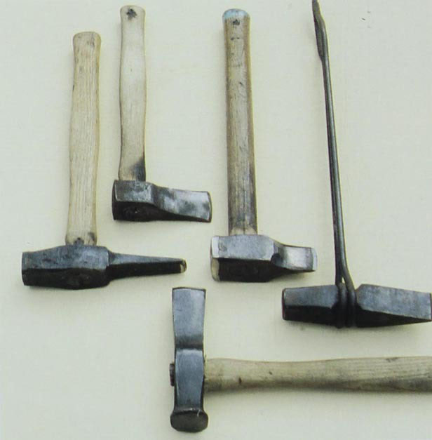
热切模。用于切割热金属的凿子。
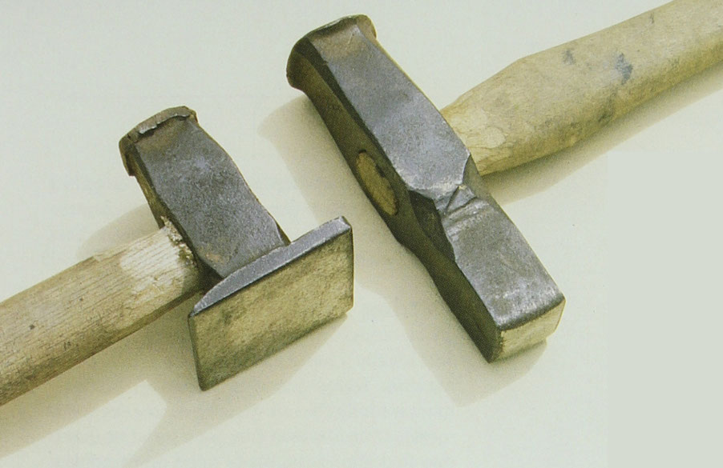
平锤（左）和模具锤（右）。
在砧座工作时，随时准备一把钢丝刷很有用。锻造氧化皮(forge scale)会在热金属上堆积，在煤火或焦炭火中，熔化的炉渣小块会粘在工件上。如果留在原位，持续锻造会将炉渣和氧化皮锤入金属中，当这些最终被移除时，会留下粗糙的麻面。氧化皮在高温下粘附性较弱，所以在金属处于黄热状态时用力刷洗是清洁表面最有效的方法。每隔一段时间刷洗工件以清除杂质是良好的做法。
钢丝刷在工具店和五金店中随处可见。这种刷子由圆形弹簧钢丝束镶嵌在木柄(而非塑料柄)中制成,钢丝束越密集越好。还有一种钢丝刷叫做”屠夫砧板刷”(butcher’s block brush),使用扁平弹簧钢丝,镶嵌在结实的木柄中。屠夫用这种刷子清洁切肉用的大型木砧板,可以从屠夫用品供应商处购买。这种刷子较难找到,但清洁效果更强,使用寿命更长。

手工凿子;(上)弯曲凿子;(下)直凿子,部分由建筑工人用的星形钻头改制而成。
铁匠需要通用工具,就像其他金属工匠一样。在某些情况下,铁匠也会使用标准工具的特殊版本。通用工具可分为以下几类。
包括钢直尺、钢卷尺、卡尺和工程师角尺。黄铜制折叠2英尺直尺是传统铁匠使用的版本,因为与普通钢尺不同,它们不会在车间里生锈。但如今不锈钢或缎面镀铬直尺很容易买到,而且读数更清晰。带有长手柄的特殊铁匠卡尺对于测量热金属的尺寸很有用,因为它们能让你的手远离热源。小角尺可用于检查,例如检查钢条末端是否切割方正,而大角尺——2英尺长——则用于检查大门的框架。
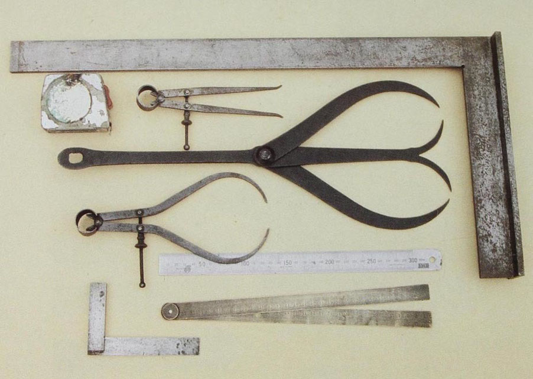
测量工具;(从上到下)大型工程师角尺、钢卷尺、弹簧内卡尺、铁匠双头卡尺、弹簧外卡尺、缎面镀铬钢直尺、黄铜折叠尺、小型工程师角尺。
包括划针、圆规、法国粉笔和中心冲。划针配合角尺或钢直尺使用,在冷金属上划出线条,标记切割边缘或设定孔位。圆规可以划圆或弧,也可用于将给定长度等分。法国粉笔可在金属冷热状态下使用。它可以削尖成比黑板粉笔更耐用的笔尖,能够耐受暗红热温度的金属并保持可见。黑板粉笔会从热金属上溅开,在相对较低的温度下就会消失。
中心冲用于在钻孔或冲孔前标记孔位。小型工程师中心冲适用于标记冷金属,而大型冲头则可打出更深的印记,在金属发热时更容易看见。弹簧操作型中心冲按下时会留下标记,特别适合通过现有孔定位另一个孔,无需三只手操作。
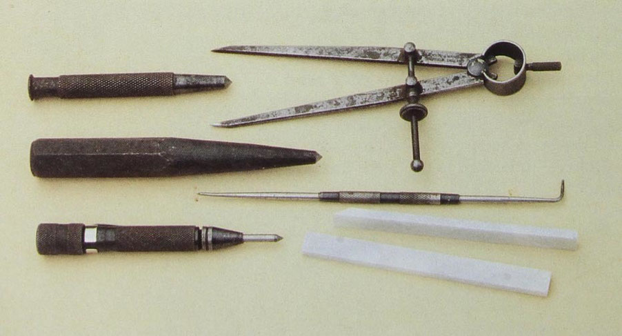
划线工具;中心冲、圆规、划针、法国粉笔。
应包括钢锯和锉刀,理想情况下还应有手持电动角磨机。用于10英寸和12英寸锯片的钢锯架可能最初是你切割金属的全部工具,所以值得购买一个坚固耐用的,允许锯片调整到多种角度。高速钢(HSS)锯片或”双金属”锯片(高速钢齿焊接在较软钢体上)是切割低碳钢的首选。碳钢锯片可能价格诱人,但几乎立即就会变钝,实际上只值得用来切割有色金属。
锉刀可用于去除毛刺和锐边、扩孔或打磨表面。通常它们用于加工冷金属,但粗锉——粗齿锉(rasp)——可更快速地用于塑形热金属。在冷锉锻件可见部分时应谨慎,因为会锉穿黑色锻造表面,留下明亮的划痕。然而,将金属重新加热至红热状态会氧化表面,掩盖锉削痕迹。
手持电动角磨机是一种非常多功能的工具,提供多种不同功能。安装切割片后,它比钢锯更快地从库存长度上切割金属。(如果需要,它还能切割硬化钢,而这种钢太硬无法用钢锯片切割)。它可以安装磨片用于塑形金属或修整焊缝,柔性磨片用于精修和抛光金属表面,钢丝刷用于除锈或抛光锻造金属。与锉刀一样,磨片或柔性磨片的作用可能会破坏锻造表面的质量。因此应谨慎使用此功能。但如果磨床留下的表面精度足够好,将部件重新加热至红热状态会氧化其表面并恢复外观。初期只需100毫米(4英寸)或115毫米(4½英寸)直径的磨床即可。
所有工具应尽可能在储物架中有固定位置,随手可取,让你没有借口到处乱放,以免丢失或成为脚下的隐患。最好将工具明显地存放在某种墙架上,而不是抽屉里,那样很难找到。许多工具可以轻松放置在沿墙安装的两根平行木条或金属条之间。有些可以简单地挂在钉入墙中的长钉子或螺丝上,而手持电动工具可以存放在开放式柜子里。
还需要一个架子来存放钢条库存。通常来说，水平存放钢条更安全，需要间隔支撑以防止下垂。能够看到钢条架的末端以便识别特定规格的钢条是一个明显的优势。不要低估金属钢条堆积的自重。钢条架应该宁可过于坚固，也不要过轻。如果空间有限，标准的6米钢条可以切短后竖立存放，但要注意防止它们滑动。

手持电动工具存放在开放式柜子中。
角磨机，配有不同的磨片。（从左上角顺时针）切割片、打磨片、钢丝刷和砂纸片。

低碳钢台面细节，在火中纹理化处理。
尽管（或者可能正是因为）经过数百年的工艺和工程发展，金属加工术语通常是模糊和令人困惑的。这尤其适用于材料本身。铁和钢的冶金学在其他书籍中有很好的描述，但这里有几点相关说明。
金属通常不以纯元素的形式在商业上销售。它们都是合金，也就是说是金属的混合物，或金属与非金属元素的混合物。钢是铁和碳的合金。铁是纯金属。特定的合金经过多年的精心配制，提供了一系列具有特定强度、表面硬度、耐腐蚀性等特性的材料。同样，它们也被定制以适应特定的制造工艺，如机械加工、冷弯和热锻。
虽然铁匠通常锻造铁和钢，但许多其他金属也可以热锻，包括铝、黄铜、青铜、铜和钛。然而，在每种情况下都应该使用适当的热锻合金，否则加工金属可能会很困难或不可能。供应商应该能够识别正确的等级。
“纯”铁，或”黄油”铁现在在欧洲作为一种特殊的超低碳铁合金制造，含碳量仅为0.002%，锰含量为0.08%，以及其他元素的微量成分。它比低碳钢更具延展性，但价格要贵得多。
锻铁(Wrought Iron) 是铁匠使用的传统材料。“wrought”意为”加工过的”。自18世纪末以来，锻铁是使用高炉中的生铁生产的——这是一种铁与大约4%碳的合金。它在搅拌炉中分批熔化，空气和氧化铁的作用几乎去除了所有碳和其他杂质，将其中大部分转化为液态炉渣。由此产生的糊状金属块在动力锤下锻造——加工——并轧制以物理方式巩固金属并挤出炉渣。
需要进一步的重新加热和再加工来将金属精炼到良好的质量；再加工循环越多，最终产品就越精细。结果是铁与微量——也许是0.05%——的碳合金化，但物理上与2-3%的硅酸盐炉渣结合。这分布在整个金属中，使其具有特征性的纤维结构，类似于木材的纹理，这是由轧制工艺产生的。
这种金属非常适合热锻——它具有延展性和韧性，可以在比低碳钢高得多的温度下加工，并且很容易火焊。还有人声称锻铁不像低碳钢那样容易腐蚀。但由于是通过手工控制的工艺生产的，锻铁的质量是可变的，而且像木材一样，它可以沿着纹理分裂或开裂。因此在选择适合特定工作的材料时需要小心。锻铁在一代人之前就停止了大规模商业生产，但仍然可以作为重轧钢条和钢板以有限的规格范围获得，但比低碳钢更贵。
钢 是铁和碳的合金，通常还添加其他元素。一般来说，碳含量越高，钢的强度越大，热处理时的硬度也越大。钢的一个非常重要的特性是当从红热状态快速冷却时能够硬化。硬化程度取决于碳含量。冷却或”淬火”后，钢可能非常硬，以至于太脆而无法使用，因此通过”回火”将金属重新加热到远低于红热的特定温度并让其冷却，将硬度降低到所需程度。
钢中碳含量的微小差异可能对其性能产生巨大影响。锤头中的钢可能含有0.75%的碳，仅比被锤打的低碳钢多约百分之零点五。随着碳含量增加，钢变得更硬，但也变得更脆。因此在硬度和韧性之间存在权衡。
碳含量远高于1.5%的钢会变得太脆而无用。但在2.5%的碳含量时,合金的名称从钢变为铸铁。这是一种中等强度的合金，缺乏延展性，但适合铸造工艺。铸铁不能锻造。在红热状态下用锤子敲打时会破碎和撕裂。
低碳钢 是取代锻铁的低碳铁合金
[锻铁作为一种通用工程和结构材料。如今，它是铁匠最常用的金属。除非后者被腐蚀或蚀刻，显示出纹理结构，否则在外观上与锻铁无法区分。碳含量足够低，因此加热和淬火对金属硬度影响很小。它之所以”温和”是因为它相对较软。作为黑色低碳钢棒材，在英国按照英国标准EN 10025:1993进行规定。该标准要求碳含量约为0.2%。考虑到例如18K金仅含75%的黄金，但仍被称为”黄金”，你可能会认为将低碳钢称为”铁”是可以原谅的。因此，很难说”铁制品”或”锻铁”等术语是不正确的。但”低碳钢”严格来说是正确的术语，用于区分它与锻铁。]
[黑色低碳钢是最便宜的常用钢材等级，之所以这样称呼，是因为在轧钢厂热轧成型后，表面留下一层深灰色氧化物(mill scale，氧化皮)。圆形截面可能不是真正的圆形，方形或扁平截面在角部往往有小的圆角。“光亮”低碳钢更昂贵，但在规格上化学成分非常相似，尽管外观看起来完全不同。这种钢材经过酸洗去除氧化皮，然后在抛光辊之间冷轧。这使成品截面具有更精确的尺寸，赋予其光亮的表面，并使金属加工硬化。方形或扁平截面也有锋利的边角。光亮低碳钢可以热锻，并且变得与黑色低碳钢无法区分。]
[黑色低碳钢有多种实心截面可供选择，包括圆形、方形、扁平、角钢、槽钢、工字梁等。它也可作为圆形、方形或矩形管材提供。在英国，尺寸采用公制单位，但在许多情况下本质上是英寸尺寸转换为毫米。因此，例如，15mm的圆形或方形不可用，但16mm可用。为避免运输过程中的损坏，较细的截面如6mm圆棒，通常以约4米(大约13英尺)的长度储存。较粗的棒材，即铁匠可能使用的大部分材料，通常以6米(大约20英尺)的标准长度提供。较大的结构管、槽钢、角钢和梁截面可提供7.6米(25英尺)及更长的标准长度。]
[碳钢从表面上看是一个不必要的术语，因为钢本身就是铁和碳的合金。但它往往用于区分简单的钢——本质上只包含铁和碳的合金——与那些包含其他元素的钢。]
[合金钢是含有其他金属如锰、镍、铬、钒等的钢材。其中许多元素通过使较厚截面能够硬化，增强了钢材因其碳含量而具有的热处理能力。其他合金元素提供特定的性能或加工特性——例如，在高温下保持强度或保持切削刃的能力。]
[工具钢不是一个精确的名称。它是一个广义术语，涵盖任何可以制造工具的可硬化钢材。许多钢材都可以被称为工具钢。铁匠使用各种钢材来制作他们需要的不同工具。有些可能作为特定的棒材购买，有些可能来自回收的车辆螺旋弹簧和扭力杆、破路机钻头，甚至是固定铁轨的弹簧夹。工具钢在加热时不会像低碳钢那样变软，因此更难锻造。]
[不锈钢描述了一类耐腐蚀钢材，至少含有11%的铬。它们通常还含有镍，可改善耐腐蚀性和加工性能。在英国，可锻造等级的不锈钢棒材被规定为304和316等级。316更耐腐蚀。这些是不可硬化的材料，适用于结构和装饰应用。也有可硬化等级可用于制作餐具。]
[不锈钢有各种不同长度可供选择，具体取决于供应商和特定截面。截面也可能是英制或公制尺寸。在订购或比较不同供应商的价格时需要注意这一点。]
[锻造不锈钢是一项艰苦的工作，因为热金属的延展性低于低碳钢。经过加工后，金属不会立即”不锈”。加热、锻造、钻孔、研磨甚至用钢锯切割都会污染金属表面，并破坏耐腐蚀性所依赖的钝化铬氧化膜的完整性。除非重新建立这层膜，否则当工件暴露在室外时，金属上可能会出现锈斑。专业公司专门对各种尺寸的不锈钢物品进行酸洗，并使其表面清洁钝化，抵抗腐蚀。它们还可能通过电解抛光进一步处理，以产生更光亮的表面。]
[有色金属是不含铁的金属和合金。在这一领域提供大量信息超出了本书的范围，但应该注意的是，铁匠们越来越多地尝试使用铝、铜、黄铜、青铜、钛等。与低碳钢相比，这些金属都非常昂贵，这是一个抑制因素，因此它们往往被用作较大低碳钢结构中的细节，提供装饰对比。它们也远不如低碳钢宽容，需要对加工温度进行更严格的控制。]
除了钛之外,它们的熔点都低于钢,需要在明显更低的温度下进行锻造。一般来说,黄铜在非常暗淡的红热状态下锻造;有些可能需要在日光下几乎看不见的热度。青铜和铜可以在稍高的温度下锻造。铝的锻造温度更低,完全不显示热色。在暗红热时它已经开始融化。判断其温度最简单的方法是用一片木条划过表面进行测试。在锻造温度下,木条会滑动并留下炭痕。另一方面,钛可以承受比钢高得多的温度,可以在与低碳钢相似或稍高的温度下锻造。
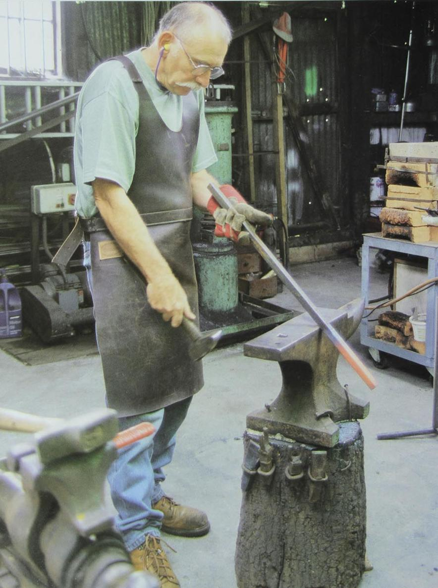
检查金属条的平直度。注意防护服——眼睛和耳朵防护、皮革围裙、手套和安全靴。还要注意固定在砧座上的各种砧工具。
铁匠工作是一项潜在危险的活动。但开车也是如此,就像你开车时系上安全带并遵守交通规则一样,在铁匠工坊里你也需要穿戴防护服并养成安全的工作习惯。在多个机构教授铁匠课程的经历让我始终抵制”安全”只是课程中附加讲座的想法。我的信念是安全应该成为你工作方式不可分割的一部分。正如老话所说——工坊里最危险的东西就是你自己。如果你意识到危险,你就已经在最小化风险方面走了很长的路。本着这种精神,本书将始终提及安全考虑事项。
安全既包括着装方面采取明智的预防措施,也包括采用良好的工作程序。安全工作应该像系安全带和保持在白线正确一侧一样成为本能。就像开车一样,这主要是常识。
铁匠铺使用的衣服需要结实舒适。总的原则是遮盖身体。传统的皮革铁匠围裙有很多值得称赞的地方,为你的身体前部和腿部提供高度保护。
应避免使用尼龙或其他合成纤维制成的衣服。火花可以直接穿透尼龙衬衫。或者靠得太近的尼龙袖口可能瞬间融化。棉质或羊毛服装更好。不要在炎热天气时穿短裤进入铁匠铺。氧化皮或热金属很容易从砧子上掉落并烫伤你的腿。棉质牛仔裤、工作裤或连体工作服提供了有价值的保护。穿着T恤露出手臂是夏季服装的极限。即使如此,也要准备好偶尔有一片锻造氧化皮粘在前臂上,在你能刷掉它之前会相当疼痛。长袖衬衫可以在你握着手凿对着热金属条工作时保护你的手臂免受辐射热的伤害。
最关键的装备是眼睛防护。目前的做法倾向于使用聚碳酸酯镜片的眼镜,这种镜片具有高度抗冲击性,尽管它们可能会被刮花。各种各样的安全眼镜都有售,许多带有面颊保护和侧面护罩。有些可以戴在处方眼镜外面。戴安全眼镜的目的不是主要为了抵挡重物飞溅的金属块,而是火花和小颗粒。火——特别是焦炭火——会偶尔喷出炙热的砂砾。锻造热铁或钢会产生氧化皮(黑色氧化铁),在敲击金属时会不断脱落颗粒。由于你锻造时脸就在金属正上方,很容易让一片氧化皮进入眼睛。
如果你在手臂长度距离工作时佩戴处方眼镜,它们在普通锻造期间可能提供足够的保护。使用有色眼镜有一定道理。这些眼镜像太阳镜一样,可以过滤热量和紫外线辐射,长期严重暴露会导致眼睛损伤。教训是不要盯着火看。对于打磨,封闭的软塑料护目镜更好,可以更好地防止从各种角度接近眼睛的杂散火花。养成习惯,一进入工坊就戴上安全眼镜。
在锻造时佩戴皮革或皮革与棉质的工作手套是非常值得的。许多铁匠在砧子上工作时用裸手握锤,但在握持热金属的手上戴手套。裸手对锤柄有更好的抓握力。程序始终是用戴手套的手拿起金属,绝不用裸手。很容易抓住一块已经不再显示任何热色的金属,但仍然足够热以造成严重烧伤。对砧子周围的每一块金属都要持怀疑态度,在拿起它之前通过将裸露的手掌悬停在一两英寸的地方进行测试,在那里可以感觉到热量。我更喜欢使用刚好盖住手腕的手套。虽然有几乎到达肘部的护臂手套(gauntlets),但除非你正在处理非常大的热金属块并需要额外的手臂保护,否则我发现宽大的张开袖口往往会漏入热氧化皮。试图从手套里摇出一片热氧化皮可不好玩。
另一个常见的危险是重物砸到脚上。优质的包裹脚踝并带有钢制护趾的皮靴非常值得投资。皮靴或包脚的鞋子,即使没有钢制护趾,也比敞口鞋或带尼龙面板的运动鞋更好。无论穿什么,裤腿都应该盖在鞋子外面,以防止热的锻造氧化皮或热金属块滑进靴子或鞋子的边缘。疯狂地脱靴子是一次难忘的经历,它同时证明了这件事能有多快完成,以及穿尼龙袜子是多么不明智。
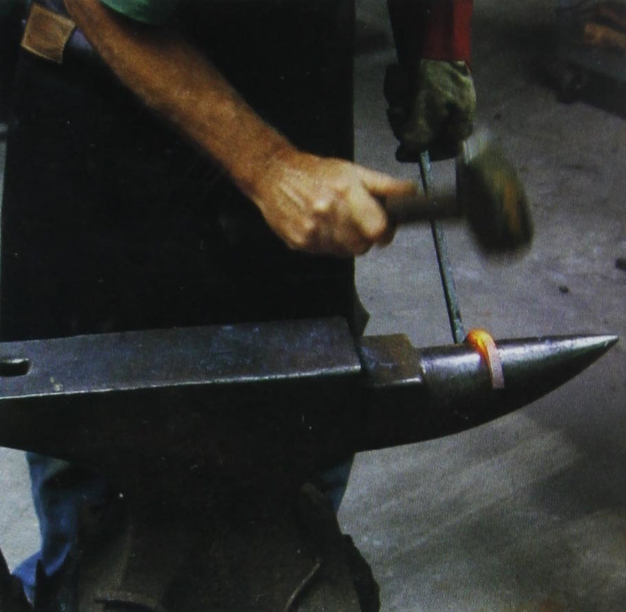
左手戴手套进行锻造
靴子还能防止你踢到金属碎片,或被尖刺和锋利边缘划伤。踩到刚切下来的热金属碎片是常有的事。它会熔化进靴底并粘住。聚氨酯鞋底似乎比橡胶鞋底更能应对这种情况。解决办法是跟踪热碎片的位置并确保它不会碍事。还值得注意的是——如果你能找到的话——皮鞋带远比尼龙鞋带好,而安全靴通常都配尼龙鞋带,但这种鞋带很容易被锻造氧化皮、砂轮火花或气割火花熔化。
如果你想保护听力,罩在耳朵上的护耳罩或塞进耳朵里的耳塞都很重要。我在不同时候使用这两种类型。噪音危害往往是间断性和可变的。使用角磨机、在动力锤旁工作以及在铁砧上进行某些活动,显然会产生强度和水平都需要保护的噪音。装在弹性塑料框架上的耳塞非常方便,因为你可以把它们挂在脖子上,随时可用。当你在某项嘈杂活动中持续工作时,’耳罩’类型可能更好。任何时候你都不应该经历实际上令人痛苦或让耳朵嗡嗡响的噪音。如果确实如此,你就应该戴上防护装备。但噪音的影响是累积的,长期处于较低水平的噪音也会损害听力。
近年来人们对锻造除实心棒材以外的型材产生了兴趣。如果壁厚合理,管材可以像实心棒材一样锻造。但它确实存在两个安全隐患。一端放在煤火或焦炭火中时,它可以像漏斗一样将未燃烧的气体引入车间(即使是槽钢或’工’字钢也会这样)。这不仅在吸入时会带来危险,而且随着烟雾而来的还有热量,所以远离火源的一端可能会变得意外地烫。其次,如果管材被淬火,即使在黑热状态下,蒸汽和热水也会从管子末端戏剧性地喷出。答案是预见问题。用布堵住管子的末端,如果可能的话避免淬火管材,但如果必须这样做,一定要将其指向安全方向。
车间通风在锻炉烟雾的背景下已经提到过,但使用角磨机研磨或钢丝刷清洁金属表面也会使车间充满空气中的粉尘。使用口罩是明智的——即使是简单的一次性口罩也能产生很大的不同。要知道,如果你用钢丝刷清理从废品场回收的金属上的松散油漆,它很可能含铅。
危险作业至少和穿错衣服一样是个问题。车间可以是一个进行实验和自发活动的地方,但不能是不假思索行动的地方。你做的每一件事都应该经过仔细计划和执行。在车间安全工作需要有纪律的常规程序,涉及许多小事,其中大部分归结为常识。
为他人着想。当你挥动锤子或操纵长金属材料时,要注意你身后有谁或有什么。学会预见风险。例如,不要把材料或工具留在地板上,你可能会被绊倒。为所有东西准备存放位置,并随时清理。即使是短的棒材切头也可能像小滚轮一样让你滑倒。永远不要把材料,特别是你可能已经锻造成尖头的棒材,夹在虎钳中让末端伸出来。永远不要把长材料就那样垂直靠在工作台或虎钳上。永远不要用锤子敲击锉刀,它可能会碎裂,碎片四溅。等等。这些都不是什么特权信息,只是车间版的不要让锅柄从炉灶上伸出来。
最后有两个典型的事故应该提一下。一个是在铁砧上相当粗野地敲打一块金属,没打中,然后锤子从铁砧面意外反弹,击中你的前额。另一个是快速转动虎钳的松动把手来拧紧它,结果它突然停止并掉落,把你的手指夹在末端的旋钮下。
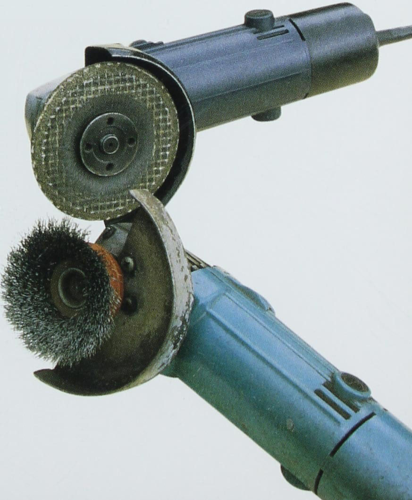
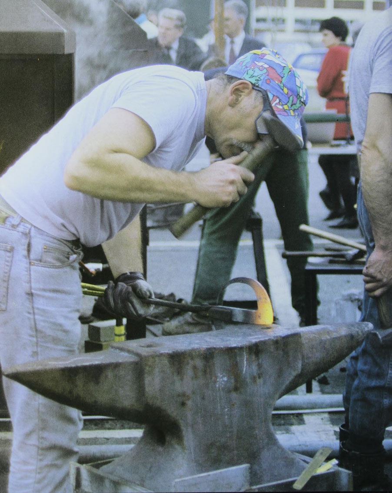
在露天锻造活动中锻造。注意肩膀几乎在工件上方
铁匠活动的核心是在铁砧上工作。这不是像工作台那样的被动工具,而是在锻造过程中发挥非常积极的作用,提供工具孔、表面、孔洞和边缘,对工作的贡献与锤子一样大。惯用右手的铁匠通常工作时让砧嘴(bick)朝向左侧,但可能需要移动到铁砧周围的各种位置才能有效工作。
初学者可能不习惯用锤子精准击打，但可能曾经用锤子钉过钉子。锻造至少需要同样的精准度，但击打通常更重。要做到这一点需要调动整个身体，从手、手臂和上身，到腿和脚的位置。
新手铁匠往往会把锤子握得太紧，使用时非常僵硬和拘谨，就像初学骑自行车的年轻人一开始会紧握车把，指关节都发白了，僵硬地试图保持平衡。一旦你开始少想抬臂和锤击的动作，而更多地关注锤子对金属的作用，你就会开始放松，你的手、身体和脚会找到正确的位置。这会变成像骑自行车一样无意识的活动。同样地，过程本身也会变得远不如你要去哪里或你要做什么重要。
握锤应该刚好紧到能控制它，但要让它能在手中自由转动。初学者往往站得离铁砧太远，可以说是在一臂之外工作。击打时，你持锤手的肩膀需要几乎在工件的正上方。重要的是要靠近一些，在铁砧上方工作而不是在旁边。初学者也可能只把锤子抬起几英寸，轻敲而不是给予实在的一击。要把锤子抬高。冲击力与高度成正比。
节奏也很重要。每种重量的锤子都有其自然的击打速率。用较轻的锤子可以更快地连续击打。这使得小锤子更适合，例如锻造薄材料或塑造铆钉头。如果你顺应锤子而不是对抗它，很快就会发现每种锤子的节奏。
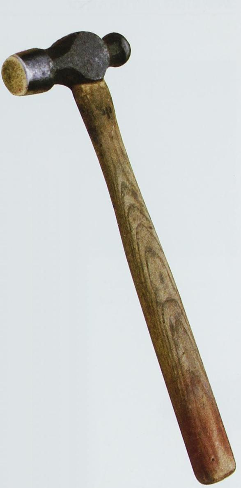
某些操作需要在短时间内使用多种工具，例如冲孔和扩孔，或者只是用下铁(hardie)切断金属。锤子应该始终放在铁砧面上准备好，也许还有另一个工具，但更多工具可能会被碰掉并掉到地上。一个解决方案是利用铁砧架上的空间，可以把手工具放在铁砧脚之间的顶面上，或者在铁砧架侧面安装U形钉来放置下铁、弯曲叉(bending fork)等(第30页)。另一个办法是做一个小桌子，装在三脚架上，可以移动，在铁砧高度提供一个放置工具的地方，可以快速拿取。这避免了地板上工具杂乱,可能会绊倒你。
用钳子(tong)夹持工件永远不如直接握住金属条容易。因此,好的做法是趁金属还是原始金属条的一部分时尽可能多地锻造。规划工件(或多个工件),使大部分工作在金属条上完成,然后再切断并用钳子完成另一端。这样,一个部件可以被锻造并在下铁上从金属条上切下,留下母条的末端仍然是热的,在锻造下一个工件之前只需要稍微重新加热。许多重复部件——例如锥形销——可以被制作并切下,而不需要打断节奏,或停下来冷却和锯切金属。
作为一般原则,工作应该计划好以保存热量,这样工件不必进行超过必要的冷却和重新加热。根据工作的性质,规划最有效的工作方式本身就可能是一个有趣的挑战。
重要的是要强调,即使你只是制作一件物品——比如6英寸(15厘米)长——也要切一个”操作长度”,一块方便的金属,大约2英尺(60厘米)长。这应该是一个舒适的握持尺寸,并且有足够的长度,使剩余的金属仍然足够长以用于另一项工作。需要例如一英尺(30厘米)或更多金属的较长锻造件可以背靠背制作。金属条的一端被加工,然后成为把手,使你能够锻造另一端。这都构成了工作的经济性,不是因为金属昂贵,而是因为时间宝贵。由于金属只在高温时的短暂时间内可锻,所以有充分的理由使工作时间尽可能有效。
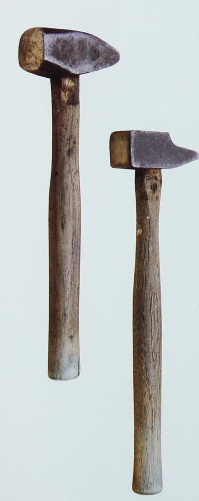
制作锻件通常有两到三个不同的阶段。第一个是通过锥化、冲孔、展宽或任何需要的方式改变金属条的截面,但始终要小心保持金属条笔直。第二个是将锻造好的金属条弯曲成型。第三个可能是将这根金属条与其他金属条组装。这个顺序可能看起来很明显,但除非牢记在心,否则很容易过早地弯曲金属条,然后发现它现在的形状使得,例如,无法在需要的地方冲孔。
加热工件的过程被称为”加热(taking a heat)“。对铁匠来说,在特定操作中”一次加热(in one heat)“完成是一种技能的体现。从语言学上讲,这也是短语”在那一刻(in the heat of the moment)“的起源。观看铁匠,例如,”在那一刻”冲孔和扩孔,会让这个表达生动地呈现出来。
铁和钢具有一个重要优点，即它们是不良的热导体。它们的导热系数很低——这是衡量热量通过金属传递速率的指标。(例如，铜的导热系数是钢的九倍)黑色金属的这一特性为铁匠提供了根本性的优势。一根金属的一端可以被加热到黄热状态并保持相对较长时间的高温，而另一端仍保持凉爽，方便地提供了一个手柄。当然，最终热量会沿着金属条的长度散失，较凉的一端会变得太热而无法握持，但这不会在几次加热内发生。
至关重要的是，金属条的某一部分可以单独加热，使其变软并能够在精确位置进行操作，而其余部分保持凉爽和坚硬。作为不良导体，热金属会保持更长时间的高温，因为热量只会缓慢地传递到金属条的其余部分。金属在最热的地方移动得最多。能够以这种方式隔离热量，为铁和钢的锻造提供了一种控制水平，这在其他金属中要难以实现得多。相比之下，铜条在烧红的部分和其余部分之间不会显示出明显的分界，并且热量会非常迅速地沿其长度散失。
对于观察者来说，加热、锤打金属然后将其送回火中的过程似乎涉及长时间的等待，中间穿插着短暂的疯狂活动。但加热时间不仅仅是休息。保持专注并在心里预演当金属准备好时你要做什么是非常重要的。必须预先准备好所有必要的工具并放在手边。除非你快速而果断地工作，否则机会就会被浪费。如果你失去专注，很容易将热金属放在砧上，却发现你把锤子留在了火边。“趁热打铁”不仅仅是一个比喻。无论你在准备过程中还需要做什么，从金属进入火中的那一刻起设定你的心理时钟也至关重要，这样你就可以在它燃烧之前把它取出来。
铁匠通过金属的”颜色”来判断温度，即热金属棒发出的光芒。在良好明亮的锻炉火中加热一段低碳钢的末端，并在其尽可能热时取出，这是很有启发性的。在煤或焦炭锻炉中，它会达到黄白热状态并开始熔化，并像烟花般真正地燃烧、冒火花和发出嘶嘶声。将金属加热到这一点——破坏材料——显然应该避免，但就在这个温度之前，金属处于最软和最具延展性的状态。将其从火中取出并观察金属冷却时的颜色。它从黄色变为橙色再到红色，到只能在黑暗中勉强看到的非常暗淡的红色。最后，尽管它仍然很热，但它不再发出任何光芒，并恢复黑色外观。观察这些颜色并熟悉它们。
许多术语被用来描述热色——樱桃红、中樱桃红、血红等等——作为识别特定工作温度的方式，但这些在文字上很难精确定义，因此有时比有用更令人困惑。最关键的要识别的温度是最有效的锻造温度，此时金属呈明亮的黄色，即将燃烧。
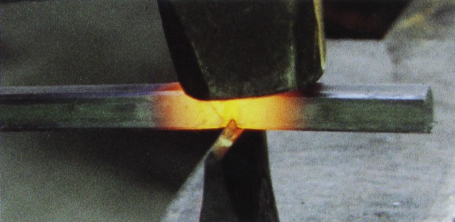
“趁热打铁。” 热切割。
这个温度，我将称之为”黄热”，用于所有主要的锻造操作，如锥削、镦粗(upsetting)或冲孔。在黄热状态下，金属能够发生相当大的塑性变形。当它冷却到我将称之为”红热”的状态时，它变得难以塑性移动，但仍然容易弯曲。因此，虽然黄热非常适合改变金属条的截面，红热更适合用于将其弯曲成形。在红热状态下，锤子也不太可能在金属条上留下痕迹。因此，一次加热通常可以从重击开始，利用黄热尽可能多地移动金属，然后以较轻的打击结束，以弯曲或拉直金属条。
另一个温度很重要——焊接热。这是金属刚开始发出一些火花时的明亮黄白色。实际上，它刚刚开始燃烧。从火中拉出时，金属表面看起来像液体。
重要的是让热量完全渗透到金属中。记住钢是不良导体，金属表面可以显示特定的热色，而内部却较凉。金属越厚，这种情况就越可能发生。答案是稍微有点耐心。
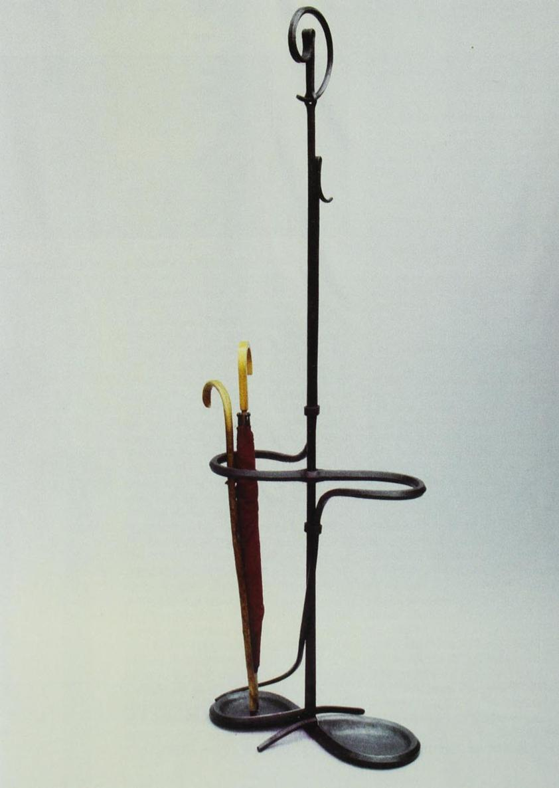
约翰·克里德(John Creed)制作的优雅雨伞架和帽架。在弯曲前仔细规划的长锥形。
拉伸涉及锤打金属条以减小其截面并增加其长度。经典用途是制作锥形，这是一个典型的锻造主题。锥形可以在一个平面上或在两个平面上。金属可以被打成像凿子一样的扁平尖端，或者像细长金字塔一样的方尖，但锻造过程本质上是相同的。
当棒材末端处于黄热状态时，将其以轻微角度对着砧面放置，敲击一两次，然后将棒材扭转90度，再敲击一两次，返回原始位置并重复。没有必要旋转棒材来敲击所有四个面。通过扭转手腕，棒材可以旋转90度而无需改变握持方式。这个原理很重要。找到一个舒适的握持方式，能够让手腕准确地旋转90度角，这是保持棒材截面真正方正的关键。用一根冷的方形棒材练习，将其从一个面扭转到另一个面，这样的时间花费是值得的。将手靠在腿上以稳定棒材同时敲击，这也可能有所帮助。
记住你只需要敲击两个相邻的面。敲击应该是直接而有力的，而不是沿着棒材擦拭。在一侧锤击会压扁棒材，使其变薄但变宽。将棒材扭转90度可以依次压扁较宽的一侧。最终效果是减小截面并沿着棒材移动材料，增加其长度。为了将棒材打成尖头，应该将其定位，使工件的尖端始终在砧的远边缘。对于方形尖头，棒材的宽度和厚度应均匀加工。对于凿形尖头，棒材在一个平面上的加工多于另一个平面，因此宽度呈锥形而厚度保持平行。
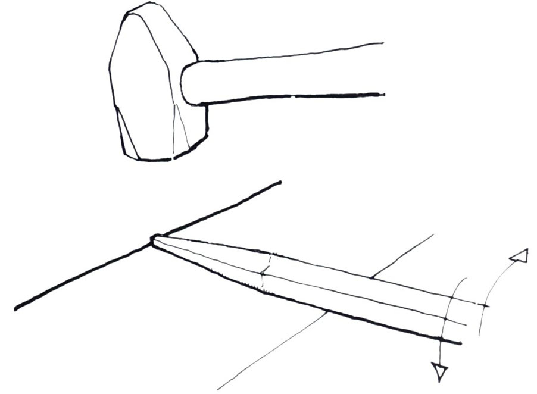
在砧面上锻造方形锥度。
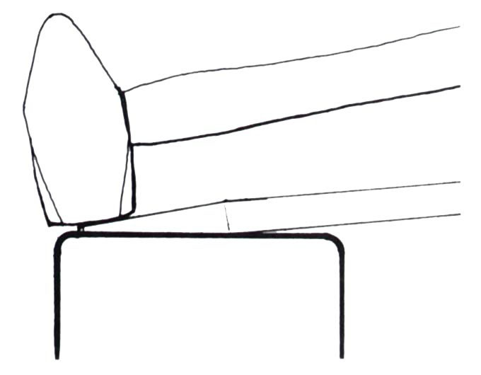
将锥度末端定位在砧边缘，使锤子能够锻造尖端。
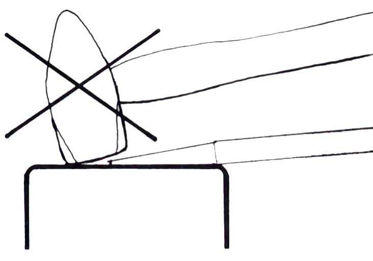
在这个位置，锤子可能会击中砧，而不是锥度末端。
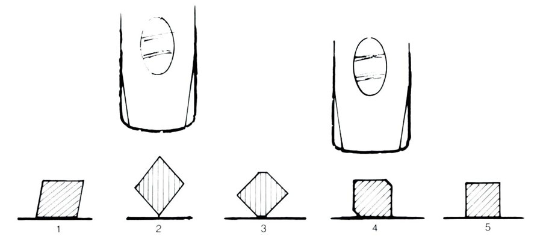
修正已经失去方正的截面。
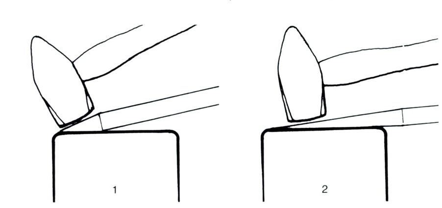
首先锻造短锥度，以避免末端开裂。
如果方形棒材每次没有准确旋转90度，它很快就会发展成菱形截面，然后很容易扭曲或压扁。这是需要注意的趋势。如果立即发现，通过将菱形的长轴转为垂直并给予几次敲击，然后恢复正确的对齐，很容易修正截面。如果在金属太接近其成品尺寸之前完成此操作，可以重新建立正确的方形截面。
金属的内部运动——在两个直角方向上交替被压扁——产生的应力可能导致棒材末端开裂。因此，无论所需锥度多长，最好从锻造一个突然的锥度开始，在尖端几乎达到成品尺寸。这将减少棒材末端开裂的趋势。然后可以向后锻造，将锥度增加到所需长度。这个问题也可以通过在焊接热下锻造棒材尖端来克服。这并不难实现，因为棒材的细端会比后面的主体加热得快得多。轻轻锤击将焊接裂缝。
更常见的是，问题是相反的，即试图避免烧毁末端。这可能需要将棒材推过煤火或焦炭火的热中心，使易损的尖端从另一侧伸出。或者可以将尖端浸入水箱中，在继续加热之前冷却它。只要你锻造的是低碳钢，这不会损害金属，但应该避免用于碳钢。
在锻造锥度的过程中，棒材总是会弯曲并需要矫直，锥度的规则性需要检查。沿着棒材瞄准将使你能够定位并评估这两件事(第30页)。通过将棒材放在砧面上，弯曲的顶点朝上，然后向下锤击，可以矫直棒材。应注意锥度不规则的位置并锻造成干净的线条。始终保持棒材尽可能笔直而不让其失控，这始终是良好的做法。“工件在每个阶段都应该看起来良好”，这是车间的真理,这确实值得追求。
始终记住,在棒材末端制作尖头时,你刚刚制造了一个潜在危险的尖刺。永远不要将其留在你可能会撞到它的位置。
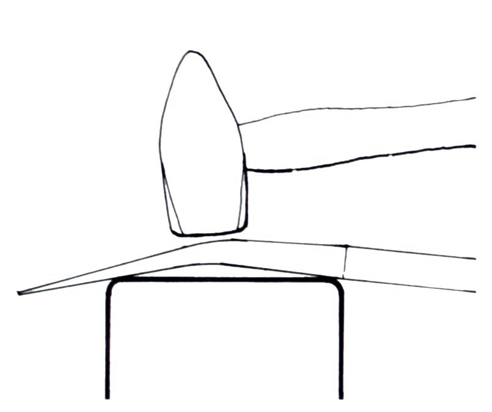
矫直棒材。
理解金属如何移动是有帮助的。来自锤子平面的打击使热金属向所有方向扩散。正如我们所看到的，用锤子的平面使棒材锥形化时,宽度和厚度被压扁,以挤出长度。但是通过使用锤子的横錾端,金属可以被控制为更特别地在一个方向上移动。横錾端凿入,移动材料。这样,棒材可以根据需要在长度或宽度上展开。这个原理可以应用于拉拔,通过取黄热并沿着棒材放置一系列打击来拉伸它。向尖端放置更多打击将使该端变薄。
锤子的平面用于平滑波纹和不规则处,以完成锥度。必须使用锤子的平面来修复损坏似乎是浪费时间,但这样锥形化可以快得多。
这种”刻痕”金属的过程称为fuller锻造(fullering)。同样的效果可以通过在砧的圆边上、在砧嘴(bick)上用锤子的平面加工金属,或者使用插在方孔(hardie hole)中的fuller工具来实现。一般来说,这些技术对于较厚的棒材更有用,因为使用它们节省的时间更明显。这是一个实验问题,以找到它们最合适的用途。
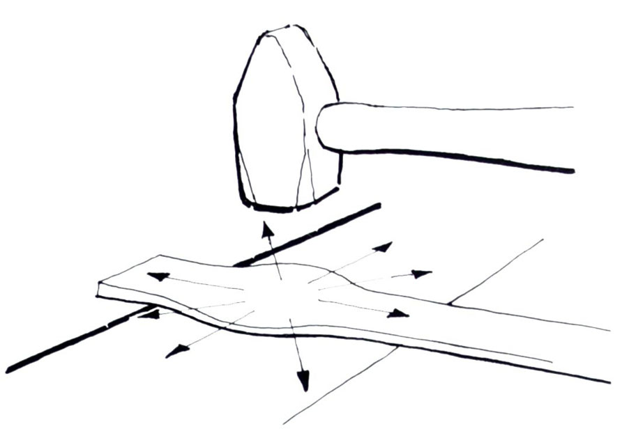
锤子的平面使金属向所有方向扩散。
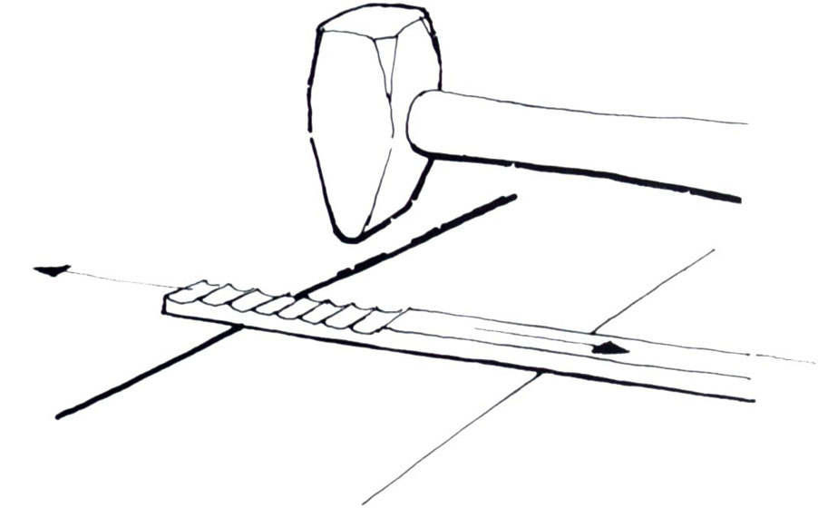
横錾端展开金属;主要在一个方向上。棒材长度增加。
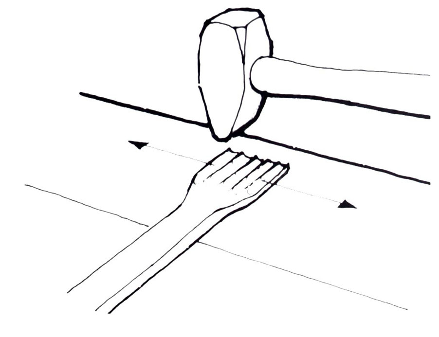
使用横錾(cross pein)增加铁条的宽度。

在铁砧的尖角(bick)上拉伸铁条。
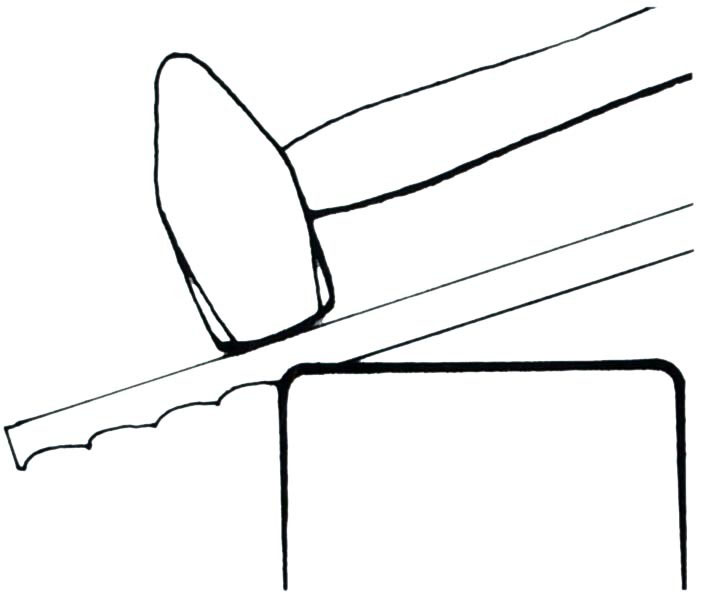
在铁砧边缘上拉伸铁条。
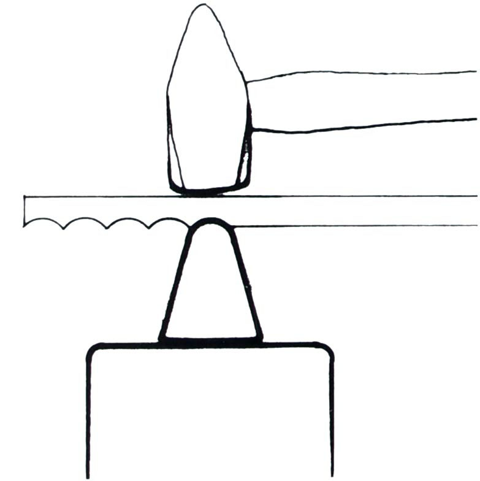
在圆凹模(fuller)上拉伸铁条。
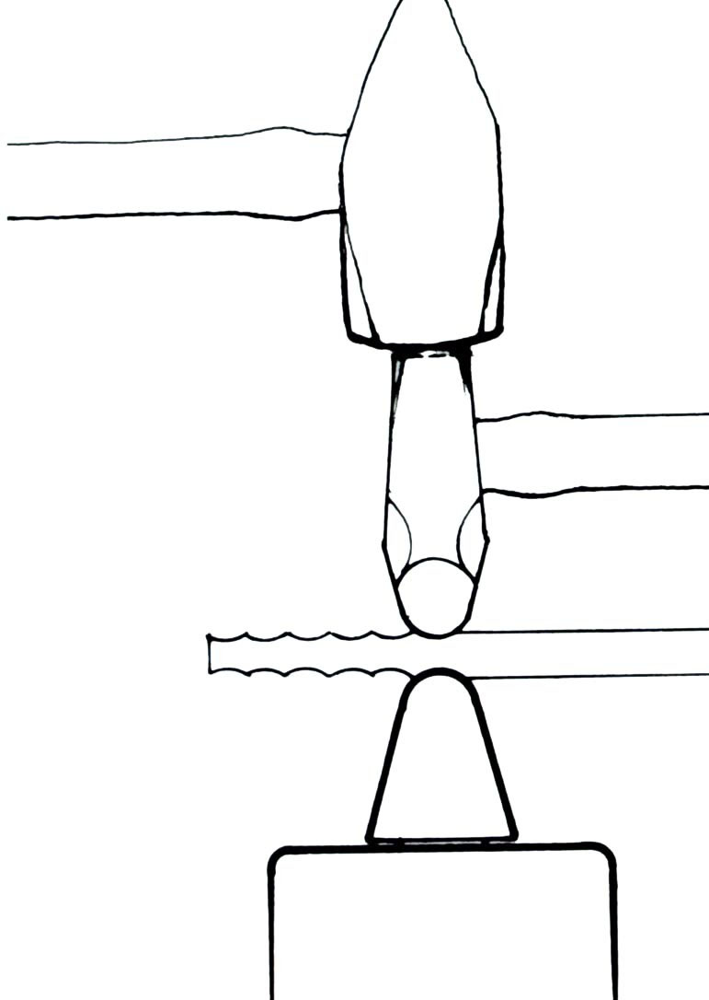
在上下圆凹模之间拉伸铁条。
如果不小心，扁平铁条的末端可能会被折叠并锻造成裂纹。
锥形扁平条的锻造过程与锻造方条相同。但是，可能需要更加小心，以避免条的末端折叠，并将其锻造成裂纹。除非格外小心地压平条的厚度以抵消折叠，否则宽扁平条特别容易出现这种情况。如果使用横錾锤来拉伸条的平面，将锥形扁平条锻造成凿尖会更容易。
锥形圆条的锻造开始时就像材料是方形截面一样。在条上施加一个短的方形尖端,然后拉伸到锥形的接近完成长度。由于没有方形表面作为参考,方形锥形的准确性取决于判断,可能需要纠正任何菱形截面发展的趋势。然后将方形锥形转到其角上,锻造角部使锥形成为八边形。最后通过在锤子下来回旋转条,使用轻敲来使其变圆。类似地,可以在方条或扁条上锻造圆形锥形。
锻造圆尖的各个阶段。
最后敲击的图案会给圆形锥形带来非常特殊的外观。敲击可以紧密排列,形成精细的纹理表面,或者间隔更远以显示明显的刻面。无论哪种方式,锤击表面看起来都与轧制原条的表面截然不同,对于方形或扁平截面也是如此。因此产生了一个问题,是否应该锤击整个条以统一其外观。
上世纪中叶,伟大的德国铁匠弗里茨·库恩(Fritz Kuhn)在写作中谈到锤击整个条使其成为”他的”金属。例如,在拉伸方条的一端后,他会继续加热并锤击剩余的普通部分。应该说,不是为了给它某种”乡村”外观,而是为了在其上印上他的性格和个性。当代德国锻造工艺在很大程度上归功于这种哲学——锤痕的美学。
传统的英国锻造工艺倾向于采取相反的方法,避免任何多余的锤痕。也可以这样认为,如果锤痕是用于塑造金属的动作记录,那么让不需要锤击的部分保持原样会更诚实。没有确定的答案,每种情况都不同,最终选择权在你手中。
由于锥形是在条的末端”生长”出来的,因此在开始锻造之前测量并记录条的长度是有意义的常规做法。一旦你满意锥形符合要求,可以再次测量条。长度的增加是关键尺寸。记录锥形的长度和产生它所需的”坯料”是重要信息,值得保留以供将来参考。在工作时做笔记,即使只是简单地用粉笔写在地板上或锻炉罩上,也是一个值得培养的好习惯。这些笔记可以作为项目文件中保存的信息基础,使你能够制作另一个类似的作品。即使最初的意图是制作单个物品,你也可能烧掉末端,你可能随后想要制作更多,或者你可能希望修改原始设计。在每种情况下,关于原料尺寸、锥形长度等的笔记都是至关重要的。
作者制作的镜子,从分叉的粗条中拉伸出长锥形。
典型的车间记录图纸。
计算锥形。
a) 体积 = × B × W。长度为H的方尖可以从长度为的条锻造而成。
b) 体积 = ×。长度为H的圆尖可以从长度为的条锻造而成。c) 体积 = ½H × B × W。长度为H的凿尖可以从长度为½H的条锻造而成。
制作从一端到另一端逐渐变细的部件很简单。可以在条的一端锻造然后切断。但通常需要锻造条的两端以产生所需的部件。这意味着需要预测锻造另一端所需的条长度,以便在正确的位置切割。
制作特定锻件所需的材料可以通过计算成品材料的体积并反向计算来确定,找出该体积所代表的原料条长度。对于那些有算术头脑的人来说,这使得各种形式可以被分析为几何实体并确定原料长度。但幸运的是,对于简单的锥形,公式的应用会得出非常简单的经验法则。在方条或矩形条上产生给定长度的凿端锥形所需的原料是锥形长度的一半。在方条上产生方尖或在圆条上产生圆尖所需的原料是锥形长度的三分之一。
查尔斯·诺曼代尔(Charles Normandale)制作的井栅栏,展示了用于表现井的形状的锤痕图案。
这假设在每种情况下锥形都被拉伸到锋利的边缘或尖端,并且轮廓确实是直的。它还假设金属的流动是完美的,并且不会以氧化皮的形式损失任何金属。实际上通常会有差异,可能需要在理论长度上增加5-10%。
可能不用多说，但要制作不对称的锥度，最简单的方法是先将其锻造成对称形状，然后将其偏离直线锻造成最终形状。在纸上绘制时,这两种形式可能看起来完全不同,但区别只是杆端的轻微横向位移。因此,计算材料长度时适用相同的经验法则。
通过偏移锥度使其不对称。
Alan Evans 在邱公共档案馆制作的系缆柱。重型杆材上的阶梯式锥度,采用冲孔和铆接连接。
显示从凹槽中拉伸锥度的过程。注意从短凹槽部分拉出的锥度长度。Charles Normandale,用于特许会计师公会大厅饰带的固定件部分。
锥度可以从杆的台阶处开始。对于较小的杆材,可以通过加热至良好的黄热状态来实现,将杆仔细放置在砧的适当圆弧边缘上,用锤击打使其与边缘重叠。如果需要,杆可以在两个平面上形成台阶。对于前一两次打击,将杆保持略微向下的角度可能有帮助,以确保砧的边角在正确位置积极地切入热金属。一旦确立,这个切口将用于在锻造锥度时将杆定位在砧边缘,然后按已描述的方法加工锥度。如果需要,可以保持缩小部分平行。
对于较大的材料,使用顶部凹模(top fuller)制作初始切口更容易,也更易控制,将黄热的杆放在砧的平面上,然后从切口处拉出锥度。通过这种方式,可以在杆的周围开槽,并从凹槽中拉出方形杆。
锥度不必位于杆的末端。通过将杆的一部分定位在砧远边缘之外,并按刚才描述的方法锻造一个小切口,可以从切口向任一方向锻造锥度。这种技术的经典应用是锻造叶片。先在杆端锻造一个短锥度,然后将杆放在砧的远边缘(那里有圆弧边缘),在两个平面上向下锻打以形成颈部。这样做的效果是在茎上隔离出一小段杆。这一小段就是将成为叶片的坯料。在将坯料压扁制成叶片之前,可以改进茎和坯料的形状。坯料的形式决定了叶片的形状。通过这种方式可以制作出各种叶片形状。
由于杆在拉伸过程中长度会增加,这种效果可用于调整其长度以适应特定尺寸。这在例如杆的两端都已锻造完成,或两个孔打得稍微太近的情况下特别有用。在方形杆上加热至红热状态,沿相邻两面锤打一小段距离,可能就足以使其加长。如果需要更多调整,应在杆的更远处再次加热。通过明智地使用这一过程,杆可以增加相当大的长度,而不会显示出明显变薄的迹象。
如果杆已经太长,可以通过镦粗(upsetting)来缩短,这在第6章中有描述。
从肩部向下拉伸。
在圆杆上锻造叶片。
Brian Russell 的精致自由弯曲。新住宅开发项目的入口拱门。
通常所有改变杆截面的锻造工作都在保持其笔直的情况下完成,只在最后阶段弯曲成形。在杆仍然笔直时进行锥削、冲孔或展开要容易得多,因为弯曲可能使某些部分无法接触。这意味着必须仔细规划这些特征的位置,以便在杆弯曲后它们完成在适当的位置。
测量图纸上曲线的最简单方法之一是使用一段白色塑料涂层电线或晾衣绳放在图纸上,用软铅笔标记重要点。将线拉直后,这些尺寸可以根据需要用粉笔标记在杆上、钢板上、地板上或砧面上。线上的标记很容易擦除,下次可以重复使用。如果已经制作了锻造原型,可以类似地将线沿金属铺设以绘制重要细节的位置。
对于许多目的,粉笔标记可能足以定位弯曲点。粉笔标记在黄热表面上是看不见的,但在红热时可以看得足够清楚。在距离弯曲点稍远的地方做标记可能有用,那里的金属不会那么热,并将其与砧上的标记对齐。在完成弯曲之前检查从杆端的尺寸,可以在必要时调整其位置。如果必须要精确标记,可以在杆侧面用中心冲打标记,但在工作完成后标记仍然可见。在弯曲内侧做的类似标记可能不太容易使用,但会在弯曲时闭合。避免在弯曲外侧标记,因为冲孔标记会因弯曲而被拉伸,使其更加显眼。
弯曲杆的效果。
理解弯曲金属棒时的变形原理很重要：弯曲外侧被拉伸，而内侧被压缩。如果在方形金属棒中部附近进行短暂加热，然后将两端拉到一起形成180度弯曲，就能清楚地看到这种效果。弯曲外侧变窄，外表面变成凹面，而内侧变宽，内表面隆起。在这两个极端之间，金属棒的中心线被视为”中性轴”(neutral axis)，既不被拉伸也不被压缩。它是金属棒中唯一保持原始长度的部分。因此，用柔性尺在图纸上测量，或在弯曲金属棒原型上测量时，必须沿着中心线——即中性轴进行测量。
弯曲金属棒有多种不同方法。最直接的方法是进行充分的红热加热，加热长度要超过所需的弯曲部分，将金属棒放在砧边上，在砧面之外的位置——即悬空处敲击。在砧嘴(bick)上作业时，金属棒应垂直于砧嘴的弧度放置。砧提供支撑点，锤子提供杠杆力。需要强调的是，这与锻造拔长锥度时的动作完全不同，后者是将金属棒夹在锤子和砧之间锻打。连声音都不一样。如果对金属进行长时间加热，可以非常快速地制作出自由曲线和波浪形。这是创造流畅曲线最自然的方式，能够呈现出其他方法难以实现的新鲜感。也可以通过将金属棒一端放在砧面上，敲击热金属棒使其弯曲，在弯曲内侧进行作业。
在砧嘴上自由弯曲。
金属棒必须垂直于砧嘴的弧度。
通过直接锤击弯曲金属棒。
自由曲线和弯曲也可以使用装在方孔(hardie hole)中的砧叉，配合手持卷曲扳手来完成。砧提供一个固定点，使金属棒可以固定在砧叉中，用扳手拉成所需形状，或在两个扳手之间施加杠杆力。将金属一点点地移动通过砧叉，每次稍微拉一下，可以产生长而流畅的曲线，但要注意不要在弯曲处产生扭结或在金属棒上留下痕迹。砧的稳定性是这种技术的限制因素，在弯曲长或重的金属棒时，必须小心避免因施加过大的杠杆力而将砧从底座上拉下来。
用这种方式弯曲时，始终要仔细审视金属棒，纠正曲线中的任何扭结或不平整。良好的自由曲线可以非常美观,但差的曲线看起来就会很糟糕。人眼对曲线的平滑度非常敏感，所以值得花一点时间来完善它。如果曲线严重变形，最好将金属棒拉直重新开始。只要始终在红热状态下作业，反复弯曲、拉直和重新弯曲不会对金属棒造成损害。
如果需要更高的精度，可以在砧的适当部位锻打金属，以复制所需的弯曲或曲线。在悬空处锤击金属棒会产生声音，一旦与砧接触，声音会突然改变。此时要停止锤击，否则金属会被不必要地压扁。
可以在砧的圆角边缘上锤击弯曲，锻打成直角，前提是砧边与砧面确实成90度。从逻辑上讲，似乎可以通过将金属棒放在砧面上，弯曲起点与砧边齐平，然后在砧边上锤击热金属来精确定位弯曲。但实际上，锤击动作容易将金属棒拖过砧边,改变弯曲位置。解决方法是最初将金属棒放置得稍微靠后一些以抵消这种趋势，或者先在砧嘴的细端或砧面的软边上将其弯成较大的弧度。然后可以根据需要调整弯曲位置，并在正确位置锻打使其变尖锐。
使用砧叉和卷曲扳手弯曲金属棒。
扭转扳手(上)；卷曲扳手(下)。
将弯曲移动到标记位置。
在砧边上锤击热金属会将远端向下推，但产生的弯曲在支撑点近侧往往会翘起。如果独自作业，需要偶尔进行矫正锤击，在进一步弯曲金属棒之前再次向下锤击。如果有帮手，让他在你锤击端部时用重型大锤压住金属棒，这将减少这个问题。
圆形或方形金属棒可以轻松弯曲，扁平金属棒也可以在平面上弯曲。
进行锻造弯曲。
然而，如果扁平金属棒的宽度相对于厚度非常大，侧向弯曲就会变得更加困难。弯曲的内外边缘会承受相当大的应力，外侧拉伸而内侧压缩，因此金属棒越宽这种效果越明显。弯曲必须小心进行，特别注意锻打弯曲外侧的平面以帮助金属拉伸，并精确地锤击金属棒的边缘以避免扭曲。
在砧嘴上弯曲环。
制作环眼。
锻造初始弯曲。
通过将端部向另一方向锻造来开始制作环眼。

在砧嘴上使环眼变圆。
任何给定截面能够达到的弯曲半径都有自然限制。但是，可以通过从原始弯曲的两侧敲入金属来进一步锻造弯曲，使其转角半径变方正。这被称为”锻造弯曲”(forged bend)。在此操作中，关键是要在弯曲处加热至黄热，并避免在锤子和砧之间夹紧金属，否则会降低其厚度。由于该操作本质上是将金属镦粗到转角处，因此较长、较重的棒材比短而薄的工件更容易加工。
可以使用砧嘴作为成型模具来制作环。应先在砧嘴上加工棒材的每一端,然后在砧面上闭合环,最后在砧嘴周围修整成真正的圆形。通过结合多种技术,可以在棒材末端制作环或孔眼。显而易见,如果砧嘴不是真正的圆形,制作良好的圆环会更加困难。
孔眼的制作
闭合孔眼
完成的孔眼
弯曲的光滑程度在很大程度上取决于弯曲处金属的温度均匀性。无论在哪里施加压力,金属总是会在最热的地方弯曲。因此热量必须在正确的位置。有时最好的均匀热量就是让棒材完全冷却。只要所需的弯曲不太紧,较薄的棒材和大幅度曲线可以在完全不加热的情况下更好地弯曲。冷棒材可以通过在型砧(swage block)的凹槽上架空敲打来弯曲。通过以一致的力量敲打棒材,并在每次敲打之间移动它,可以形成平滑规则的曲线或环。在两点支撑棒材同时在中间敲打的原理,也可以用于通过在方孔、砧台阶、腿钳(leg vice)的开口钳口或甚至放在砧面上的废料棒材上敲打来弯曲棒材。
在型砧凹槽上弯曲
加热长度也可以用来控制弯曲半径。短热量会产生半径小的尖锐弯曲,而较长的热量会产生半径较大的柔和弯曲。通过在两端淬火或使用焊枪加热来隔离热量,可以通过将一端固定在虎钳中或将其定位在砧或型砧的孔中,同时用手拉动另一端来弯曲棒材。如果测量热量长度并在金属上用粉笔标记,可以用这种方式以合理的精度制作重复弯曲。
使用腿钳可以定位弯曲位置,并将棒材拉圆并锤平到钳口侧面。还可以在正确的弯曲位置冷态夹紧棒材,然后用焊枪尽可能靠近虎钳钳口加热。这对于较小的截面效果很好,但虎钳本身会吸收大量热量,可能会阻止棒材在靠近钳口处加热。更好的方法是先加热棒材,然后使用粉笔标记将其准确定位在虎钳中。由于在黄热金属上无法读取粉笔标记,因此不应将其放在弯曲点,而应放在更靠后的可见位置。然后可以将其与虎钳的远侧或钳口上的粉笔线对齐。在虎钳中弯曲可以以可预测的精度放置弯曲。
在虎钳中弯曲。注意定位弯曲的粉笔标记

使用热量长度控制弯曲半径
方形和扁平棒材的短端可以用作成型模具来定位直角弯曲的间距,例如制作立柱之间间距准确的”U”形。以这种方式使用松散的棒材可以准确地进行多次重复弯曲,这是制作特殊弯曲工具或夹具的一小步。在虎钳中将松散的棒材固定在工件上仅用两只手可能很麻烦,即使是非常简单的装置也会有所帮助。可以在成型模具上点焊一小块较薄的棒材,或者在钻孔中打入两个短销,以防止其掉落在虎钳钳口之间。
教堂栏杆的十字顶饰(finial)
砧提供了制作弯曲和环的方法,最大直径可达砧嘴的全直径,但更大尺寸的精确环需要更大的成型工具,重复弯曲需要更精确的工具。这类工具属于”重复工具”类别,将在第10章中更详细地介绍。
可以通过首先将端部紧紧地弯曲在砧边缘上,然后轻轻地朝向母棒材的方向锤回卷曲,以鼓励棒材自行卷起,从而将棒材卷成平面螺旋。初始弯曲至关重要,因为它提供了其余棒材卷绕的形式。实际上,棒材成为了自己的成型工具。两根棒材可以并排放置并一起卷绕。分离这些棒材可得到两个平面开口螺旋。
平面螺旋可以单独保留,或者例如压平。平面螺旋也可以通过将整个螺旋加热至均匀的红热,将其放在型砧中适当的圆孔上,并使用球头锤或合适的冲头轻轻敲击中心向下,从而推出形成浅锥体。
Alan Evans设计的入口大门。使用特殊的上下工具制作的大量弯曲
卷成自身的平面螺旋
棒材已经锥化并在凹模(fuller)上锤打。曲线只是凹模加工过程中金属位移的结果
尖端在砧面边缘弯折并卷入。
逐渐成形的卷边用锤子轻轻敲打使其卷起。
主题的变化形式。
平面螺旋也可以通过将棒材端部弯成直角、将其固定在台钳中并将剩余棒材绕着这个立柱缠绕来制作。使用加热炬会容易得多。
卷曲和其他重复弯曲在第章的弯曲工具部分中讨论
Miranda Souter制作的窗帘杆顶饰。通过压制平面螺旋制成的锥形螺旋。
平面螺旋烛台的制作过程。
(从左至右)初始的扁平棒材;端部锥化;另一端展开;直角弯曲;螺旋拉圆;尾部切除。
在台钳夹具中拉圆螺旋。如果扁平棒材弯曲,需要一个平面来压平。
作者制作的带铜盘和黄铜盘的烛台。
Steve Lunn制作的门柱,装饰着精美的叶子造型。
镦粗(Upsetting)实际上是拔长的反向操作。对棒材进行镦粗是为了局部增厚。取黄热并对棒材端部施加力,将金属挤压在一起,使棒材变粗并缩短其长度。由于金属在最热的地方移动最多,因此控制加热温度对于确保棒材在正确位置镦粗尤为重要。镦粗可用于将金属聚集到棒材端部以制作圆头或把手,制作铆钉头或提供一块材料作为锻造其他形状的起点。同样也可用于增加棒材中间的厚度,为冲孔、锻造转角或其他细节提供更多金属。
镦粗有多种方法,但每种情况下的问题都是在加工过程中保持棒材的直线度。因此,镦粗8mm圆棒或方棒比镦粗16mm棒材更困难。镦粗25mm棒材可能更容易。不同尺寸需要不同的技术。
棒材的端部应加热到尽可能亮的黄热,将棒材垂直放置,将热端在型砧(swage block)的平面上、地面上的砧或合适的废金属块上敲打。一旦出现弯曲迹象,必须在砧上将镦粗端锻直。取很短的加热并在加工过程中旋转棒材有助于平衡弯曲问题。在第一次加热中镦粗棒材,然后在端部锻出一个短斜面也会有帮助。这有助于使打击力集中并控制镦粗端的锋利翻边。如果需要大量镦粗,可以重复此过程。棒材的重量提供了大部分冲击力,因此最好镦粗一段较长的长度,然后再切割到所需尺寸。
同样可以在砧面上敲打棒材,注意头顶的照明设备。较短的棒材可以通过将其垂直放在砧上并直接锤击热端,或用重锤在另一端打击使其在砧面上下压来镦粗。棒材可以用戴手套的手或钳子握持。较长的棒材可以水平放在砧边缘并用锤子水平敲击,必要时在另一端使用支架支撑。棒材本身的质量提供了阻力使金属能够镦粗,因此这种技术的有效性取决于棒材的重量。
在表面上敲打棒材端部或直接用锤子敲击会产生略有不同的结果。敲打棒材往往产生较长、缓和的扩张形状,而直接敲击金属往往产生较短、更突然的扩张。不同重量的锤子也会产生不同的结果。较轻的锤子只会影响棒材的末端,使其突然扩张,而较重的锤子会产生足够的冲击力使金属从端部向后移动,形成较长的扩张形状。然而,加热长度会产生压倒性的影响。
作者制作的咖啡桌腿,显示25mm(1英寸)棒材通过在块上敲打进行镦粗。
要在某个中间点镦粗棒材,必须在准确的位置进行短暂强烈的加热。这可以通过加热然后在水箱上方的两端迅速淬火来实现,以隔离黄热区域。这需要灵巧的操作。然后可以用已经描述的方法镦粗棒材。如果垂直敲打棒材,较长的部分应在热区上方以提供重量。如果直接锤击棒材端部,应锤击较短的部分。在这种情况下,可以将棒材放入型砧的孔中,底端放在地面的块上,以垂直支撑棒材。然后可以用戴手套的手握住棒材上部保持直线,同时向端部施加打击。无论棒材是水平还是垂直加工,在加工过程中旋转它都有助于平衡误差。一旦开始弯曲就应该在砧上矫直。
对于非常细的铁条，比如8mm或更细的，需要在虎钳中水平夹持以避免滑动，从钳口中伸出的部分略大于其自身直径即可。非常短的加热时间至关重要，而且很难在铁条冷却之前足够快地完成从火中取出金属、定位、拧紧虎钳和锤击端部的操作。使用较轻的锤子会有帮助，因为可以更快地连续敲击。圆棒很容易被锤击推回虎钳中。可以用两段短扁条制作夹具，中间夹一块薄卡片，在边缘钻孔至圆棒直径，形成两个半圆形的假钳口。氧乙炔或氧丙烷加热炬在镦粗细材料时是一项重要工具，因为可以在铁条已经夹在虎钳中时对其加热。铁条仍然很容易弯曲，需要不断注意保持其笔直。
用于夹持圆棒的假钳口。
在某个中间点镦粗细铁条时，使用气炬加热会更有帮助。在火中加热并淬火回火几乎不可能达到足够的速度，因为细材料冷却得太快。在接近中间位置镦粗铁条时也更难避免弯曲。气炬提供了一种几乎即时的加热方式，可以在铁条已经夹在虎钳中时进行加热。然而,小铁条可以很容易地在方孔上校直。镦粗的凸起部分位于孔中，而铁条两侧在砧面上对齐并锤击校正。
Charles Normandale制作的精致门栓，展示了镦粗的球形把手。
作者制作的锈蚀饰面苍鹭。身体和翅膀都是从扁条锥削和展开的。
苍鹭，细节。使用横刃锤展开扁条留下的痕迹。
如第章所述，横刃锤在展开金属时提供方向控制。可以将铁条压平和展开，制作宽大的喇叭形端部、叶片或其他特征。横刃的凹槽作用使金属可以朝一个特定方向移动，在另一个方向上几乎没有位移。因此，与仅使用锤子平面相比，金属可以更直接地成型。
由于母材铁条的尺寸决定了可以实现的最大展开宽度，因此镦粗铁条可以提供更多材料，使展开更宽。例如，可以用相同尺寸的铁条制作更大的叶片。这可能比替代方法更快，替代方法是从更大的铁条开始，将其全部拉拔下来，在末端只留下一小段原始截面。
尽管（或许正因为）这项工艺的体力性质，铁匠们关注于节省时间和精力。因此，决定是取粗铁条并拉拔大部分，还是取细铁条并镦粗部分，是一个重要的选择。如果你有动力锤，拉拔较粗的铁条可能是完全可行的方法。但完全手工完成可能需要大量时间和精力，因此镦粗可能是更好的选择。
Peter Crownshaw制作的门栓。金属既被展开又被锥削。注意用于对闩杆提供弹簧压力的精细锥削端部。
使用方錾热切割。
冷金属可以通过多种方法切割——锯切、剪切、闸刀切割、气割、等离子切割、激光切割等等。但锻造中最具特色的方式是用凿子热切割金属。
使用方錾(hardie)切割在第章中已经提到，这可能是最常用的热切割形式。它用于切断铁条段，或从母材铁条上切下锻造的部件。最简单的方法是将热铁条放在切割刃上，给予一系列垂直打击。随着方錾切入，它会冷却变薄的金属部分，并在切口上显示出一条暗线。注意这条线，一出现就立即停止锤击。你不想切穿铁条并将锤面打到方錾上，使其变钝。也很容易突然切断一个红热的端部，使其飞射过车间，消失在某个难以接近的角落。因此，当暗线可见时，应该将剩余的薄金属网前后弯曲以折断它。
方錾可以对称锻造，并通过均匀研磨两面来磨锐。在这种情况下，从一侧完全切断会使切断的铁条留下倾斜面。然而，方錾可以锻造和磨锐，使一面垂直，另一面以角度研磨，就像木工凿一样。由此产生的切口将在一侧垂直，另一侧倾斜。通过将方錾放置在所需方向，可以用方形或倾斜面切断部件。
通过在方錾上旋转铁条，可以从各个侧面逐步切断。因此，扁条或方条可以在所有四面上刻痕，或者圆棒可以全方位切割。需要小心旋转铁条，使切口在铁条周围对齐。最后几次敲击同样必须轻柔，以免损坏方錾的切割刃。
使用热切凿(hot chisels)可以实现更精确的热切割。这些凿子可以直接手持，也可以装配钢杆或木柄，在这种情况下被称为”定位凿”或”热定位凿”(set chisels 或 hot sets)。定位凿的设计用途是由助手(striker)挥动大锤击打，而铁匠则固定工件和工具。但如果你独自工作，只要工件能够得到适当支撑，也可以使用定位凿。定位凿在切割大型截面时具有明显优势，因为它们使手远离热金属，并允许铁匠用重锤施加数次打击。
金属可以被切割后保留，也可以切割后为进一步锻造做准备。在设计方面，切割可以作为将多根棒材连接在一起的替代方案。一根宽棒材可以被分割成三个分支，或者三根棒材可以被焊接成一根。最终结果可能看起来非常相似。复杂的形状可以从一根棒材上切割和分离，然后锻造，而不是由较小的部件组装而成。
Charles Normandale制作的优雅简洁的十字架，通过热切割棒材制成。
凿刃的研磨方式可以留下垂直或倾斜的切面。如果切边随后要被锻造，这可能无关紧要。但如果切边要保留，可能值得专门研磨凿子以产生特定效果。
沿着棒材中心线切割是该工艺的经典应用，例如制作烤面包叉或一些装饰性的分离细节。在这种情况下，最好使用对称研磨且刃口略呈凸曲线的凿子。尖端的楔入作用有助于将切口的两半分开。最好将棒材纵向放置在砧面上，从端部沿长度方向观察，以便将凿子定位在中心。从远离你的棒材端部开始，将凿子向外倾斜，将其定位在棒材中心。一击就能标记出端部。然后可以将凿子向你倾斜，仍然保持在切口中，注意将其近角对准棒材中心，再次击打。
以这种方式滑动和摇动凿子意味着在移动时不需要将其从凹槽中提起,减少了产生不连续或多重切口的风险。每次移动凿子时,其远角仍然定位在已完成的切口中,因此你只需集中精力确保其近角位于棒材中心。但是,凿子应该每敲击几次后取出并在水槽中冷却,以防止刃口过热。
在红热状态下布置整个切割长度更容易,因为表面可以清晰看到,然后加热到黄热并完全切透。在凿子切透之前,应在工件下方放置一块废钢板(或废有色金属),以保护凿子的切削刃不被砧面钝化。使用锋利的凿子,也可以在虎钳中垂直固定棒材,直接从一端切透。这种方法更适合短切割,其优点是切口两侧的外观相同。
一旦棒材被分割,如有必要,可以将两半稍微张开,方法是敲击每个端部或在hardie侧面周围撬开它们。在良好的红热状态下,可以将一条腿折回覆盖在母棒上,而将剩余的腿锻造成所需形状。锻造好的腿可以折回,另一条腿拉直以依次锻造。重要的是要充分折回每条腿,以便接触到切口末端,从而锻造凿子留下的薄金属边缘。用这种方法切割扁棒比切割方棒或圆棒容易得多。因此,如果需要在方棒或圆棒上分割,应先将其压平,直到其宽度至少是厚度的两倍。然后可以更轻松整洁地分割扁平部分。
应该记住,一旦分割的两半被锻造,只有切口的近端会保持可见,因此重要的是它整齐地位于棒材中心。但如果切口的其余部分稍有摆动,也没关系,因为这将被消除。
意大利高技能铁匠Angelo Bartolucci从一块扁棒热切割和锻造花朵的三个阶段。
切割和锻造窗格栅部件的阶段。(从左上逆时针)棒材分割;一条腿折回以锥化另一条;两条腿锻造;腿锻造回直线;尖端弯曲。
锻造同一格栅单元的阶段。(从左到右)标记切口;一端分割和锻造,并从棒材上切下;两端锻造并在夹具中检查尺寸和对齐;在飞压机工具中将锻件弯曲成”U”形。
切割的目的是分离两块金属。在所述情况下,是两块相等的金属。但切割不必在棒材中心,也不必与其边缘平行。切口可以倾斜,使其终止于棒材中心线,但将其分割成两块不等的金属。例如,这些可以被拉伸成两个不等长的锥形。
切口也可以切入棒材侧面而不仅仅是端部,允许拉出分支。使用弯曲凿子开始切割可能很有用。弯曲凿子也可用于提供装饰性切割,或从热金属中轮廓成型。
分割和拉伸的效果。
1) 沿中心线切割。
2) 切割偏离一侧。
3) 成角度切割。
与其冲孔，不如使用凿子在钢条上开一道切缝，然后可以将其撑开并扩孔以形成孔洞。用这种方法制作的孔洞可以是任何所需的尺寸，取决于切口的长度。例如,可以在扁钢条上开一个孔,其直径远大于钢条的宽度。
较大的切缝可以镦粗,套在铁砧喙上,然后在孔洞外侧锤打钢条,以锻造凿子切割后留下的薄边。同样地,如果凿子切口靠近钢条的一端,末端留下的短段钢条可以锻造形成完美的环圈。实际上,将切口靠近钢条的两端可以锻造出圆环,而无需焊接。
凿子也更容易在相当厚重的工具钢截面上开孔,以制作套筒工具的眼孔。由于凿子要切穿大量热钢,因此必须能够快速取出以冷却,所以凿子应该有良好的锥度以防止卡住。孔洞还应该从钢条的两侧切割。这样做的效果,加上使用锥形扩孔器从两侧交替打入,会在孔洞中留下一个颈部,有助于固定工具的木柄。凿子、压型模、型砧和锤子都可以用这种方式制作。
用凿子在扁钢条上切孔。1) 凿子切口。
2) 钢条镦粗以撑开切口。
3) 在铁砧喙上锻造孔洞,并锻造短尾部,制成光滑的圆环。
Jim Horrobin为V&A博物馆制作的门的热切榫头结构细节。每个榫头最后都铆接到另一根钢条上。
Alan Evans制作的系船柱,展示了冲孔周围特有的隆起。
钻孔会去除材料,而冲孔基本上不会。热冲会使金属发生塑性变形,因此几乎不会去除材料。其工程优点是保持了钢条的强度,而其美学优点是在金属发生位移的地方形成富有表现力的隆起。在25mm(1英寸)宽钢条的中心线上钻一个12mm(½英寸)的孔,两侧只剩下6mm(¼英寸)。但在25mm(1英寸)钢条上冲相同尺寸的孔,至少会留下10mm(⅜英寸)。
冲头理想情况下应由含铬工具钢制成,以更好地抵抗快速加热和冷却的影响,但通常由旧的冷凿、星形凿改制而成,或由回收的汽车扭力杆或车辆螺旋弹簧锻造而成。为了刚性,它们应该由相当粗的钢条锻造和研磨,可能有20mm(¾英寸)粗,末端短而锥度平缓,经过研磨并抛光光滑。冲头的顶端是平的,但一些铁匠更喜欢将其研磨成像钝凿子一样的浅切削刃,认为这有助于更容易地移动热金属。
要冲孔,在钢条上取黄热,将其放在铁砧的平面上,用重击打入冲头。为了保护冲头的末端,应该不时地将其拔出并淬火。快速打入冲头直到停止。它会在冲头顶端和铁砧面之间夹住一层薄薄的金属皮。拔出冲头,翻转钢条,你会看到一个深色轮廓,那里的金属皮因铁砧而冷却。淬火冲头,将其定位在深色标记上并再次打入,仍然在铁砧面上操作。当冲头进入金属时,会剪切掉薄薄的金属皮。最后将钢条和冲头滑到铁砧的冲孔上,更轻柔地打入冲头,以排出薄薄的金属皮并完成孔洞。
手持槽冲头,一个由建筑工人的星形钻改制而成。
所有这些描述起来比实际操作要长得多。你应该力求在一个加热周期内完成冲孔,因此必须快速而果断地工作。为此使用较重的锤子会有帮助。由于只需要几次敲击,你不需要长时间承受额外的重量。在一开始将冲头的尖端嵌入金属至关重要,因此需要一次猛烈的重击。你不希望冲头的尖端到处游走或造成多次压痕。如果你怀疑自己对手持冲头施加重击的能力,请使用带柄的冲头,或用钳子或锁紧扳手夹持手冲头。
在加热钢条之前,应该使用中心冲头相当深地标记孔洞的位置。如果在金属处于黄热时标记不能立即看到,将锤子或冲头的侧面滑过表面会将锻造氧化皮刮入标记中,使其位置显示为较深的斑点。
带柄的圆形和槽形冲头。
如果需要在宽扁钢条的中心线上开一个圆孔,比如在50mm(2英寸)扁钢条上开一个12mm(½英寸)的孔,可以使用圆形冲头。孔洞两侧的钢条几乎不会有隆起。但如果在25mm(1英寸)宽的钢条上需要相同的孔,则需要大量隆起以保持两侧的金属厚度。这最好使用槽形冲头来实现,其尖端具有狭窄的矩形轮廓,像带圆边的螺丝刀刀片。其目的是沿着钢条的中心线创建一个细长的槽,在两侧留下尽可能多的厚度。
用槽形冲头冲孔——端视图。
或者,可以通过在需要孔洞的地方镦粗钢条来提供更宽的隆起,然后冲穿镦粗部分。
通常先用冲子冲出一个孔,然后使用另一种称为扩孔锥的工具将其修整到所需的尺寸和轮廓。扩孔锥可以由圆形、方形或矩形的低碳钢棒制成。六角形扩孔锥对制作扳手很有用,椭圆形扩孔锥则在塑造锤子和定型工具的孔眼时很有用。扩孔锥可以用工具钢制作以获得更高的耐用性,但低碳钢通常就足够了。如果需要一系列孔来适配特定尺寸的棒材,可以用同样的棒材制作扩孔锥。最终你会积累一套扩孔锥来适配所有标准库存尺寸。典型的扩孔锥具有短的平行体部,其轮廓与原始棒材相同,工作端有一个长锥度,另一端有一个短锥度。扩孔锥在短锥度端被锤击,锥度的作用是确保锤击产生的毛刺在通过孔时不会卡住。锥度需要比工件的厚度长,以确保工具的平行体部可以完全穿过。长锥度在尖端应该足够小以能够进入冲好的孔。
如果需要矩形孔,必须使用槽形冲子冲出初始孔。然后矩形扩孔锥用于稍微拉伸孔并精修其形状。如果初始槽冲得很快,可以立即将矩形扩孔锥打入孔中,否则需要再加热一次。在圆孔上方工作,将扩孔锥部分打入。通过提起嵌有扩孔锥的棒材快速将其抽出,将扩孔锥的尖端放在砧面上并敲击靠近它的棒材。翻转棒材,再次插入扩孔锥并将其完全打穿。快速在砧面平面上压平孔的凸起边缘,然后再次打入扩孔锥,使孔具有最终形状。
当扩孔锥从孔中出来时应该小心敲击。它可能会突然从棒材的另一侧弹出,力量足以插入木地板。让你的脚远离射线,最后几击时要放轻。
用圆形冲子开始的孔可以用圆形或方形扩孔锥修整。但如果需要在棒材侧面形成良好的膨胀,最好用槽形冲子开始打孔。为了获得最大的膨胀,应该在槽处镦粗棒材,直到它变成圆孔。然后扩孔锥只是平滑孔的轮廓,几乎不会拉伸。
槽形冲子的尺寸和扩孔锥的尺寸之间必须有关系。槽太小意味着扩孔锥必须大幅拉伸金属,使孔两侧变薄。槽太大意味着扩孔锥不能完全打开它,在孔的两端留下残余的缺口。逻辑上讲,冲出槽的周长应该大致等于扩孔锥的周长。实际上,总是值得在你使用的库存材料的废料上做一个试验孔,以确保你有正确的冲子和扩孔锥组合。
扩孔过程
1) 冲好的槽孔
2) 镦粗后的孔
3) 扩孔后的成品孔
使用太小的扩孔锥(或太大的槽形冲子)的效果
各种尺寸和截面的扩孔锥。最右边的是椭圆形截面,用于塑造锤子或定型工具的孔眼
当扩孔锥穿过孔时,热的棒材需要尽可能多的支撑以避免变形。有时圆孔太小而方孔太大。需要一个只比扩孔锥大几毫米的孔。一个解决方案是使用垫块,它只是一块厚的扁钢,上面钻有一系列不同尺寸的孔。这个垫块放在方孔上方。或者,在扩孔时可以将工件放置在型砧上的适当孔上。
在薄棒材上冲孔,比如3-4mm厚,可能很困难,因为棒材冷却得太快。这对你的速度和灵巧性的考验比在两倍厚的材料上冲孔更大。使用重锤,快速将热金属放在砧上,甚至在热砧上工作都有帮助。(在炉中加热一块重的扁钢并将其放在砧面上一两分钟。)薄棒材在扩孔时几乎肯定需要支撑在垫块上以防止弯曲。
非常厚的棒材保持热量,但也会加热冲子的尖端,使其开始弯曲或稍微镦粗并粘在金属中。为了防止这种情况发生,特别重要的是,要在敲击之间频繁抽出并淬火,并在一开始就确保它有良好的清洁锥度。
由于棒材在制作孔的过程中可能被拉伸或镦粗,如果需要准确地间隔一系列孔,必须做一些调整。这通常是制作栅栏门、栏杆、屏风或格栅时的问题,这些结构有平行的垂直杆。如果垂直杆榫接到顶部和底部横杆的孔中,间距的任何差异都会显现出来,因为垂直杆将不平行。
直接从图纸上标记并在该位置冲孔,可能会产生不准确的间距,并导致棒材长度的显著变化。每对孔之间2mm的误差本身似乎不重要,但在十个间距上会累积到20mm。如果工件不需要适配特定空间,这可能无关紧要。但如果完成尺寸至关重要,则需要在标记时进行调整。
答案是准确地标记出来，然后在一根相同截面的废料棒材上冲孔并扩孔三个试验孔。待棒材冷却后，可以测量孔中心距离，然后对标记进行适当调整。非常重要的是，成品棒材必须以与试验件完全相同的方式进行冲孔和扩孔。每个连续的孔都应该接受相同的处理。不要在一系列孔的中途突然更换冲头，或者决定在扩孔之前跳跃式扩大冲孔。使用一对分规来设置孔位也是很好的做法，以确保它们等距分布，并用中心冲深深地标记它们。这比从钢尺上标记每个位置更准确。
也可能有人认为由于金属在热态时的膨胀会产生一些误差。确实，1米长的低碳钢在红热时会膨胀约10毫米。但冷却后，当然会恢复到原始长度。由于金属是在冷态时测量和标记的，并且在锻造后最终也是冷态，膨胀和收缩的影响相互抵消，因此可以忽略。
在每个孔扩孔后，应该在冲下一个孔之前检查并矫直棒材。所有孔都应该从同一侧冲孔。最后可以检查孔位，如果有任何移位，可以通过加热和跳跃式扩大来减小尺寸，或通过锤击来拉伸调整中间的棒材。
孔也可以通过切割来制作。使用凿子可以沿中心线劈开棒材，并将切口打开以制作任何所需尺寸的孔。这在相关章节中有更详细的说明。
除了制作孔外，冲头还可以用于其他用途。平头冲头可以用来制作凹陷区域以容纳固定件。这可能在棒材的中心线上，或部分重叠边缘，以推出一个金属”耳”。随后可以在凹陷区域钻孔或冲孔，以容纳螺钉或铆钉。
冲头可用于装饰效果。您可以制作自己的冲头，锻造和打磨成任意数量的轮廓，以提供在热金属表面上压印图案的手段。产生的痕迹可以是阴的或阳的。冲头痕迹可以单独使用或成组使用以创建图案或使整个表面具有纹理。但是应该记住，每个冲头痕迹都会使金属移位，因此一系列压印可能会在令人惊讶的程度上扭曲工件的轮廓。在适当的情况下，这种扭曲可以提供装饰性和表现性的细节，但如果您想保持直边或将冲压部件安装到另一个部件上，请小心。一般来说，装饰性冲头可以提供强调点(参见第14章手工锻造工具)。
Paul Margetts的火炉工具，显示凹陷中的铆钉。
字母和数字冲头有各种尺寸可供商业购买，可用于标记钢材，无论冷热。这些对于标记组装部件很有用，例如，正确的棒材穿过正确的孔。标记您制作的模板和工具的日期和尺寸等信息也很有用。
标记冲头，用于装饰和标记作品。
使用心形冲头的情人节信物(见上图)。
Shona Johnson的镜框，一个镀金，另一个贴银箔。金属表面全部冲压以使表面具有纹理。
Brian Russell使用冲压制作的七十个面孔之一，应用于现有的小学栏杆。
作者用来标记其作品的冲头，应用于一些火炉工具。
有专门制作冲头的公司，根据您的艺术作品，复制字体或任何类型的图案。这些冲头可能很昂贵，但由于它们能够复制最复杂的细节，它们可以通过产生您无法以任何其他方式制作的结果来收回成本。许多铁匠使用名字冲头或符号来标记和识别他们的作品。这可以由这样的公司生产，或者您可能希望自己设计和制作一个标记或符号冲头。这本身就是一个值得做的项目，因为它赋予您的作品特殊的身份。
Chris Brammall将三根35毫米(1⅜英寸)直径的棒材扭在一起制成”绳索”系船柱。热浸镀锌表面处理。
金属线和棒材的扭转用于装饰目的自古以来就在使用。在成为传统锻造词汇的一部分之前，扭转就已经用于装饰青铜和贵金属。它们是为棒材的一部分提供装饰性强调的简单方法，可以非常富有表现力地体现金属的可塑性。
该过程很简单。在棒材上加热，一端水平夹在虎钳中，在另一端施加扳手并快速扭转棒材。如果棒材很长，将末端支撑在接近扳手施加位置的支架上会有所帮助。重要的是要均匀加热并通过在每端淬火来隔离热长度，以便在热和冷部分之间有一个清晰的分界线。这确保了棒材扭转部分的精确开始和结束。如果金属只是从火中取出热态并扭转，热量会在两端逐渐消失到冷棒材中,最热的部分会扭转最多，产生松散不均匀的扭转。均匀的热量会产生均匀的扭转。任何方形、矩形或扁平棒材都可以用这种方式扭转。
在进行扭转时，养成计数和记录扭转圈数的习惯是一个好做法,同时要对齐两个素端的面,而不是在某个任意点停止旋转。这些信息使得复制扭转成为可能,或者在一定程度上控制制作更紧或更松的扭转。实际上,通过事后检查结果来计数扭转圈数也相当困难,因此边做边计数是一个值得养成的好习惯。只要温度足够高且明亮,一根钢条可以扭转相当多圈后才最终剪断。决定扭转的松紧程度需要通过实验和判断。
扭转钢条。
金属在最热的地方移动最多,因此台钳或扳手都不需要在待扭转部位附近夹持钢条。实际上,由于扭转的视觉效果取决于清晰锐利的边缘,扳手最好放置在远离钢条热部的位置。如果扭转动作导致钢条弯曲,必须非常小心地将其矫直,仅在钢条冷却的素端部分使用金属锤。然而,扭转部分可以直接用生皮槌(rawhide mallet)敲打,而不会在金属上留下痕迹。取一个良好的红热温度,将钢条放在木块上,用槌子敲打扭转部分,就像在砧上矫直钢条一样。
在木块上使用生皮槌矫直扭转的钢条。
通过在填充件上折叠钢条来制作扭转扳手的末端。
某种形式的扳手是必需的,以便在扭转时牢牢夹住金属。传统上,这些扳手是通过将一段方形或矩形钢条的末端向后折叠来制作,形成一个”J”形工具,以适配特定尺寸的截面。该工具在一段废料钢条上弯曲以获得正确的尺寸。只要工具由与被扭转金属相同或稍大截面的钢条制成,这些工具就能很好地工作。如果使用矩形钢条,应在边缘上弯曲,使较宽的尺寸承受杠杆作用。用于螺母和螺栓的机械师活动扳手也可以很好地工作,只要钳口光滑且相当宽,以避免在钢条上留下痕迹。
这些工具有在扭转时弯曲钢条的趋势,因为负载从一侧施加。因此,一些铁匠更喜欢制作带有两个手柄的扭转扳手,或者通过焊接另一个手柄来改装上述工具。由于这些施加更平衡的扭转作用,它们不太可能弯曲钢条。双手柄扳手也可以通过在两个相对的手柄之间焊接短的废料(比如16mm钢条)作为间隔件来制作,留下一个16mm的方孔。但就像套筒扳手一样,这种类型的扳手只能从待扭转钢条的末端套入,而”J”形扳手可以从侧面施加,在钢条的任何点上。
在扭转前以某种方式处理钢条或仅处理钢条的一部分,可以对扭转的外观产生显著影响。钢条可以简单地锥化然后扭转。一般来说,在钢条上锻造的线性细节——边缘或凹槽——越多,结果在视觉上就越复杂。方形钢条可以在其角上锻造成八角形截面,圆形钢条可以锻造成六角形截面,钢条可以用凿子切割,用圆凹槽工具(fuller)制作凹槽,或在一个或多个面上用冲头压印。方形钢条可以扭转,锻造回方形截面,然后再次扭转。钢条束——例如两根圆形和两根方形——可以在末端点焊在一起,甚至用铁丝绑在一起,使它们可以像一根钢条一样扭转,产生复合扭转。这个复合体中的方形钢条本身可能在与圆形钢条一起扭转成为束的一部分之前就已经被扭转过。尽管过程本质上很简单,但仍有很大的实验和创新空间。
考虑一组扭转钢条的效果。扭转的方向很重要。如果扭转都在同一方向,或者交替钢条在相反方向,靠近放置的钢条看起来会大不相同。
扭转样品。(从上到下)在方形钢条上锻造八个边并反向扭转;圆边扁钢条扭转;扁钢条扭转;用凿子切割并扭转的方形钢条;方形钢条上的普通扭转;扭转的钢条重新锻造成方形;钢条重新扭转。
四根扭转的50mm(2英寸)扁钢条,在Alison Rew设计的落地灯的箱型截面柱中形成细节。
钢条本身可以进行反向扭转,交替使用顺时针和逆时针扭转的短段。加热并在两端淬火以隔离一段具有良好均匀颜色的短长度。扭转,然后淬火已扭转部分,紧接着在扭转部分旁边进行另一次加热,并在两端淬火以隔离它。再次向相反方向扭转。然后重复该过程以产生所需的长度。
如果使用加热炬,制作反向扭转可以更整洁和更容易,因为钢条可以始终固定在台钳中。每个扭转段的长度可以在扭转前用粉笔测量和标记。一端段被加热和扭转,然后通过从一个罐中倒水并在另一个罐中接住来淬火。下一段被加热并向相反方向扭转,依此类推。在上述一些更复杂的截面上进行反向扭转的效果可以产生极其丰富的结果,但适当的警告是必要的。
Matthew Fedden在哈克尼社区学院主入口大门中巧妙运用的扁钢条扭转效果。
扭转(twist)具有一种诱人的简洁性,这往往会鼓励初学者扭转所有东西。但如果谨慎使用,将扭转与大面积的普通锻造铁条形成对比,往往能增强扭转的视觉冲击力。好东西确实可能会过量。伟大的德国建筑师密斯·凡德罗(Mies van der Rohe)提出了”少即是多”的格言,这一点在扭转上体现得最为真实。
使用小段扭转作为装饰重点,其效果可能远胜于将整根铁条缠绕成连续扭转(照片,第153页)。应该记住,扭转的魔力很大程度上在于它是同一根普通铁条的一部分这种感觉。正因为观者意识到了这种转变,它才更具冲击力。变化点是关键区域。经过大量工作后,长段连续扭转可能会令人失望,看起来只是一种纹理。
管材可以扭转,但容易坍塌。如果处理得当,这可以成为非常装饰性的特征。通过用火炬选择性地加热管材,可以在特定位置扭转它。方管可以通过在中心穿入圆棒作为芯棒(mandrel)来扭转,防止其坍塌。这可能难以移除,甚至可能需要留在原位。圆管也可以用作芯棒,当需要在管内穿入电线制作灯柱时。
《彩色挂钩》(Chromatic Pegs)。约翰·克里德(John Creed)的衣帽架作品,展现了极为含蓄的扭转。
《龙虾》(Lobster)餐桌细节,雪莱·托马斯(Shelley Thomas)作品,展示了丰富的扭转管材。
对于某些应用,方条或扁条可能需要反向扭转。交付的原材料铁条通常已经存在一定程度的扭转,并且在锻造铁条过程中很容易不经意地产生一些扭转。这可能不会立即显现,但在组装铁条制作某种方形框架(如大门、栏杆或屏风)时就会显露出来。
检查方条很容易,只需将一端固定在台钳中,另一端支撑在支架上,并在其顶面横向放置三根短铁条。这些短铁条——大约250毫米长——称为”矫正杆”(winding bars)。在两端各放一根,中间放一根。沿着这些杆件观察可以清楚地显示任何扭转,然后用扳手将其消除。如果两端的矫正杆不在一条线上,应移动中间的杆件以查看扭转是从一端连续到另一端,还是从某个中间点开始。通过这种方式可以识别扭转部分并矫直,方法是在两端施加台钳和扳手。
宽扁条不应通过其薄边夹持来扭转。它几乎肯定会从台钳中弹出,相当危险。可以将铁条平放在台钳和支架上,用矫正杆检查,并用粉笔标记适当的点。将其平面安全地固定在台钳中后,就可以根据需要进行扭转。然而,从长远来看,将铁条平面固定在台钳中,并使用小夹具将矫正杆固定在铁条的平面上可能更简单。沿着垂直放置的矫正杆观察,可以施加扳手反向扭转铁条并再次检查,同时保持矫正杆在原位。
床的细节,雪莱·托马斯作品,展示了分段扭转的管材。
这种扭转不需要加热铁条,冷态下操作要好得多,尤其是因为扭转通常分布在相当长的铁条上,超出了大多数锻炉的加热能力。
使用矫正杆检查铁条的扭转。
[林肯中央图书馆复杂窗格栅结构中火焊接的细节][布莱恩·罗素(Brian Russell)作品。]
连接工艺对铁匠来说极为重要。虽然有些作品可以由一块金属制成,但大多数需要将单独的组件连接在一起,通常数量相当大。连接方式可以成为主要的设计特征。当代德国锻造工艺的特点是令人印象深刻地将接头用作”装饰”。有趣且富有表现力的接头,不仅仅是简单地固定装饰结构,其本身已成为设计的主要元素。这种理念是——不要为必要的细节道歉,而要将其作为特色。
直到近代,这一直是铁匠唯一可用的焊接方法。气焊和电弧焊都是在1900年左右才普遍应用。伟大的法国艺术铁匠埃德加·布兰特(Edgar Brandt)在第一次世界大战后开始使用这两种工艺。从那时起,技术取得了长足发展,电焊已演变为针对不同应用的多种独立工艺。其中大多数已被铁匠们欣然采用,因此有了如此多的选择,火焊的使用或许不足为奇地比过去少了。锻铁比低碳钢更容易焊接,而碳钢则更难焊接。
火焊，也称为”锻造焊接”(forge welding)，涉及在火中加热铁或钢部件，直到其表面熔化。如果将两个表面放在一起，用锤子敲击时它们会粘合并完全融合。这意味着金属在完成接头的整个内部连接在一起。在气焊或电弧焊中，除非金属很薄，否则融合只发生在受焊炬影响的表面。因此，通常需要对金属进行特殊准备，以确保焊缝有足够的渗透深度来保证成品接头的强度。因此，不应认为火焊已被更新、更好的方法所取代。每种方法都有其自身的优势和应用。传统卷轴装饰(running scroll work)中特有的分支式火焊接头几乎不可能用任何其他方式实现。
接头样品，显示横杆和立柱之间的不同连接方式。
为火焊准备斜面接头(scarfing)的金属条。
1) 镦粗(Upsetting)。
2) 制作斜面角度。
3) 精修斜面。
火焊通常也需要对金属进行准备。在焊接温度下，金属既有脆弱的熔融表面，又有非常柔软的内部结构。因此，在完成接头时很容易压碎材料并不必要地使金属条变薄。因此，通常通过在待连接点进行镦粗来准备金属条，以补偿焊接过程中金属条的变薄。对接接头——一根金属条端对端连接到另一根——还需要对镦粗的端部进行斜面处理(scarfed)。也就是说，锻造出一个倾斜的表面，用于定位金属条并增加接触面积。这种焊接是最困难的一种。
同样重要的是，要连接在一起的两个表面要锻造成略微凸起的形状。这样做的目的是确保中心首先接触，接头闭合时表面的氧化物和熔渣可以从接头边缘排出，而不是被困在里面。应该注意的是，不需要重锤敲击。只需施加足够的力来闭合接头并排出熔渣。一些铁匠说要”关闭”(shutting)焊缝。如果最初接触没有粘合，继续锤击也不会焊接接头。
在英国，火焊传统上是在不使用助焊剂(flux)的情况下进行的。准备好后，将金属在火中加热至黄热状态，快速取出，用钢丝刷大力刷洗，然后送回火中。在黄热状态下，在红热时牢固附着的氧化物会变松，可以轻松去除,只留下薄薄的涂层。当金属达到适当温度时,会看到一些火花从火堆顶部冒出。此时取出金属件，像甩掉刷子上的油漆一样抖动，将它们合在一起并用锤子敲击以完成接头。敲击时，熔融的氧化物会以壮观的方式从接头中飞溅出来。因此，佩戴防护眼镜和防护服至关重要，最好包括皮革围裙。必要时警告其他人。这是所有锻造工艺中最不友好的工艺之一。
在美国，使用助焊剂焊接所有接头是常规做法。助焊剂是无水硼砂(borax)，或硼砂与其他材料的某种组合。单独使用硼砂似乎效果很好。助焊剂的优点是它在金属上形成保护层，降低氧化物的熔点并保护金属免受进一步氧化。实际上，这意味着可以在稍低的温度下实现焊接。使用助焊剂焊接时，准备好接头，将金属加热至黄热状态，快速从火中取出并用钢丝刷刷洗，在热表面上撒上助焊剂，助焊剂熔化后将金属送回火中。避免吸入硼砂烟雾。
如果您使用气体锻炉或煤火，可能可以看到火内部并观察涂有助焊剂的区域达到温度的情况。在焊接温度下，助焊剂看起来是湿润的，表面似乎有一点蠕动。快速将金属件从火中取出并完成接头。在焦炭火中，无法直接观察金属，但小心地可以将金属条快速滑出、检查并滑回而不会造成损害。在焊接温度下，金属会发出一些微小的爆裂火花。焊接碳钢受益于使用助焊剂。
Mark Dyvig创作的扁钢条端部火焊制成的碗。
Steve Lunn创作的海洋主题座椅细节，显示火焊的触手。
所有这些描述起来比实现要花费更长时间。该过程本身需要快速、果断的行动，需要考虑几个因素才能获得成功。金属的初始准备很重要。火本身必须清洁，没有任何炉渣堆积，放入火中的金属应将配合表面朝下以避免污染。(焦炭或煤火更适合火焊，可提供小面积的强热。)火需要足够热。一些气体锻炉可能无法达到焊接温度。两块金属必须处于相同的温度。加热金属时要有耐心。有一种诱惑是加大鼓风机的风量，但这是一个错误，因为更多的空气会导致更多的氧化。在脑海中清楚地知道你要做什么，并准备好锤子。如果使用钳子，在金属在火中时将它们留在金属条上。
焊接心形。
1) 两根金属条保持接触。
2) 金属条在端部焊接，重新加热并拉开。3) 将两端合在一起形成心形。4) 进行第二次焊接以完成心形。
与其直接尝试对接焊两根钢条，不如从更简单的焊接开始建立信心。两根(或更多)钢条可以并排握在一只手中放入火中,直到达到焊接温度,然后放在砧子上合拢,无需调整它们的位置或松开锤子。如果在亮红热状态下,你在焊缝附近将两根焊接好的钢条分开,这样可以测试接头,并让你将另外两端弯成心形焊接在一起。焊接第二个接头时用钳子夹住第一个接头。
焊接链环也是很好的练习。确定每个链环所需的长度,在砧子上用粉笔做参考标记。将一根10mm或12mm圆棒的操作长度的一端做斜面,用粉笔标记长度并在切割台上切断。用钳子夹住切好的长度,将另一端做斜面并弯曲,直到两个斜面叠在一起。将斜面靠近但不要接触以免夹住杂物。在焊接温度下,锤击会将两个表面合拢并完成焊接。斜面可以布置在链环的侧面重叠,链环在砧子表面焊接,或在另一个平面上,需要在砧子的圆角上焊接链环。在这两种情况下,链环都需要在圆角上完成。
对接焊需要将两个独立的部件同时加热到焊接温度,从火中取出,装配在一起并焊接。在两个部件上准备好斜面。如果你是右撇子,技术是左手握住较长的部件,右手用钳子握住较短的部件。将锤子放在砧子上准备好。将金属放入火中并加热到黄热,快速取出,用钢丝刷刷,如需要可以施加焊剂,然后立即放回火中,斜面向下。加热到焊接温度,从火中取出,在砧子边缘轻敲或拍打以去除松散材料,然后将右手的部件斜面向上放在砧子远端边缘,用另一个部件压住它,使斜面锁在一起并粘合。立即放下钳子。斜面端应该仍然在砧子表面上方略微成角度,以避免冷却,同时你拿起锤子并敲击一两下,首先敲击斜面中心然后是边缘,翻转它,最后敲击斜面的另一个边缘,以确保在砧子冷却它之前完成焊接。
火焊使铁匠能够制作自己的材料。铁和钢的层可以焊接在一起形成层压板,可以在金属表面显示出像木纹一样的图案。这有时被称为”大马士革钢”。取一根30mm × 6mm (1¼英寸 × ¼英寸)扁平低碳钢棒的操作长度,在棒的一端将同样规格的熟铁(wrought iron)和碳钢短段叠放在一起,形成三层。这些应该是75–100mm长(3–4英寸)。使用电弧焊在近端将它们点焊在一起,只需足够固定它们即可。
现在可以将这个”三明治”加热,施加焊剂并焊接。如有必要,使用两次焊接加热以确保整个包熔合成一个整块。重要的是钢条的边缘要整齐地焊接成一线,不要歪斜或重叠。现在将块材拉伸到原来长度的两倍,切下一半并点焊在另一半上,另一半仍然连接在棒上。然后重复焊接过程,多次拉伸、切割和重新堆叠。由于每次焊接都会使层数加倍,它们按3、6、12、24、48、96、192等序列增加。六次焊接将产生九十六层,这可能就足够了。太多层会开始融合并变得不太明显。
焊接对接接头。一个斜面压住另一个。注意下方的气隙,在锤子敲击之前防止金属在砧子上冷却。
此时金属就像胶合板,在其边缘可以看到直的层。花纹焊接钢的很多乐趣在于图案开发——扭曲初始平行层压板以产生复杂图案的方法。初始钢条可以扭曲、冲孔、切割、卷起、做成波浪形等。然后可以打磨表面以露出层。用不同颜色的造型粘土层进行实验可以有助于预测图案。
准备火焊的三层,用于制作花纹焊接钢。
Peter Powell用花纹焊接钢制作的鹅卵石形状,带有黄铜镶嵌。
最后通过打磨、锉削甚至抛光后用稀硝酸等轻微蚀刻表面,然后用蜡完成,来呈现图案表面。非常值得进行实验,以识别合适的熟铁和碳钢片,为层压板提供良好、清晰的对比。花纹焊接是一个要求很高且费力的过程。产生的图案赋予金属美妙的丰富性,需要仔细观察。因此,这个过程适合制作小而珍贵的物品。
参见”更多工具”一章。
铆钉自古以来就被使用,提供了一种在两个或多个表面或组件之间制作牢固接头或枢轴的方法。它们具有装饰价值,可以在视觉上强调接头。铆钉作为库存商品提供,有各种金属、各种头部形状以及各种直径和长度。尽管一代人之前英国工程行业所谓的公制化,铁铆钉仍然使用英制尺寸规格。铆钉可以购买一端带有成型头部的光杆,或者可以在车间制作。
铆钉穿过工件上的孔洞，光滑的一端被锤打使其镦粗、形成头部并将铆钉锁定到位,这个过程称为”铆接”(setting)。如果铆钉尾部只是简单地压扁,可以冷铆接;如果加热,可以锻造出成型的头部,使铆钉两端相同。这需要专门的铆头工具——铆钉铆模(rivet sets)。一个作为底部工具支撑铆钉的原始头部,另一个作为顶部工具,用锤子敲击使新头部成型。铆钉的热尾端必须先用锤面击打使其镦粗。然后用球头锤(ball pein)敲击镦粗头部的边缘,将其锻造成半球形,再用铆头工具完成最终成型。如果需要,可以用焊炬重新加热头部来完成这一步骤。
铆钉铆模可以从工程工具供应商处购买,也可能在汽车后备箱拍卖会上找到,或者在车间自制。还可以制作铆头工具来生产装饰性的铆钉头部,如圆锥形、方形、金字塔形等。
作者制作的墙镜细节,展示了用作装饰的十个铆钉,其实四个就够了。
要制作铆钉铆模,首先制作一个硬钢冲头(punch),其尖端已被锉削或打磨成所需铆钉头的尺寸和形状。取一小段工具钢棒,直径约为所需头部直径的两倍,在最末端加热,垂直锁定在台钳中,将准备好的冲头向下冲入其端部,以产生所需深度的凹腔。用钻头尖端做定位标记可以帮助冲头初始定中心。金属会被拉伸到冲头周围,使棒端呈杯状。需要将其打磨或锉削掉,留下成型的凹腔比完整铆钉头略浅,这样工具表面随后不会接触到工件。工具的边缘也应该磨圆。将其淬火并回火至紫色。底部工具仅用于支撑铆钉头部,用软钢制作就足够了。
铆接是一个简单可靠的过程,只要遵守几个基本规则。铆钉必须紧密配合孔洞。如果太松,锤子不会使其镦粗,而是会在孔中弯曲。重要的是,最初的锤击要稳固地打在铆钉端部,使整个长度镦粗,直径膨胀以抓紧孔的内部。另一端需要重型台钳或铁砧的良好支撑。应注意确保待连接的两块工件在铆钉镦粗之前已紧密接触。不要指望铆头过程将两个表面拉到一起。商用铆钉铆模有一个额外的间隙孔,套在铆钉突出端上,这样工具可以被敲击以将接头压紧。如果可能,在尝试铆接之前,在靠近铆钉位置处夹紧接头,或在相邻的铆钉孔中使用螺母和螺栓。
制作铆钉工具。
1) 与铆钉头匹配的钢冲头,冲入钢棒(剖面图)以制作凹腔。
2) 剖面图显示完成的工具。
3) 工具透视图。
如果铆钉要热铆,尽可能加热整个杆身长度,而不仅仅是突出的尾部。这将确保铆钉主体镦粗,冷却时的收缩会拉紧接头。使用松散的铆钉作为定位销,在组装夹紧时对齐孔洞。可以一次取出一个,加热后重新插入并铆接。如果铆钉必须在安装状态下加热,用焊炬长时间加热突出端,以确保热量有机会渗透铆钉的整个长度。不要让铆钉突出太多。一倍半直径的长度提供了足够的材料来形成圆头。如果铆钉太长,在铆钉主体在孔中适当膨胀之前,末端会弯曲。
铆钉也可以通过将头部锻造入埋头孔(countersunk holes)来实现平头铆接。可以在工件上冲孔或钻孔来制作埋头孔,并获得带埋头头部的商用铆钉。埋头头部可以支撑在铁砧平面上,同时铆钉尾部被铆接,以填充另一端的凹腔。也可以使用短的普通圆棒以这种方式制作平齐接头,将底端支撑在垫片上,以留出足够的突出长度来制作头部。如果头部稍微高出表面,可以小心地打磨或锉削,使其融入母材,使其不可见。
Terry Clark雕塑作品中,150mm(6英寸)方棒上的冲孔和铆接接头成为一个特色。
在铆接头部时提供坚实的支撑至关重要。如果组件小而便携,这很容易安排,但如果在大型结构中铆接,必须找到一些巧妙的方法或帮助来支撑铆钉。如果工作在支架上组装,可以在下方拖来的铁砧上安排垫块,以支撑垂直铆接的铆钉。水平铆接的铆钉需要助手用重型大锤或钢棒来支撑。如果需要,可以在这样的钢棒末端或侧面专门冲出一个铆钉头凹腔,用于此目的。
铆钉并不总是必须是圆形截面。方形钢条可以穿过方孔使用，这样做的好处是可以通过单个固定点将两个可能会扭转的部件铆接在一起。相反，如果需要枢轴关节，比如一对火钳，应该按常规方式设置圆形铆钉，并在关节仍然发热时大力转动两个部件。这样可以拉伸和松动关节。
铆接可能看起来是一个相当令人生畏且不可逆的过程。但如果铆钉未能提供紧密连接，或者两个配合面最终未对齐，钻出铆钉并重新开始是很容易的。在铆钉末端尽可能靠近中心的位置打中心冲眼，然后钻透，使用比铆钉直径稍小的钻头。这样会将铆钉留作薄壳，可以折断并将碎片敲出。
吉尔福德大教堂财政厅大门使用的榫卯接头和穿过成对冲孔的项圈细节，作者制作。
榫卯接头实际上是整体式铆钉。一个部件有一个尾部——榫头(tenon)——从肩部伸出，与另一个部件中的成型孔——榫眼(mortise)——相配合。榫头被加热、插入并铆接，将两部分锁定在一起。方形和圆形钢条上的榫头通常为圆形截面，扁钢条上的榫头通常为矩形。
因为榫头需要从肩部准确成型，在动力锤上制作会更容易，或者在助手帮助下制作。顶部和底部工具可以对齐并更有效地使用。然而，如果使用支架来支撑钢条并将其末端定位在砧边缘或型砧(swage)上，单人作业也完全可以制作榫头。可以一只手握住顶部工具，用重手锤敲击它。
“屠夫”(butcher)是一种特殊类型的热錾(hot set)，具有平面和凹边，用于在方形钢条四周切割角部，以分离榫头的末端。将切口定位在砧的方边缘上，上方握住套锤(set hammer)，可以将金属方形拉伸，每敲几下后转到另一面。初始切槽也可以使用”侧套”(side set)来完成，这是一种带有倾斜面的套锤。
最后在顶部和底部型砧中将方形柄部圆整，开始时将钢条的一个角朝上握住，先圆整角部。在榫头冷却之前,重新加热至肩部并在其上套上猴头工具(monkey tool)，敲击其末端并旋转以平衡任何弯曲。猴头工具可以镦粗(upset)并方正肩部。肩部可以方正以保持其原始轮廓，或大幅镦粗以在钢条末端提供扩口形状。如果钢条相当重，可以将其水平放置在砧边缘上，其自身重量在敲击猴头工具时将提供足够的阻力。对于短钢条，最好将其另一端放在砧面上，直接向下敲击猴头工具。
锻造榫头。
1) 使用屠夫切割钢条的角部，用大锤敲击。
2) 使用套锤锻造方形榫头，用大锤敲击。
3) 在顶部和底部型砧中圆整榫头。4) 型砧加工后的榫头。
5) 用猴头工具完成榫头的肩部。
使用猴头工具完成榫头并镦粗钢条末端。
完成的榫头和猴头工具。
每种尺寸和形状的榫头都需要相应的猴头工具。圆形榫头的工具很容易制作，只需在合适的短工具钢棒末端中心钻一个盲孔，深度约为其长度的三分之二。在火中退火的旧破路锤头可以切割成方形末端，制成良好的猴头工具。大多数工具只需约100毫米(4英寸)长。只需硬化带孔的末端。有些猴头工具在主体上开有一个大孔,这样可以看到内部的红热榫头，并在接触盲孔末端之前将其缩短。交叉孔对于此目的不是必需的，但钻孔以排出热空气和气体可能更有价值。
扁钢条上的榫头通常用錾子切掉以留下所需尺寸，然后在型砧中将末端圆整，并用猴头工具方正肩部。这些猴头工具可以按所述方法制作，但难度要大一些。必须钻一短排孔，用低碳钢堵住，然后在中间钻更多孔。通过这种方式，可以用锉刀完成带圆端的矩形孔。
榫眼由冲孔提供。即使非常小心地制作，冲孔的一侧通常看起来比另一侧更好。边缘往往会被冲头稍微拖入。选择钢条最平坦的一侧来接受榫头的肩部。较差的一侧，即孔的边缘被拉入的地方，将在榫头头部铆接后被覆盖。
冷态组装接头并仔细检查配合。控制两部分最终位置的是肩部，因此如有必要，在铆接前用锉刀修整配合，以确保接头正确就位。钢条的远端需要支撑以允许榫头铆接。如果可能，将组件垂直布置，使钢条末端可以放在砧或地板上的重块上。如果必须水平铆接榫头，助手可以用重型大锤或钢条支撑，或者如果实在没有办法，可以将活腿虎钳(loose leg vice)放在钢条上并夹紧它，以提供阻力。
套环(Collars),也称为”夹子(clips)“,是许多传统铁艺作品的特色,在当代作品中也有使用。它们可以为接头提供重要的视觉强调,传达一种力量感。套环由一小段钢条组成,通常为扁平截面,成型后可以紧密贴合在两根或更多钢条周围以连接它们。它们常用于固定相邻的卷曲装饰(scrolls),即两个曲线接触的地方,或将卷曲装饰固定到框架上。
套环在芯轴(mandrel)上弯曲和锻造,打开后趁红热状态套在待固定的钢条上。套环仍处于红热状态时,用钳子夹紧,用锤子轻敲使其收紧,然后让其冷却。需要使用”夹子钳(clip tongs)“来打开套环并将其夹紧到位。如果安装正确,套环在冷却时会收缩并紧紧抓住钢条。收缩过程中通常能听到吱吱作响或滴答声,这是套环会紧紧固定的好迹象。
套环的端部可以是直接对接、斜接(scarfed)或切成斜角,但制作过程非常相似。由于斜接和斜角端部会重叠,这些套环在安装时更容易操作。如果像通常情况一样,要将两根相同尺寸的钢条套在一起,可以通过将这种钢条的操作长度一端折回,小心地敲打使其重叠,制作75mm(3英寸)长的双层厚度部分来制作芯轴。将折叠钢条的尖端锻造成短锥形,略长于套环的宽度,有助于取下套环。但要注意不要使折叠部分变形。
制作套环。
1) 芯轴,代表要连接的两根钢条的尺寸,通过折叠单根钢条制成。
2) 用于套环的扁钢条已测量好,在正确长度处部分切割并弯成”U”形。
3) 套环从钢条上折断,套在芯轴上并敲打成型。
4) 完成的套环。
5) 套环重新加热并打开,准备安装。
吉姆·霍罗宾(Jim Horrobin)为温彻斯特大厅门制作的样品。该设计使用成组的钢条套在一起,以及穿过孔洞和方环的套环。
制作能够整齐地套在芯轴上的套环所需的金属长度最终需要通过反复试验来确定。但有一些经验法则。将芯轴放在要制作套环的钢条一端,沿着钢条滚动,直到四个面都沿着钢条测量出来,然后加上材料厚度的两倍并做一个粉笔标记。测量并记录长度。加热至黄热,在切削刀(hardie)上几乎切断该长度并将其弯成”U”形。再次加热,将”U”形套在芯轴上,从母材上折断并用锤子敲打”U”形使其包裹住芯轴,保持对称并整齐地敲打金属,使套环的端部在芯轴的一个长边上居中。稍微预热芯轴有助于防止套环冷却过快。速度很重要,否则套环可能会紧紧锁在芯轴上。在冷却过多之前,将套环的边缘抵住砧台的远端边缘,敲打芯轴的锥形端部以将套环取下,并在过程中旋转它。
通常的做法是先制作某个特定工作所需的所有套环,然后作为单独的操作重新加热并安装它们。套环在煤火或焦炭火中非常容易丢失,因此将它们穿在一根细杆上加热。在鲜红热状态下,可以使用夹子钳拉开套环,将其套在接头上并夹紧到位。在某些情况下,可以使用一把锤子或一对锤子来帮助安装套环。不要过度敲打套环,否则会使其松动。快速将其固定到位,收紧并让其自行冷却。
热套环的收缩意味着它可以提供非常强的机械连接。但先对金属进行电弧焊接,然后用套环覆盖也可能是明智的做法。如果相邻钢条用磨床倒角,焊缝可以放在凹槽中。无论如何,在套环之前可能需要这样做来将金属固定到位。
(上)用于打开和关闭套环的夹子钳,以及典型的扁钢条套环。(下)用于操作细钢条的圆头钳,带有典型的弯曲细节。
缠绕接头是通过加热一块金属(通常为圆形截面),并以螺旋方式将其缠绕在另一块未加热的金属上来制作的。热金属冷却并收缩,紧紧抓住另一根钢条,形成永久性接头。可以将一根钢条缠绕在另一根钢条上以制作如上所述的接头,或者缠绕更像是一个套环。将两个或更多个部件并排安装,可以彼此电弧焊接,然后用第三个部件缠绕它们。完成的效果非常像绳索绑扎(lashing)。
氧乙炔加热炬的使用在很大程度上使制作结构性缠绕接头成为可能。从历史上看,这些接头的使用似乎始于二十世纪初欧洲的新艺术运动(Art Nouveau)时期。然而,通过在火中加热缠绕部件并快速将其缠绕在另一根钢条上,可以制作短缠绕接头。但以这种方式制作可靠的紧密接头并不容易。如果出错,在不使用炬的情况下甚至更难移除。
在圆钢条上制作缠绕接头,用于制作床头。
菲尔·约翰逊(Phil Johnson)和乔伊斯·亨特(Jois Hunter)设计的花盆屏风细节,展示了缠绕和铆接接头。
包裹需要惊人长度的材料。由于圆的周长是直径的3.142倍(π)，例如，仅仅将10mm(⅜英寸)的圆棒在一根20mm(¾英寸)直径的材料上包裹四圈，就需要约377mm(14¾英寸)长度。所需的包裹长度可以计算出来，记住必须考虑包裹棒中性轴(中心线)的直径。一个实用的方法是使用一根相同直径的电线、塑料或橡胶管，在接头处按所需圈数包裹，然后展开测量。确定包裹件的长度后，将工件安置在虎钳中,周围留出足够的自由空间,以便包裹材料可以拉动而不会碰到障碍物。如果需要,可以将其对折,甚至卷起来以缩短长度。
开始包裹时,要以某种方式将包裹棒的末端固定到接头上。例如,在包裹件的一端做一个短的直角弯曲,使用锁紧扳手或其他夹具将其固定在起始位置;或者用点焊将其固定在一个会被下一圈包裹覆盖的位置;或者让助手用钳子夹住它。然后可以一只手握住包裹棒,另一只手拿气焊枪。
包裹时必须始终在弯曲点加热。如果对包裹施加一点压力,当热量使其变得可塑时你会感觉到它在让步。立即将其拉向接头周围,始终将焊枪保持在需要弯曲的切点处。如果加热超前于这个点,包裹会在错误的位置卷曲,可能无法紧密贴合在棒上。将焊枪对准包裹件,避免加热下面的一根或多根棒材。一旦建立了几圈,就可以取下锁紧扳手并完成包裹。如果它变得太短而无法握持,可以在末端套上一段管子以提供杠杆作用,用锤子或木槌敲击最后一圈使其就位。如果要留下尾部,这些可以在之后用一把小的圆头钳进行调整和定位。
圆棒包裹圆棒既简单又整洁,但只要稍加注意,还可以实现许多其他组合。
里士满Bar Estilo的入口,Shelley Thomas设计,展示了装饰性包裹接头。
箍紧和包裹利用金属的收缩来紧固接头。稍加巧思,这一特性可以通过其他方式加以利用。最简单的方法是在棒材上钻一个合适尺寸的孔,加热棒材,然后将冷的销钉或棒材敲入。热棒冷却并收缩,将销钉锁定在适当位置。如果销钉末端略微锥形,有助于其进入孔中。销钉也可以用同样的方式锁定在盲孔中。
完全锥形的销钉也可以冷打入以形成固定,楔子同样可以用来提供连接。楔子可用于拉紧接头,并能提供非常富有表现力的细节。研究固定方式有很多收获。其他工艺和行业中使用的细节值得研究。榫卯接头在金属加工之前很久就已用于木材建筑。一些木制家具使用长榫从接头的另一侧伸出,并通过敲入的锥形销钉固定。钟表匠使用类似的细节来固定黄铜支柱和底板。凸耳可以通过槽弯曲或围绕棒材弯曲,将一个部件连接到另一个部件,这是上世纪早期制造的廉价马口铁玩具中采用的一种装置。许多铁匠开发了制作接头的方法,为作品赋予独特的特色。唯一的限制就是你的想象力。
作者制作的落地钟细节,显示了穿过榫头的锥形销钉,这是固定钟机构背板和前板的传统方法。
Jim Horrobin制作的带缝线的锻钢碗。
由于这些是冷安装的,所有部件在组装前都可以完成加工,并且固定件可调节和可拆卸。但标准工程产品往往与锻造金属制品的特性完全不符。这些固定件似乎越来越多地只能获得镀镉或镀锌表面处理,这提供了防腐蚀保护,但即使是小螺丝也会在黑色锻造表面上显现为小银点。如果这不可接受,可以在红热状态下烧掉钢螺丝上的镀层,使其具有黑色氧化物表面。(避免吸入锌或镉烟雾。让它们通过锻炉烟囱排出。)将热螺丝在黑热状态下浸入油中可以改善黑色表面。螺栓和螺丝固定件有多种头部形式可供选择,其中一些比其他更适用。内六角头,无论是圆柱形还是沉头形,都可以提供不太显眼的细节,通常具有油黑表面处理。标准六角螺栓头可以热锻成其他形状,但螺母通常需要从头开始锻造。球形螺母可以商购获得。
螺纹是使用丝锥和板牙切削的。丝锥切削内螺纹,板牙切削外螺纹。需要适当的扳手来固定丝锥和板牙。工程机加工实践的书籍中提供了详细信息。但从锻造角度来看,有几点观察值得注意。
仍在使用的标准螺纹形式种类繁多，令人惊讶。在您自己的车间里，您可以选择使用一种类型并坚持使用。否则您将需要大量不同的丝锥和板牙。ISO公制粗牙螺纹在英国最普遍适用。始终购买高速钢(HSS)丝锥和板牙。碳钢的价格便宜得多,但在切削低碳钢时会迅速变钝,最终是浪费金钱。高速钢工具可以根据需要单独购买,因此可以在一段时间内逐步积累一套。同样的建议也适用于钻头。
板牙用于在车床上车削的精确直径上使用,但只要小心,也可以在相应直径的棒料或圆形型钢截面上令人满意地使用。内螺纹需要钻一个特定直径的孔,该孔小于成品螺纹尺寸。这称为攻丝钻孔尺寸。有些丝锥在柄部刻有此尺寸,工程手册中也印有攻丝钻孔尺寸表。丝锥有三件套可供选择——锥度丝锥、中切丝锥和底切丝锥。锥度丝锥有一个长的锥形引导部分,使端部能够进入攻丝钻头钻出的孔。必须始终首先使用它来起始螺纹。底切丝锥没有锥度,螺纹一直到端部,使盲孔能够攻丝到底部。中切丝锥是可选的。
固定件通常是通过将螺钉穿过一个部件的通孔来攻入另一个部件的螺纹孔中。要布置孔的图案,首先用攻丝钻头完全钻透顶部部件。然后可以将该部件用作夹具,通过将两个部件夹在一起来钻盲孔。然后可以攻丝盲孔,并将通孔钻到必要的间隙直径,两组孔完美对齐。
这些工艺在锻铁车间可能偶尔需要用到。两者都使用有色金属在两块钢之间或钢与另一种金属之间形成接头。钎焊使用黄铜,硬焊使用银基合金。待连接的表面需要清洁、光亮且配合良好。用硼砂和水的糊状物对接头进行助焊处理,并在接头上放置微小的焊料碎片,用火炬加热,使助焊剂熔化。焊料也可以从焊条直接送到加热的接头上。当焊料熔化时,它在助焊剂的毛细作用下涌入接头,使内表面被焊料固定。从这个意义上说,它更像是胶合而不是电弧焊或气焊,并且由于涉及的面积,以这种方式制作的接头可以非常坚固。
Alan Evans制作的示范作品。该结构由从立柱下方和上方穿过的横杆固定,通过弹簧压力固定。
Paul Margetts的窗格栅,展示了通过在不规则间隔对杆进行压槽而实现的重复戏剧性效果。
许多铁匠独自工作,但在某些情况下需要另一双手,哪怕只是握住一块长金属的另一端。传统上,铁匠会有一个助手——助锤手——他的工作是在铁砧的另一侧挥动大锤。如今,助锤手的位置通常由动力锤取代。但是,正如俗话所说,动力锤不会顶嘴,但仍有许多锻造操作在助锤手的帮助下能更好地完成。他不会像动力锤那样强壮或不知疲倦,但他响应工作需求的能力显然更强。
动力锤可以施加相当大的力,但只能在一个方向上。正如手锤的打击可以以任意多个角度施加一样,大锤也可以用来斜击,同时提供动力锤所施加的那种垂直打击。助锤手可以直接击打金属,或者击打铁匠握持的工具。铁匠握持工件和工具,而助锤手提供冲击力。助锤手还可以使用他的大锤来”支撑”手锤作业,例如在铁匠将杆弯曲在铁砧边缘时,将大锤放在杆的顶部,或者在铁匠铆接杆的一端时,用锤子在杆的另一端提供阻力。
大锤的握持方式与握持手锤的方式大致相同。也就是说,对于右手铁匠,用右手握住锤柄的中部。然后左手横过身体握住锤柄的末端。以这种方式击打需要练习,最初可能感觉相当奇怪。但它有一个很大的优点,那就是助锤手像手锤一样将锤子直接向下摆动,而且任何时候都不会遮挡他对目标的视线。初学者倾向于用相反的方式握持锤柄,这会导致斜向动作,锤头从靠近左肩的位置开始,斜着横过身体向下击打。
在Charles Normandale的车间与助锤手协作。
使用大锤是一项潜在危险的活动,需要铁匠和助锤手之间的专注、信任和良好的沟通。有几公斤重的钢在你头部附近摆动,会让人精神高度集中。重要的是要商定能够清楚理解的信号。在锤子落下时,没有模糊或犹豫的余地。助锤手的角色不仅仅是力量。他必须专注,理解过程并预见工作需求,但除非铁匠指示,否则他不应该做任何事情。
铁匠可以用手锤向击打工(striker)发出信号。传统上,当他需要击打工时,会反复敲击砧面来呼叫他。击打工会立即停下手头的工作,拿起大锤并在砧旁准备就绪。铁匠用手锤敲击工件,击打的位置和力度向击打工指示应该在哪里以及用多大力气敲击。每次铁匠敲击时,击打工紧随其后,直到铁匠锤击砧面,这是停止的信号。击打的速度、节奏、力量和位置都由铁匠控制。在重型工业锻造中,铁匠可能会使用一组两到三名击打工,按顺序工作,进行多次敲击。
横刃大锤(Cross-pein sledgehammer)。
金属的直接锤击已不再常见,因为动力锤现在提供了这一功能。但使用击打工来驱动冲头、热錾子、型砧(swage)和其他定型工具仍然是一种非常有用和高效的工作方式。如果你单独工作,可以在动力锤下使用许多这类工具,但与真人合作则灵活得多。
直刃大锤(Straight pein sledgehammer)。
由于铁匠同时握持工件和定型工具,他无法用锤子发出信号,必须喊出指令。简单的词语如”是”和”否”,或”继续”和”停止”可能最好。即便如此,仍需要高度的非语言沟通。例如,铁匠会用非常明确的姿态定位工具的头部,然后抬起手柄直到水平,这表示已准备好接受敲击。击打工必须充分意识到每次敲击的效果,并根据经验判断应该用多大力气。
以这种方式工作可以带来极大的满足感。铁匠可以专注于定位工件和准确放置工具,而击打工可以专注于提供有力的敲击。观看具有如此高度默契的人们共同工作也非常引人入胜。
英国常见的大锤样式主要用于将桩打入地面或破碎混凝土。它有长手柄和相对较长的八角形头部,通常带有略微凸起的锤面。较短、更紧凑的锤头更为理想。方面、横刃大锤更适合锻造用途。标准大锤的手柄通常太长,需要缩短,以免击打工放下时手柄末端碰到他的腿。

Alan Evans设计的入口大门。弯曲的装饰图案是通过将圆凿(fuller)打入支撑在型砧上的杆件实现的。
自重有助于破碎混凝土,但对于锻造,准确性更为重要。因此选择一把用起来舒适的锤子。一把10磅甚至7磅的锤子可靠地敲击,远比一把不稳定使用的14磅锤子更有用(也更不吓人)。
与击打工合作在冲孔或热切割等活动中,或任何需要顶部和底部工具的工艺中发挥重要作用。当你单独工作时,在圆杆上冲孔很困难,因为杆件不能简单地放在砧上,如果稍微偏离中心敲击就会旋转。你需要三只手。因为工具在敲击前被精确放置,定型锤可以用来锻造手锤无法干净敲击的内角;平锤可以用来平滑表面;上下型砧和圆凿可以精确对齐使用,或者可以在定型锤和砧边缘之间锻造榫头(tenon)。
Chris Brammall设计的路标,标记坎布里亚之路(Cumbria Way)的终点,位于阿尔弗斯顿(Ulverston)。圆锥形笼子里装着岩石,呼应了该地区传统上用来标记路线的石堆(cairn)。
在单独一章中讨论设计是一个庞大的主题。它是许多完整书籍的内容,也是无数艺术学院学位课程的基础。但在此简要讨论它很重要,因为它一直是英国和许多其他国家锻造复兴的推动力。正是新设计理念的发展催生了当代锻造运动。
在我看来,设计并不仅仅是那些被认为”有天赋”、“有创造力”或”有才华”的人的专属领域。值得注意的是,艺术家和设计师将他们的活动称为”工作”。托马斯·爱迪生有句名言:天才是百分之一的灵感加上百分之九十九的汗水。在大多数优秀的艺术作品或设计作品背后,更可能是大量的纯粹努力工作,而不仅仅是”有天赋”者的自发产出。
即使你不认为自己有创造力,也要准备好努力工作,你可能会感到惊讶。大量的设计思维与观察有关。我们从小就被教导阅读文字和处理数字,但不是观察。也就是说,观察有别于看见。在正常生活中,我们通常只是看得足够清楚以避免被绊倒。我们不会花时间批判性地观察并留意事物的形态、细节和色彩。但对某一特定领域产生兴趣,你就会开始更敏锐地观察事物。
如果你刚买了一辆车,你会更容易注意到其他同款车型。它们一直都在那里,只是你之前没注意到。实际上,真正的爱好者能够在很远的距离发现罕见的变种车型。狗主人看到同品种的另一只狗时,会注意到它的口鼻部稍短、背部下凹且有点超重。而不养狗的人就不会那么挑剔,甚至可能根本不会注意到那只狗。这不是视力问题,而只是调整注意力的问题,让自己意识到特定的形状和形式,并培养对它们的敏感度。
这只能通过练习来实现。你需要做很多俯卧撑来让手臂更强壮,同样你需要做很多认真的观察来培养一些鉴别力。所以,把注意力调到金属制品上。研究它。观察街上的金属制品,参观商店、博物馆和工艺画廊,看那里的金属制品。如果烛台是你最新的项目,就看烛台。但不要只看金属的,也要看其他工艺品。最重要的是批判性地看。
如果你批判性地看,这就不再是一项被动的活动。如果你喜欢看到的东西,分析你为什么喜欢它。你能找出让它吸引人的特质吗?不要因为想知道自己是否应该喜欢它而感到拘束。你真实的感受是什么?如果你不喜欢它,花时间思考为什么。可以做些什么来改进它?所有这些思考都很重要。锻炼你做判断的能力,对艺术家或设计师来说,就像俯卧撑对体操运动员一样重要。如果你不在每个可能的机会练习做批判性的视觉判断——实际上应该成为一种习惯——你可能一年只会锻炼这种能力几次,当你设计自己的作品时。而一年几次可能是不够的。
许多不同的方面构成了一件好设计的发展过程。有些可以通过提出正确的问题来识别。这个物品是用来做什么的?是为谁设计的?它想表达什么?它的功能是什么?功能可能是实用的或装饰性的,或者更常见的是两者的结合。如果一个物品有实用目的,它实际能够工作就很重要。一个不能放蜡烛的烛台很难称得上是好设计,无论它的形式多么美丽。但这可能是一个程度问题。如果有利于外观,我们通常愿意在一定程度上妥协实用性。
一对用来把孩子的秋千固定在苹果树上的锻钢挂钩,显然需要有足够的安全余量,而外观可以放在次要位置。(尽管如果它们能很好地发挥功能,至少会有一种诚实实用的外观)。但如果烛台看起来更好,即使托盘在技术上稍小一点会滴一点蜡,也许可以原谅。
每个新项目开始时总有一些需要确定的指导性因素。列出目的,确定指导性尺寸。烛台应该多高?是放在地板上还是桌子上?它打算放什么尺寸的蜡烛?为特定蜡烛设计可能会提供新想法的基础。蜡烛有各种形状和尺寸,高的、细的、矮的、胖的甚至球形的。查看它们,不要假设蜡烛的尺寸。汇总这些信息开始创建一种设计的骨架。无论这个东西看起来像什么,它需要做到这些:放这个尺寸的蜡烛,这么高,也许这么宽。一个尺寸框架将开始显现。
也许最关键的问题是——如果?如果我围绕这个奇特的矮胖蜡烛设计一个烛台会怎样?如果我想出尽可能多的方法来简单地固定蜡烛并防止它倒下会怎样?如果我基于特定的植物形态来设计会怎样?如果我尝试使用这个特定的金属截面会怎样?我能只使用一种特定技术制作烛台吗?如果我尝试只用一块金属制作烛台会怎样?
那么这个东西的特性呢?它应该是纤细优雅的、精致细腻的、厚实坚固的、装饰华丽的、异想天开的还是简单比例好的?等等。它应该看起来重还是轻?材料的选择会产生巨大影响。用12毫米圆棒制作的落地烛台可能看起来纤细精致。但同样的材料用于小型桌面烛台时,可能看起来很重。当然,如果作品打算看起来坚实厚重,这可能正是你想要的特质。
设计来源
设计师倾向于避免使用”灵感”这个词,可能是因为它暗示设计是一个瞬间的、完整的想法,像卡通人物头顶上发光的灯泡一样突然出现在脑海中。但某种火花、起点或来源的概念仍然是有效的。完全详细的设计可能不会立即出现,但它必须从某处开始,各种想法和观察都可能提供那个起点。上述许多问题都可以提供最初的推动力。
如果?如果我用链条作为大门结构的一部分会怎样?Peter Crownshaw为私人住宅设计的大门。
Avril Wilson为南安普顿野生动物园入口设计的大门中使用的精彩植物意象。
但设计师会谈论”源头”启发一个想法。这意味着某些初始观察激发了这个思想。这种激发不是随机的，而是设计师主动寻找的。烛台可能是为某个特定房间设计的。在这种情况下，源头——形状、细节、构造形式、图案等等——可能来自家具、房间装饰或建筑本身。或者如果烛台是为某个对园艺感兴趣的人设计的，植物形态可能就是源头。自然，特别是植物形态，历来都是艺术家和设计师的永恒灵感源泉。(如果那个人实际上对摩托车、刺绣或水肺潜水感兴趣，原则是一样的。)
一个即将绽放的饱满花蕾，Peter Crownshaw作品。
重要的是你要亲自观察源头。例如，如果你要制作使用叶子形状的东西，去看真实的叶子，而不是看叶子的图片。收集它们，画它们，拍摄它们，最重要的是让它们成为你的叶子形状。除非你直接从源头获取，否则图像很可能只是一个符号。如果你的叶子是基于书中的锻造叶子，而那本身可能又是基于另一个锻造叶子，那么什么也没有获得，机会也失去了。最终它只会成为一个概念化的叶子。直接观察才能带来即时性和新鲜感。
传统的设计手段是通过绘画。绘画不是目的本身，而是记录、回顾和发展想法的方式。这种绘画不是要挂在墙上的艺术品，而是为制作做准备的视觉笔记。这里可能是最大的障碍。许多人声称不会画画，甚至不敢尝试。然而许多人会轻松承认自己字写得很糟糕，但这并不妨碍他们写字。正如G.K.切斯特顿所说，如果一件事值得做，那么即使做得不好也值得做。而且它确实值得做。
艺术学院教授绘画，既作为一种基本的交流手段，也作为提高观察力的方法。眼睛的俯卧撑。毫无疑问，如果你坐下来花二十分钟画一辆摩托车，比单纯看它同样长的时间，你会注意到更多细节。如果你把这个活动想成”制作一幅画”，那么压力就在于你要创作某种艺术品，有构图、风格和自身的美感。但如果你把这个活动简单地想成”收集信息”，那么职责就是记录摩托车的结构和细节，车轮上有多少根辐条，座椅如何与油箱相连，变速箱上螺栓的图案等等。
纸上铅笔痕迹的美感并不那么重要。摩托车要么有五根辐条，要么没有。如果你的透视感不好，或者你画的轮子不够圆，这有关系吗?如果你画的是你对”圆”的符号表达，作为信息的记录就是正确的。中世纪绘画的内容不会因为透视感看起来奇怪而失效，建墙的石匠几乎和城堡本身一样高。
所以任何形式的绘画都比不画好。坚持下去。记住绘画是达到目的的手段。保留你的画作。它们是想法的记录，比去年的日记更值得保留。一本可以记录思想的速写本是值得培养的资源，值得随时准备好。一有想法就画下来。想法是难以捉摸的东西,很容易被忘记或遗失。把你的速写本当作数据库。永远不要依赖记忆来存储你上周的绝妙想法。那是最容易失去它的方式。把它当作与自己对话的方式。
Brasenose学院的大门，Terry Clark作品。从大门的一根立柱中浮现出一张人脸——Brasenose之鼻。一个巧妙、机智而微妙的设计细节(插图)。
Andrew Rowe在Swansea附近Pontardawe制作的水平日晷，那是一个历史悠久的钢铁制造区。链条的使用指向该地区的钢铁制造历史，而叶子象征着重生。观看者站在台阶上时会投下影子。
将特定物品的设计分为两个阶段来考虑会很有帮助。首先是概念，即总体配置。例如，咖啡桌可以是圆形、方形、矩形、六边形等等。它可以由一根中央支柱、三条、四条甚至六条腿支撑。它可能根本没有实际的腿，而是通过将桌面延伸到两端的地面来支撑。这些不是”设计”，而是可以独立于桌子的比例、材料厚度、固定件选择等的考虑来审查和选择的基本概念。
一旦确立了基本概念，详细设计阶段就应该开始。这样，你就不太可能从考虑用两个还是三个铆钉来固定桌腿，突然转向想也许桌子可以有六条腿。当然，我要补充说明的是，你不能也不应该阻止这种情况发生。只是对于这样一个直觉性的过程，任何能将问题分解为更小、更易管理的部分的做法都值得尝试。
同样重要的是要考虑其他可能性。不要只满足于你能想到的第一个方案。这个方案最终可能是完美的答案，但唯一确定的方法是花时间考虑其他可能性，用来检验你的初步想法。记住要问自己——如果这样会怎么样?一个成功的创意可能很值得以不同的形式再次使用。艺术家们通过探索某一特定主题建立了自己的职业生涯。
典型的速写本页面
有几个重要的美学考虑因素需要简要提及。“比例”这个词可能让人觉得有些令人生畏，因为它暗示需要运用某些相当精细且难以捉摸的艺术判断。但它所描述的不过是，比如说，桌子长度和宽度之间的关系，或者一个部分相对于另一个部分的大小。做出这种决定的方法是尝试它，然后看看你的想法。通过按比例绘制来测试各种可能性，或者更好的是，在一块板上或甚至在工作间地板上按实际尺寸绘制它们。一旦确定了整体比例，材料尺寸通常可以通过在全尺寸图纸上放置钢条来确定。实际上，在图纸上尝试锻造细节或部件可以是做出许多设计判断的好方法。
主题变奏——情人节信物
作为一般原则，通过将想法推向极端来测试它们是个好主意。一张长90厘米(3英尺)、宽15厘米(6英寸)的长方形咖啡桌看起来会非常窄，而长90厘米、宽75厘米(2英尺6英寸)可能看起来太宽了。但在两者之间的哪一点，它刚好开始看起来太窄或太宽呢?通过这种方式，你将能够排除极端情况，得出你认为合适的比例。
真的没有规则。或者说是有一些规则，但应该持保留态度看待它们。最著名的是黄金分割，这是欧几里得确定的1:1.618的数学比率。这描述了矩形边长的比率，显然大多数人都喜欢这个比率，它在古典建筑中被用作指导比率。试试看你觉得怎么样。然而，无论这在某些情况下多么令人满意，很难看出一个比率如何能够普遍适用。(作为比较，我们熟悉的A4纸的比例是1:1.414。)
传统的工程和建筑制图形式，使用平面图和立面图，是确定部件尺寸以及一个部分如何与另一个部分配合的非常有用的方法。但它不是决定某物外观的好方法。例如，在立面图中，16毫米的圆形和方形钢条看起来是一样的。但在三维空间中，圆形钢条总是看起来比相同尺寸的方形钢条更细。对角线测量时，方形钢条实际上比平面测量大约40%，而且不间断的平面总是看起来比曲面更大。因此，由于光线照射在圆形截面上的方式，差异看起来更大。
有时，结构内的比例可以通过简单的视觉手法来改变。方形或扁平钢条的视觉宽度可以通过倒角边缘或沿着钢条切割或开凹槽(fullering)来减小，以打破平整的表面。并排放置的两根较细钢条看起来会比同样宽度的一根扁平钢条更细。甚至在宽扁平钢条上铺设一根较细的钢条也可以减少视觉厚重感。
索尔兹伯里大教堂的一扇门，展示了重复图案的使用，并说明了在水平横梁上使用凹槽(fullering)和在竖杆上应用钢条的视觉手法来减少钢条的视觉厚度
另一个重要的考虑因素是细节的一致性。如果咖啡桌台面的一个角是圆的，从逻辑上讲，所有角都应该是圆的。(除非有非常充分的理由不这样做。)物体的所有部分看起来应该像是属于一起的，并且有某种家族相似性。在实践中，这可能意味着限制你对细节和工艺的选择。把你所有最喜欢的想法、图案和细节都放在一件伟大的杰作中可能很诱人。但无论它们单独看起来多么出色，除非它们具有某种一致性，否则它们不一定能很好地相互搭配。
考虑整体设计。退后一步，将其作为一个整体物品来评判。就像招牌书写员很容易拼错一个单词一样，因为他工作时只看单个字母的形状，你也很容易离你的设计太近而只看到细节。字体设计师面临的问题是制作二十六个可以以几乎任何组合使用的组件，但必须始终呈现和谐的整体。每个字母看起来必须像是属于那个特定的字母家族。如果一个奇怪的字母似乎从单词中跳出来，排版师就失败了。如果一个奇怪的细节在你的设计中似乎格格不入，请重新考虑。
这个概念引出了形式和细节词汇的想法。正如我们的语言已经改变一样，二百年前铁匠使用的形式词汇与当前使用的词汇明显(也应该)不同。
伦敦白厅里士满露台卫生部大楼。这扇由吉姆·霍罗宾(Jim Horrobin)设计的门位于正门右侧
吉姆·霍罗宾门的细节，展示了细节的一致性，完美地融入建筑
对比度是一个重要的考虑因素。乍一看，这似乎与一致性相反。但即使组件的尺寸存在对比,细节处理也能体现一致性。长锥形末端的细小尖端通过对比使结构中较粗的部分更具戏剧性(第43页)。粗条旁边的细条,或大面积光滑表面旁的小铆钉组,相互衬托。尺寸、间距和组件密度的对比都能为设计增添更多趣味。如果一致性过于刻板,可能导致单调。对比可以为设计增添活力。
我们的眼睛对一些固定形式非常敏感。这些包括水平线、垂直线、直线、圆形、正方形和直角。例如,有些人会因为墙上的画框稍微歪斜而感到极度不适。因此,如果作品涉及这些固定形式,就必须做到准确。稍微不圆的圆、实际是89度的直角,或接近正方形的长方形,都会让人感觉不舒服,即使观看者无法解释原因。如果你的设计涉及水平线、正方形、圆形等,确保它们准确无误。如果它们本不应该是水平的、方形的等等,确保它们有足够的差异,不会看起来像错误。
爱丁堡Tower Place的”四风”行人屏风,由Phil Johnson设计。它们是对称性极强的中心旋转门,让人联想到横帆船和不远处墙后的大海。
对称是另一个常见的特质。如果通过物体画一条中心线,线一侧的形式在另一侧镜像呈现。一侧平衡并支撑着另一侧。如果目标是对称,那么作品必须真正对称。对称设计往往具有自成一体的特质,这能赋予它们某种权威感。一个很好的例子是房屋的成对入口大门,只有在大门关闭时才能体现对称性。
Charles Normandale设计的由重复单元组成的栏杆。每个单元先激光切割后锻造,锻造在设计中提供了一些变化,同时也满足英国建筑规范要求,即100毫米(4英寸)的球体不能穿过。
在准备此类设计时,最初只需绘制一半。将镜子竖直放在图纸上,可以快速评估设计的整体外观。镜子也可以用作设计工具,用于检查其他素材来源,如杂志插图、字体、植物和树枝等自然物体。将镜子边缘放在素材上并拖动,会产生对称图案,并能激发意想不到的创意。
然而,对真正对称的某些偏离也能产生令人兴奋的效果。历史上,设计师们通过在乍看之下完全对称的设计中引入一些意想不到的不对称元素来玩转对称概念。进一步发展就是真正的不对称设计。这种设计看起来不那么正式、不那么平静,但更具动感。不对称设计同样需要平衡,要呈现某种平衡感。这可能更难实现,但能提供更自由、更随意的效果。这种平衡需要批判性的判断。将物体转动,从各个角度观察。从一个角度看起来令人愉悦的外观,从另一个角度看可能就不那么令人满意。
重复在门、格栅和屏风的设计中可以是一个强大的因素。许多传统铁艺都基于重复元素的使用,就像纺织品设计采用重复单元一样。实际上,17至19世纪铁艺中使用的图案,与同时代的纺织品和壁纸有着密切的相似性。
我有一本1907年出版的书,名为《学校设计》,这是一本教师手册,很大程度上使用”设计”一词来指代重复的平面图案。孩子们被教导从自然界中绘画,并使用植物图像创作重复图案,这不是为了培养纺织品设计师的职业生涯,而是作为培养观察力、纪律和绘画、笔刷技巧及几何技能的手段。
这些工作的基础是使用网格作为格式,在其上叠加特定的设计图案并探索其潜力。对于建筑金属制品,重复的力量在于金属元素之间的空间以及元素本身的装饰价值。非常简单的设计元素或图案可以通过重复变得有趣。整体大于部分之和。通过在网格上操纵简单图案来开发重复图案的技巧,是一项有趣且有价值的练习。
在网格上设计重复图案的示例。基本单元显示在左上方,图案区域显示了该单元的七种不同可能排列。这些图案是通过考虑所有可能的排列组合得出的,包括排成线、左右镜像、上下镜像以及围绕一个点旋转。这种策略可用于探索任何基本单元的图案可能性。
材料本身就是灵感的来源。金属不仅仅是没有内在特性的”材料”，等待被强行塑造成我们想要的任何形状。它具有自身的特质，而锻造的形式似乎能够生动地表达材料本身。有”金属”的形状，也有”木材”的形状。每个工匠永恒的问题就是寻找并尝试运用这些形式、细节和特质。例如，锻造的叶子不应该仅仅是用金属制作的叶子模型。作为一件成功的设计作品，它应该既表达材料的特性，也表达叶子的形态。
图案4的四种可能的金属加工诠释。
在将锻造部件组装成最终用途之前，通过摆弄它们来提出”如果这样会怎样”的问题。这些部件组成了壁炉格栅的前面。
锻造利用了金属的可塑性，熟悉锻造工艺会让人产生金属”想要”呈现特定形式的想法。对金属移动方式保持敏感并观察结果，可以成为设计灵感的来源。例如，如果你在12mm(½英寸)方钢的中间部位取一个非常短的黄热区，然后将两端拉到一起形成一个紧密的”U”形，弯曲内侧会被压缩并向侧面镦粗，而弯曲外侧会被拉伸并变窄。如果你脑海中想的是几何形的”U”形，你会立即拿起锤子，将弯曲的侧面锤平，使其呈现”标准”形状。
另一方面，如果你观察发生了什么，你会看到一个同样表达了金属可塑性的弯曲——不是一个”完美”的弯曲，而是更有趣的东西。不要急于”纠正”金属。在制作你心中想法的过程中，可能会出现一些形式和细节，这些可能成为新可能性的基础。锻造的某些品质在于观赏者能够欣赏所发生的转变。如果锻造就是移动金属，那么了解它是从什么状态转变而来就很重要。短段扭曲的钢条因为是普通钢条长度的一部分而显得更加引人注目。
对材料进行实验。问自己”如果这样会怎样”，这在工作坊中与在素描本中同样适用。在最终组装之前摆弄作品的组件几乎总是值得的。尝试不同的排列方式并拍照。这可以在很短的时间内产生许多新想法。
实验可能直接导致新作品的设计，设计在工作坊中不断演化。其他作品可能需要图纸、测量、测试件和更多图纸才能得出结论。
根据项目的性质，你可能能够根据比例图纸制作金属作品。如果门或屏风是框架内钢条的组装件，可以按照图纸上的尺寸制作组件，并在工作台上组装。
对于其他物品，可能需要制作车间布局图。这可以简单到在地板上用粉笔画几条线，显示物品的整体尺寸和形状。或者可能需要在合适的平面上绘制详细的全尺寸立面图。一般来说，如果按照尺寸准确制作某物很重要——例如为建筑物中的特定空间制作楼梯栏杆——就可能需要准确的布局图。但这始终需要判断，因为制作图纸可能需要一些时间。总的来说，制作图纸往往更好，因为它能够预见施工问题，至少让你能够全尺寸地将物体可视化。
然后可以制作每个组件并放在图板上。竖立在图纸上的小型工程师角尺可以用来检查其形状。整个组装件确实可以在图板上组装。大块的刨花板或中密度纤维板是很好的布局板。这些可以放在工作台上，用浅色乳胶漆涂刷，然后用铅笔沿着一边使用丁字尺绘图。图板可以为下一个项目重新涂刷。如果金属放在图板上时可能是热的——例如，将钢条弯曲成特定曲线时——最好使用一块钢板作为布局板，或者至少布置那个特定的弯曲组件。旧的生锈钢板比新钢板的氧化皮表面更清楚地显示粉笔线。
最后，无论你使用什么方法，都不要过于受图纸的限制。如果一旦你手中拿着组件，似乎以完全不同的方式制作更好，那就这样做。例如，如果你刚刚制作的曲线看起来更好,那么复制图纸上的曲线就没有价值。
材料本身可以是灵感的来源。Shelley Thomas为Bar Estilo设计的锻造钢条和管材作品细节。
Brian Russell在彭里斯的栏杆部分。弯曲每个单元需要几个夹具(jig)。这是重复单元产生的丰富图案的例子。每个单元之间从地面铺装中冒出的微小”芽”是为了填充空间，以符合英国建筑法规，该法规要求为保护坠落,直径100mm(4英寸)的球不能穿过栏杆。
锻造单件物品可以自由而自发地完成。但生产多件可能是一个不同的问题。一件作品——也许是门或屏风——可能需要其中包含几个相同的单元，或者最初作为单件制作的物品可能非常成功，以至于需要复制多个类似的物品。
例如，相对容易生产出相同长度的锥形件，或者每次将金属展开到相同的宽度。使用尺子或卡尺是确保尺寸相同的简单方法。但如果部件是弯曲的，就必须找到其他方法来确保每个部件具有相同的曲线。最简单的方法可能是将一件放在另一件上面。可以将一件保留在一边作为基准件，其他所有部件都与它进行比较。将一件放在另一件上面并用眼睛观察的准确度有限。更能说明问题的方法是将基准件水平放置在平面上，将新部件放在上面，并使用一个或多个直角尺来检查轮廓。
对于某些用途，这可能就足够了，但是否更快捷的做法是花时间制作一些更精密的辅助工具，这是一个需要判断的问题。这个决定需要在节省的时间、所需数量和必要的精度之间进行权衡。
与其直接比较一个物品与另一个物品，不如制作某种形式的图案或样板可能更为方便。这些通常由薄板金属制成，采用量规的形式来检查形状的轮廓。金属经过锻造，用样板检查并调整直到正确为止。样板可以是与所需物品相同的形状，也可以是负形状，使其能够贴合测试物品。一般来说，如果样板可以直接贴合所检查的边缘，则更为准确。样板还可以包含诸如孔位置之类的信息，可以用中心冲直接标记，而不是在每个部件上分别测量和布局。样板可以简单到一个半圆形的薄板金属来检查弯曲半径，也可以大而复杂到使用木材和硬纸板结构来复制石拱门的轮廓。
薄板金属样板，用于各种半径、曲线、小煤铲，中间是用于制作门上托架的图案
在现场制作的大型木材和硬纸板样板，用于确定教堂石拱门的轮廓。
薄板金属样板是存储信息的有用方式。锻造长柄勺或小铲子的毛坯形状就是一个很好的例子。首先确定这些轮廓需要时间，也许还需要一些实验，因此保留结果以供将来参考是有意义的。在样板上钻一个孔并将其挂在钉子上是一种简单的存储方式。
工程学对夹具的定义是固定工件并引导工具的装置，而工具完成工作。但对于许多锻造工艺来说，这种区别变得相当模糊。夹具可能就是一种工具。最常需要的是能够复制特定曲线或弯曲的夹具。这些可以被视为足够厚的样板，不仅可以检查金属的形状，还可以使热金属在其上弯曲。
一个非常简单的夹具是芯轴，一根固定在台钳中的钢条，同时将较细的钢条缠绕在其上。非常细的杆——直径6毫米或更小——可以冷缠绕，当释放张力时会从芯轴上弹开，形成更大的直径。大多数缠绕使用火炬加热金属会容易得多。工件紧密地螺旋缠绕，然后使用锤子和一小段钢条作为冲头将其从芯轴上敲下来。由于热钢条会冷却并收缩到芯轴上，所以在螺旋仍然热的时候这样做会更容易。反向旋转也会有所帮助。
成品螺旋本身可能就是所需的物品，或者可以用钢锯或角磨机中的薄切割片切割，以产生一系列相同的环。每个环的端部会因材料厚度而不对齐，只需要在台钳中稍微扭转即可对齐。由于环的形状取决于芯轴的轮廓，各种形状的环——圆形、方形、椭圆形等等——都可以用这种方式制作。它们同样可以用圆钢条和方钢条制作，如果不太宽的话甚至可以用扁钢条制作。如果打算制作环，在螺旋仍在芯轴上时切割它们可能会更容易取下。
作者制作的门的细节，根据样板制作（对页）。门采用不锈钢网，允许空气进入未加热的建筑物，但紧密贴合拱门以防止鸟类进入。
在芯轴上制作椭圆环。
两根钢条焊接在一起制成椭圆形芯轴，缠绕杆用锁紧扳手固定。
用火炬加热杆并完成第一圈。
缠绕钢条的其余部分。
用1毫米厚的切割片切开缠绕的圈。

取下单独的环。它们只需要在台钳中稍微扭转即可对齐端部。

使用芯轴，用粉笔标记以布置开放式螺旋。端部正在用螺旋扳手弯曲，以将其放置在螺旋的中心线上。
完成的开放式螺旋。
开放式螺旋也可以通过将圈间距拉开以相同的方式制作。在芯轴上缠绕一段塑料涂层的晾衣绳或电线可以设置螺旋并用粉笔标记线条。然后可以用热钢条沿着粉笔线弯曲。芯轴也可以是锥形的，以产生锥形螺旋。对于许多用途，锥形芯轴可以足够精确地锻造，但它们可能需要在车床上车削，或者由废料场回收的某些物品制成。
作者在吉尔福德大教堂制作的花架细节。使用开口锥形螺旋来固定铜制花瓶。小的扁平螺旋是一个夹子，用于固定致谢卡。

劳伦斯·沃克制作的华丽散热器。由锻造的钢条和管材缠绕成巨大的螺旋线圈制成。
弯制圆环的工具可以由铁匠自己制作，或者从废料场找到的物品改装而成。厚壁钢管的短段、车辆制动鼓和各种不知名的机械部件都可以制作成有用的弯曲成型模具。无论是找到的、改装的还是车间制作的，弯曲成型模具都需要牢固固定，以承受弯曲过程中施加的杠杆力。在腰部高度拉动一段红热的金属，如果工具突然滑动会很危险。因此，弯曲工具需要牢固地锁定在虎钳中，或者安装柄脚以适配底模孔或型砧上的孔。
厚壁管件和其他空心形式的材料是最好的成型模具。它们比实心圆棒的端部更好，因为弯曲工具的一条腿可以定位在成型模具内部。这样，在弯曲过程中，可以使用螺旋扳手(scroll wrenches)、夹具或钳子将被弯曲的钢条固定在轮廓周围。要改装找到的物品，可能只需要焊接或螺栓连接一个柄脚以适配底模孔，或夹在虎钳中。可以通过将连续的环相互包裹，从已有的工具生成更多工具。
就像在砧角(bick)上制作圆环一样，最好先确定所需的长度并先弯曲两端。钢条的每一端都应该用锤子整齐地锤打到成型模具上，长度足够使其能够被夹紧。然后可以用螺旋扳手拉动剩余的热钢条，扳手的一条腿可以放在成型模具内部以提供杠杆力。
在炉中加热钢条时，需要多次加热才能完成圆环。如果从一端将热钢条缠绕在成型模具上，当圆圈完成一半以上时，要取下它再次加热就变得非常困难。从每端拉动到略少于一半，然后用中间的一次加热完成圆圈，这样更容易也更快。
使用圆环弯曲夹具。将钢条的端部锤平，用定位在底模孔中的夹具开始制作圆环。
用螺旋扳手锁定钢条的一端，同时用手拉动另一端。
使用合适的气体加热炬，仍然需要先将钢条的一端锤平开始，但可以选择一直拉动钢条，边加热边进行，然后将另一端锤平以完成圆环。随着弯曲的进行，热量必须始终施加在发生弯曲的切点处，否则会出现扭结。
工具本身由比待弯曲材料厚得多的钢条制成，一面成型以提供与所需形状相对应的曲线。如果弯曲始终是凸形的，夹具的外边缘就是所需的轮廓，热工件在一端固定并围绕它拉动，可以用手或使用弯曲扳手。弯制卷轴和螺旋的工具有一个优点，即不断变化的曲率有助于将热钢条固定到夹具上而无需额外夹紧，同样也能在完成时干净地释放。
使用螺旋弯曲工具
这与卷轴弯曲工具的形式相似。
工件的尖端已在砧上开始成型，以便它能够钩在工具的中心。
第一圈完成。
不断增长的螺旋在工具中下降，与下面的圈啮合。
完成的螺旋取出。
一组都在这个工具上制作的螺旋。它们被用作花架的夹子。
这种夹具的经典例子是卷轴工具(scroll tool)。工件需要在砧边缘先做一个初始的紧密弯曲，以提供一点曲线，将金属定位在卷轴工具的中心，在那里可以用圆头钳暂时夹住。使用螺旋扳手拉动钢条围绕工具的上部开始，然后下降到较低位置拉动第二圈。’C’形和’S’形卷轴通常可以在同一夹具上制作。
工具中心的竖立部分——或偏移——是一个重要特征，使工件能够拉动超过360度。这个原理可以应用于制作产生任何类似螺旋形式的工具。要制作工具，使用比要生产的卷轴更厚的扁钢条，将端部展开成相当宽的鱼尾形。然后将鱼尾形偏移到一侧，使钢条的一边成为直边。鱼尾形端部应切割或研磨，使其与直边真正成直角，然后锻造钢条，使外表面遵循所需的螺旋曲线，保持钢条的直边(底边)在一个平面上。螺旋线应该仔细地用粉笔画在一块钢板上，工具精确锻造以适配它。传统上,卷轴工具的’尾部’向下弯曲成直角，以便可以楔入底模孔或夹在虎钳中。
可以使用已经描述的原理制作许多其他特殊的弯曲工具。这些原理是:精度取决于一个工作面，必须提供夹紧和杠杆的装置，并且必须有某种方法在不卡住的情况下取出工件。由于金属与夹具接触时冷却迅速，它很容易包裹在设计不当的工具上，几乎不可能在不损坏的情况下取出。
使用制作的弯曲夹具来获得特定角度。
一个简单的弯曲工具,由零碎材料拼接而成。圆柱形销钉决定了弯曲半径。左侧的杆提供了一个刚性挡板,可以在不同位置用粉笔标记以获得不同的弯曲长度。
使用已经讨论过的工具,工件可以向一个方向弯曲。如果需要先向一个方向弯曲,然后再向另一个方向弯曲,就会出现复杂情况。在一个点弯曲工件的过程可能会干扰到另一个点的工具。为了克服这个问题,工具可以包含松动的可拆卸零件。将热工件插入并向一个方向弯曲,在工具上安装一个松动零件,然后将杆在其上向后弯曲。如有必要,可以有多个松动零件。
使用夹具在杆的末端制作短弯曲。注意用于定位杆端的粉笔标记。
一个类似的弯曲工具,但中心销钉通过槽螺栓固定,以便更换中心销钉。图中显示了另外两个中心销钉。
带有可拆卸零件的弯曲夹具,这些零件是定位在孔中的销钉。1) 正在使用的夹具,显示移除了一个松动销钉 2) 夹具平面图,显示如何插入杆、弯曲杆以及在弯曲过程中依次插入销钉。
前面提到了使用模板来标记孔的位置。从这一步到定位工件或覆盖在工件上的夹具,并允许在不事先标记或中心冲孔的情况下钻孔,只有一小步之遥。最简单的情况下,这可以是一块精心标记并钻有必要孔的板,带有挡板、销钉或支架,以便正确定位每个工件并允许将其夹紧到位。然后可以钻透孔,每次都产生相同的图案。更复杂的版本可以使用碳钢板(车辆板簧)制作,可以进行淬火,或使用安装在每个孔上的小型淬硬钢套。这些改进只有在钻孔处的磨损可能成为问题时才值得考虑,这可能意味着要制作几百个单元。
这些是在气焊或电弧焊时定位和固定组件的装置。市面上有九十度和可调磁性夹具,可以解决许多棘手的问题。由于每种情况都不同,除了几个一般要点外,很难提供建议。工程供应商处可以买到”过中心”或”肘节”夹具(toggle clamps),它们可以快速锁定和释放。它们可以螺栓固定到由钢杆制成的夹具上,以提供所需的夹紧力。
需要稍加思考以确定夹具是否只需要保持零件对齐,还是需要承受焊接本身产生的应力。焊接金属在冷却时迅速收缩,并沿焊缝方向拉动金属,因此除非焊接本身得到仔细平衡,否则夹具可能需要抵抗这种收缩以保持例如直角拐角。在这种情况下,夹具的结构和夹紧都需要足够坚固以抵抗移动。有很多优秀的焊接手册详细讨论这个主题。
如果要生产大量物品,可能值得制作一个定位并固定整个物品的夹具,以便所有接头可以在一次会话中焊接。另一个极端是一个非常简单且通用可调的固定机构是一桶或一盘潮湿的软沙。如果沙子被夯实,可以将笨重的组件推入其中以在焊接时将它们固定到位。
有许多铁匠工具可以在锻炉中生产。最简单的是手持凿子和冲头,可以用合适的工具钢棒、回收材料如车辆半轴或扭力杆、卡车螺旋弹簧甚至旧冷凿制成。所有这些都是碳钢。螺旋弹簧或其他回收材料应在良好的红热状态下拉直,并在不淬火的情况下冷却,这将起到退火金属的作用。
锻造碳钢很简单,但比锻造低碳钢工作更费力。热凿应拉伸到良好的薄刃,而冷凿应保持较厚。应在要敲击的末端锻造一个短锥度,以抵消蘑菇化。然后可以将切削刃和表面研磨到基本完成的形式。冲头可以锻造成型,缓慢冷却,然后将尖端研磨并锉成完成的形式。现在需要淬火和回火工具。即使在今天,这个主题似乎仍在讲述古老的奥秘,能够塑造金属,然后使其硬化以提供冲头、切削刃或弹簧,确实有一些非常有趣的东西。
如果将一段碳钢棒的末端加热到红热状态并快速冷却,它将变硬。非常硬,以至于锉刀会在上面滑过而不切割,用锤子敲击时会像胡萝卜一样折断。这种状态称为”完全淬硬”。回火是通过重新加热到特定温度来降低这种硬度并将韧性增加到所需程度的过程。重新加热的温度远低于红热,因此没有辐射热颜色来指示温度。但是,如果金属表面清洁明亮,表面会形成氧化色,这些是温度的良好指标。它们由非常薄的氧化铁膜产生——一种干涉膜——在颜色和效果上类似于水上的油膜。在不同温度下,膜厚度会变化并显示不同的颜色。
最初可见的颜色是淡稻草色。这种颜色使硬度降低最少，钢材仍然非常坚硬，只是略微脆弱。它用于不承受冲击的工具，如刮刀和手工雕刻工具。在更高温度下,稻草色变为棕色,然后是紫色,再是蓝色,最后是灰色。承受冲击的工具应该倾向于紫色这一端。超过这个温度,蓝色用于弹簧。工程手册中发布了表格,为特定工具建议特定颜色,但必须强调它们只是指南。所用钢材的类型以及其厚度将在工具的有效性中发挥重要作用,因此重要的是进行试验,以熟悉您使用的特定钢材的特性和您制作的工具的需求。
由于颜色指示金属表面的温度,必须小心确保硬化的工具已完全加热。如果只是用气焊枪加热金属,它可以提高表面温度,显示热色,但不一定穿透工具的厚度。更可靠的做法是让热量通过金属传导,直到回火颜色出现在所需位置。有两种基本方法可以做到这一点。
最有启发性的方法是使用一块热的钢条来进行回火。将新锻造凿子的切削端加热至红热,大约三分之一的长度,然后淬火整个工具,在水中搅动。将一小段厚重的钢条放入炉中加热。它的长度可以与凿子大致相同,但更厚。它只需要足够大以向凿子提供回火热量。清洁凿子的末端——现在已经完全硬化——用旧砂轮片或粗砂纸,直到它有一个光亮的面,大约一半长度。
在暗红热时,从炉中取出钢条,将其放在煤或焦炭上,或放在耐火砖上。将凿子放在热钢条上,切削刃突出大约凿子长度的三分之一,光亮面朝上。凿子的主体现在将被加热,热量将沿着它向切削刃传导,因为它悬在钢条上。这个过程相当缓慢,可以观察到颜色沿着尖端移动。一旦边缘达到棕色,拿起凿子并淬火整个工具以防止末端过热。这是回火凿子、冲头和其他小工具的好方法。可以锻造一批工具,硬化,放在热钢条上,当它们达到温度时拿起并淬火。但重要的是要注意,工具不应硬化后放置太久才回火。如果不在一小时左右内释放内应力,钢材可能会开裂。
第二种方法适用于可以利用柄部残余热量进行回火的较大工具。工具加热至红热,大约三分之二的长度,仅淬火切削端大约三分之一的长度,搅动工具使冷却不会留下明显的线,否则工具可能会在此处开裂。这将使凿子的切削端完全硬化,中间仍然红热。用钳子夹住它,用旧砂轮片快速擦亮一面,观察柄部的热量重新加热淬火端。当所需的回火颜色到达切削刃时,淬火末端以防止过热。通过练习,这可以在柄部的红热褪至黑色时实现。如果是这种情况,整个工具可以淬火,以防止尖端过热。
如果柄部仍然显示热色,用砂轮片擦亮切削端,观察颜色,如果必要,在正确的颜色时再次淬火。关键是避免在柄部末端红热时淬火并使其硬化。工具中要用锤子敲击的部分应保持退火状态。
某些钢材需要在水中淬火硬化,其他则在油中。这取决于钢的碳含量、合金含量及其厚度。水提供快速淬火,而油较慢,因此如果钢材在水中开裂,可以尝试在油中淬火。使用过的汽车机油气味难闻,但有效。薄截面更容易开裂,需要油淬火。油应放在金属容器中,容器应有盖子,可以在油着火时放下以熄灭火焰。非常厚和紧凑的钢截面可能最好用水龙头或洒水壶的流水淬火。例如,锤子或铁砧工具的表面可能需要以这种方式淬火,浇水直到它刚好润湿金属表面,并使用残余热量进行回火。
一旦工具硬化和回火,请注意任何后续的重新加热都可能破坏回火。在砂轮上磨锋凿子时必须小心。如果回火颜色出现在磨削边缘,说明您正在过热。热凿子同样应在使用中频繁淬火。
某些工具可以用低碳钢制成并进行表面硬化。目的是在金属上形成薄的硬钢表皮,而内部保持柔软。传统上,这涉及将物品装在密封的铁盒或”箱”中,周围环绕着某种形式的碳。整个箱子加热至红热,并在该温度下保持一段时间。软钢吸收一些碳,使其具有碳钢表面。有商业化合物可以在不需要箱子的情况下实现类似效果。
工具在红热状态下从火中取出，浸入表面硬化粉末中，粉末会熔融到表面。然后将其放回火中,保持红热一段时间,再在水中淬火。这种处理方法适用于承受压力而非冲击的工具,如固定铆钉头的底部工具或铁砧型模(swages)。
在助手的帮助下,带柄工具如锤子、凿子、冲头和压型工具(fullers)基本上可以用同样的方式制作。第一步是使用锋利的套凿从两侧打入,在工具钢棒上打出一个孔。然后用椭圆形冲杆从两侧交替扩孔,在孔中留出一个颈部。
对于锤子,可以锻造棒的端部以形成所需形状,用热切工具绕棒一周切断,然后锻造和打磨切面使其成型。凿子、冲头和压型工具的工作端最好在棒的端部锻造,然后切下工具,锻造和打磨顶端使其成型。这个过程中最难的部分是切割和扩出一个整齐的孔,所以从二手市场收购锤头改装成其他工具是非常值得的。
对于铁砧工具,首先锻造适配方孔(hardie hole)的方形柄。使用截面足够大的棒材来制作工具主体,在四周压型,然后在压型槽处沿铁砧边缘用套锤向下拉拔柄部并锤平。柄端应略微锥形,使其尖端能进入方孔,整个长度在黄热状态下打入孔中以完成加工并使肩部就位。然后可以从棒上切下工具,锻造和打磨其工作端使其成型。对于型模,可以在工具主体位于方孔中时将其镦粗加宽,并将一段所需截面的棒材放在表面上打入以形成凹槽。对于压型工具,将工具向下拉拔并打磨至最终形状。
锻造套凿。
1) 为木柄冲孔并扩出椭圆形孔眼。2) 在孔眼正下方压型。
3) 从压型处向下拉拔凿子。切断棒材,淬火并回火刃口。
锻造型模。
1) 在棒材四周压型。
2) 从压型处向下拉拔出榫头,将其打入方孔并检查两个方向都能顺畅配合。切断。3) 装入方孔并镦粗至所需宽度。重新加热并打入一段所需直径的棒材。4) 打磨型模两端被棒材镦粗的部分,并磨平任何锋利边缘以完成工具。
作者作品”市场柱”细节。三组拼写”Market”一词的字母,连同动物和水果图案,被焊接在一起制成5米(16英尺5英寸)高的雕塑标志,标示莱斯特市场的入口。
一旦基本工作间建立起来,还有更多工具可以考虑添加,以增加功能并使您能够更快更高效地工作。作为大型金属加工行业的一小部分,铁匠受益于二手工具和设备的可获得性。一台在高精度工作中被认为过时的机器,可能非常适合铁匠车间使用。即使在今天,大多数工业设备的制造都能承受长时间连续使用和大量磨损。因此,在铁匠车间接受间歇性使用时,它应该能继续良好运转。
以下是所有在铁匠车间都有一席之地的工具。只有您自己能决定是否真正需要其中之一。与大多数设备一样,存在相当大的相互作用和相互支持因素。如果有另一台机器可以帮助制作工具,一台机器就能更有效地使用。如果您有焊机,几乎肯定需要角磨机来准备和清理焊缝。
安装是一个不容忽视的方面。机器需要卸载并搬入车间,有时还需要坚固的基础。电力需求需要考虑。大多数工业设备使用三相电,如果尚未安装,安装费用可能很高。许多机器可以使用相位转换器运行,该转换器接收单相电流并输出三相电,或者可以通过更换单相电机来适配。
动力锤,特别是空气锤可能比较困难,因为电机在压缩空气的重负载下会产生很大的启动电流。相位转换器无法很好地应对这种情况,因此可能需要大型单相电机和特殊开关设备。弹簧锤有离合器,因此电机在无负载下启动,这可能使它们成为更好的选择。
最后,在购买您不确定会经常使用的昂贵机器之前,还有两种可能性需要考虑。您能在别人的车间使用这个工具吗?铁匠是乐于助人的。如果您有朋友,并且愿意支付费用,他们可能很乐意让您花一天时间使用他们的设备。或者,付钱让当地车间做这项特定工作。许多承接零活的车间通过承接小件工作而存在,并且非常乐意加工零件、弯曲管材或棒材、钻特别大的孔,或焊接您的组件。
这可能是铁匠最令人向往的工具。当代锻造技术的许多发展都是由动力锤(power hammer)的普及推动的。它们能够非常快速和精确地完成拉伸、展宽以及改变金属条截面等工作。它们可以处理超出铁匠手工锻造能力的大型材料,在设计方面开辟了与手工锤击质量不同的可能性,或者能完成那些在体力上令人望而却步的工作。详细介绍动力锤的使用超出了本书的范围,但以下几点值得注意。
动力锤由厚重的铸铁或钢制框架组成,在砧座上方支撑着操作机构和锤头,使锤头垂直向下击打。小型锤通常带有整体式砧座,因此冲击的震动被控制在框架内。大型锤的砧座穿过框架底部的孔,由单独的基础支撑。
一台小型动力锤。
动力锤通过脚踏杆或踏板来操作,控制击打力度。某些用途下也可以安装手动控制杆来操作锤子。由于锤头和砧座之间锻造工件的厚度会变化,驱动锤头的机构不能是刚性的机械连接。系统中必须有一定的弹性。两种基本类型的锤以不同方式解决了这个问题。一种在电机驱动和锤头之间使用弹簧系统,另一种将锤头置于活塞末端,通过压缩空气在气缸中上下推动。
Terry Clark工作室中使用的大型动力锤。
动力锤以公斤或磅为单位标定,这是传递打击力的冲头(ram)和锤”头”的重量。小型锤可能标定为20公斤(50磅),因此其效果远超大型大锤。大型动力锤可能标定为225公斤(500磅)。所有锤子的头部都是可拆卸的钢制工具块或模板(pallet),向下驱动到安装在砧座上的类似工具上。这两种工具都是用楔子固定的坚固淬火钢块,可以根据需要更换。这些工具在形式和功能上对应于手锤的头部。因此有平面工具和带凸面的圆弧整形工具(fullering tools),类似于横锤(cross-pein hammer)。仅用这些工具就能完成很多工作,但还有许多其他专用工具可供选择,或由铁匠自制。
小型动力锤便于快速更换工具,但对于大型锤来说,由于工具的规模和重量,这变得不切实际。因此这些锤往往使用平面工具,可以直接击打金属,或驱动各种手工工具,通常由助手持握。
锤子只能进行垂直打击,因此通过在工具之间操纵金属条来控制锻造。上下工具对齐的特点意味着,例如可以很容易地在金属条的顶部和底部锻造出台肩(shoulders),同样可以通过将金属条旋转90度来拉伸榫头(tenon)。
可以在圆弧整形工具之间拉出长锥度,可用加热长度是唯一限制。为了充分利用这种能力,燃气或燃油炉通过提供长时间加热发挥了作用,允许在一次加热中拉出长锥度。使用煤炭或焦炭炉制作相同锥度可能需要几次单独加热。端面使用圆弧整形工具可以将金属展开到惊人的程度。例如,一根16毫米或20毫米(¾英寸)的圆棒可以展开,提供制作小型煤铲或勺子所需的材料宽度。如果工作室里有动力锤,你会发现它几乎适用于每一项锻造工作,无论大小。
动力锤是一种极其灵活且不知疲倦的通用锻造工具。但它价格昂贵,噪音大,需要坚固的基础,其产品质量取决于使用者的技能。
飞轮压力机无需动力,但根据其大小,可能需要固定在地板上。它本质上是一台螺旋压力机,类似于巨型”G”型夹具。它有一个铸铁底座,与引导垂直冲头的开放式框架成一体,冲头由螺杆操作。通过旋转机器顶部携带重球配重的水平臂来带动螺杆下降,以增加惯性。通常有一个从臂向下延伸的垂直手柄,便于控制冲头的运动。冲头的垂直行程由可调节挡块控制,能够精确重复相同的动作。
飞轮压力机的优点是它能施加的压力和其本质上的简单性。冲头有一个中心孔,可以固定上模工具的柄部,底座有”T”型槽,允许将下模工具固定到位。可以制作或临时组装非常简单的工具来弯曲、压制、冲孔或剪切金属。压力机是完成大量重复任务的宝贵工具,材料可以冷加工或热加工。由于其工作方式,操作者还能感受到金属的运动,使压力机能够灵敏地使用,例如矫直重型金属条。
可以用零碎金属条点焊组装工具,以冷加工或热加工方式弯曲金属。可以在圆棒上模和两根圆棒下模之间冷加工制作非常大的弯曲件或环形件。一旦调整好冲头上的挡块,只有一个特定半径的弯曲才能适配上下模工具,因此可以精确复制几个相似的曲线。还可以构造精细的成型上下模工具,在一次加热中形成复杂的弯曲。
一组栗子烘烤勺，由Alan Evans制作。这些都是在小型动力锤下拉伸和展开制成的。
在大型飞轮压力机下一次操作完成复杂弯曲。为了实现这一点，必须有一个能够加热约700mm（2英尺3英寸）金属的燃气锻炉。通过这种方式，一个上午可以弯曲七十二根钢条。
大型压力机可以做小型工作，但小型压力机无法应对大型工作。飞轮压力机通过相当神秘的编号系统来识别，数字越大，压力机越大。它们也有标准型或深喉型，深喉型能够容纳更大的工具和工件。因此，如果空间和资金允许，购买6号或8号深喉型压力机。二手设备的状况容易检查，虽然价格相对较高，但物有所值。
气焊和电焊在车间中提供了许多优势，能够以多种方式连接金属以满足特定目的。焊接通过熔化母材并将其与来自焊丝或焊条的附加焊接金属熔合来形成接头。焊丝或焊条的成分经过精心配制，必须与被焊接的金属兼容。焊接是一项技能，像锻造一样需要时间学习。有优秀的焊接手册可供参考，许多学院和夜校提供详细讲解安全问题和各种工艺特定技能的课程。
氧乙炔设备在铁匠车间中很有价值，不是用于焊接，而是作为切割和加热的手段。氧乙炔焊炬可以方便地焊接厚度可能达到3mm（⅛英寸）的薄板金属，但对于更厚的材料并不合适。这时电焊就发挥作用了。气焊是通过焊炬火焰熔化接头边缘，并从另一只手握持的细焊丝引入焊接金属来完成的。需要佩戴有色焊接护目镜。
可以购买用于焊接、切割或加热的独立焊炬。或者可以购买接受焊接、切割和加热附件的单个焊炬主体。从一种功能切换到另一种快速、简单且有效。每种功能都需要不同尺寸的喷嘴以应对不同的金属厚度。
在英国，气瓶不能购买，必须租用。气瓶上安装有减压阀，为了安全起见，还应安装回火防止阀。软管连接处的止回阀是额外的安全措施。气瓶最好固定在手推车上，使设备能够在车间内移动。
铁匠车间的特殊危险包括，例如，用钢条末端撞击气瓶顶部的减压阀而损坏它们，或者掉落热金属烧穿躺在地板上的气体软管。软管应在使用后立即卷绕在气瓶或手推车上，绝不允许随意放在地板上。气瓶在没有支撑的情况下绝不应存放或使用。它们可能被撞倒，黄铜阀杆被剪断，释放高压气体。供应商发布了关于可燃气体使用和储存以及高压气瓶危险的全面安全程序。
如果你独自工作，一个非常有用的设备是节气阀(economizer valve)。它有一个短臂，焊炬可以挂在上面，焊炬的重量起到关闭气体的作用。该装置连接到手推车或墙壁上（如果气瓶处于固定位置）。当拾起焊炬时，气体流动，火焰可以从节气阀主体上的小引燃火焰点燃。在使用中，这意味着一旦焊炬上的火焰调整好，就可以反复使用、熄灭和重新点燃，而无需重新调整焊炬设置。这也意味着在加热（比如铆钉）后，不必将点燃的焊炬危险地放在工作台上或浪费时间关闭它，而可以将其挂在节气阀上，同时你在使用锤子。
在户外铁匠活动中用气割切割钢板。
氧气和乙炔火焰的温度远超3000°C，因此焊炬是提供局部加热的非常有用的手段，使许多工艺（如弯曲和扭转）变得容易得多。火焰的强度意味着钢条的一小部分可以在热量扩散很远之前被加热到红热状态。氧丙烷(oxy-propane)对此目的也非常有用，但火焰温度低约500°C，因此热量往往扩散得更远。（另一方面，丙烷气瓶不必租用，因此除非你想焊接，否则使用氧丙烷可以更经济地实现加热和切割。）可以使用焊接焊炬、切割焊炬或加热焊炬施加热量，注意不要将焊炬用得太靠近金属表面，以避免熔化或烧损。
拥有一支用于切割金属的焊炬是一项巨大的优势。它提供了一种粗略切割钢条至所需长度的方法，更特别的是，可以将钢板轮廓切割成任何所需形状。可以方便地切割3mm（⅛英寸）厚度及以上的板材，较厚的板材更容易切割。板材越厚，所需的氧气压力越高。因此要确保你有一个能够提供更高压力的减压阀。用焊炬切割主要用于软钢。不锈钢和有色金属不能以这种方式切割。焊炬可以简单地手持使用，但也有半径导向器和轮式附件可用，或者可以临时制作挡板和导向器以提供更平滑的切割。通常会有一定量的熔渣附着在切割的底边，需要用凿子敲掉。但只要小心，可以产生相当干净的边缘，只需稍微打磨即可完成。
切割操作会产生火焰和金属颗粒喷射，因此通常向下切割，这样火花会安全地落在地板上。务必佩戴安全护目镜和手套，并确保裤脚盖在靴子外面。火花很容易射入靴子侧面，甚至穿过鞋带孔。也很容易不小心切到工具、材料或板材下面的工作台。
16mm钢板字母形状，由型材切割公司根据作者的图纸制作。字母的边缘用焊枪加热并全面锤击，形成凸缘(lip)，产生阴影和高光效果。
型材切割公司提供气体切割服务，可以根据您的图纸整洁准确地切割各种厚度的钢板。
等离子切割可以切割金属薄板和厚板，范围从无法用气焊枪可靠切割的极薄金属板，到厚度约10mm (⅜英寸) 的钢板。焊枪连接到变压器和气体或压缩空气供应装置。在焊枪头部产生电弧，压缩空气或气体通过电弧。这样产生超高温气流或等离子体(plasma)，通过细喷嘴从焊枪喷出，汽化切割金属。切口宽度窄，比气体切割产生的切口更干净，只留下很小的毛刺(burr)，可以轻易打磨掉。这个过程的巨大优势在于不限于低碳钢。
等离子焊枪比气体切割焊枪更轻更小，热量非常集中且局部化，可以用硬纸板或木材模板引导。它为各种金属的薄板和金属板提供了更灵活的型材切割方式。由于会产生金属蒸汽，必须注意佩戴合适的面罩，特别是切割有色金属时。该机器还需要气体或压缩空气供应。这只需要一台小型压缩机，就像您可能用来喷漆的那种，但这仍然是一个额外的考虑因素。
市面上有各种各样令人眼花缭乱的电焊设备。现在生产的焊机正在满足DIY市场。也就是说，它们是为了控制价格而制造的，在选择新设备时应该小心谨慎。二手的工业用机器可能是更好的选择。大型焊机可能是三相电的，所以要谨慎选择。
从根本上说，所有电弧焊系统都是通过变压器转换市电电压，将其降低到大约60伏，这个电压低到不会造成太大伤害。同时，使用机器上的可变控制装置大幅增加电流。电弧是由低电压、高电流的火花产生的,在电极和工件之间跳跃间隙。这会产生强烈的局部高温，使金属熔化。
电弧焊需要合适的全身防护服、带有适当深色玻璃滤光片的头盔和手套。可以购买电子自动变暗的滤光玻璃装置，在电弧产生的瞬间变暗，并可调节到不同的遮光度。它们很昂贵，但可以替代多种不同色调的玻璃滤光片，使用非常方便。所有形式的电弧焊产生的闪光都会产生紫外线和红外线辐射，会损害眼睛和灼伤皮肤。裸露手臂仅暴露一两分钟就可能造成类似严重晒伤的灼伤。即使在炎热的天气，也要遮盖好。T恤衫不能提供足够的保护。长袖棉衬衫会有很大不同。针对不同类型的焊接销售各种手套，但所有手套都应该覆盖手腕。
这是最古老的手工电焊形式，通常简称为”电弧”焊或”焊条(stick)“焊，因为它使用短的涂层焊条或相当粗的焊丝棒来提供焊接金属。电弧焊机可以是风冷或油冷的。风冷焊机更轻，更便携，更便宜，但它们的输出可能不稳定，特别是长时间使用时。它们对于少量焊接很有用，其便携性使得可以在现场进行焊接，只需要单相延长线。油冷焊机更重，但更坚固，提供更稳定、控制更好的电弧。
不同直径的焊条成包出售。焊条越粗，使用它所需的电流越大。在焊条末端和工件之间产生电弧，熔化接头，并在焊条消耗时从焊条转移熔融金属。焊条涂有化学物质，有助于稳定电弧，隔离焊条长度，并熔化形成焊渣(slag)涂层，防止焊接金属氧化。必须敲掉焊渣涂层并用钢丝刷刷掉完成的焊缝，这可能需要一些时间。有不同的焊条可用于焊接各种金属。
在车间里电弧焊接大型日晷(sundial)。
这种焊接可能是最初最好购买的类型。与其他系统相比，即使是油冷焊机也相对便宜。它们可以在单相电源上有效运行，并且可以提供锻造铁匠所需的所有焊接。它们的优势在于简单和灵活。它们可以在室内和室外使用；使用合适的焊条，它们可以焊接各种金属，焊条的小直径使焊接可以在尴尬的地方进行，例如通过孔洞。它们非常适合焊接棒材和板材，但不太适合焊接薄钢板，尽管在汽车杂志上有广告。MMA焊接需要一些技能。有很多关于这个主题的书籍，许多大学和夜校提供焊接课程。
这是一个更精密的系统，使用卷轴上的细裸焊丝，由小型电机驱动，通过长而柔软的管道送到焊枪。送到焊枪的通道还包含一根软管，从气瓶供应惰性气体。焊枪上的扳机同时控制焊丝进给和气体。机器外壳上的控制器设置电流和其他变量。调整正确后，同一台机器可用于焊接薄钢板或厚钢板。电弧在焊丝尖端和工件之间产生，熔化焊丝和接头，惰性气流保护它们免受氧化。焊丝在尖端熔化时连续进给。可以快速轻松地沉积大量金属，几乎就像给蛋糕涂糖霜一样。
MIG焊接的优势在于速度，是焊条焊接的数倍。由于焊丝没有涂层，焊缝上没有需要敲掉的焊渣，尽管会产生一定量的”飞溅”，留下需要刮掉或刷掉的金属颗粒。与MMA相比，它更容易进行上坡焊接或在困难位置焊接。该系统可以单手操作，因此可以用另一只手将零件固定在一起并定位。在所有调整正确的情况下，这是一个非常有效、简单和清洁的系统。但由于其速度快，必须小心设置。金属沉积非常快，可能会堆积在表面上而没有渗透形成有效接头。但是，如果焊接金属渗透和熔合得当，MIG是一种非常好的堆焊金属以填充间隙或恢复轮廓的方法。
MIG是一个比MMA更昂贵的系统，不仅在初始成本上，而且在保护气瓶的租赁和充装成本上。这些气瓶含有相对昂贵的氩气和二氧化碳混合物。焊枪的尺寸可能限制进入狭窄空间，并且由于焊丝通过其护套推送到焊枪，其长度有限，因此焊接机本身必须始终相当接近。由于焊缝质量取决于有效的气体保护，MIG焊接在户外可能会遇到问题，在有风的条件下可能无法进行。焊丝卷的成本可能比一包焊条的费用更高，而且焊丝会随着时间推移生锈，导致进给在机器中卡住。
这结合了气焊和电弧焊的许多优点。焊枪包含一个钨电极，具有与MIG焊枪类似的气体保护系统，但使用纯氩气而不是氩气混合物。电弧在电极和工件之间产生,熔化接头和焊接金属，焊接金属从像气焊焊条一样用另一只手握住的细棒引入。钨电极本质上不会被消耗，但确实需要不时磨尖。TIG焊机对焊接电流有非常精细的控制，使同一台机器能够输出几安培或一两百安培，允许焊接薄钢板或较厚的棒材和板材。
较新的机器没有大型变压器，而是使用逆变器系统来控制电流。这意味着相当强大的机器可以体积小且相对便携。一些机器具有复杂的电子控制，可以对各种焊接设置进行编程，存储在内存中并针对特定应用调用。
TIG焊接比MIG慢，速度类似于气焊。但它非常清洁，不产生飞溅，渗透性好且适应性强。由于它提供强热源，一些焊缝可以仅通过熔合制成，无需使用焊条。可以焊接多种金属。这些包括低碳钢和碳钢、不锈钢、铜和铜合金。如果机器具有交流电输出，它还可以焊接铝。
这是最昂贵的焊接机类型。纯氩保护气体也比用于MIG焊接的氩气混合物更昂贵。但是，它确实可以在各种金属和广泛的厚度范围内提供非常清洁、平滑、精确的焊缝。
钻孔设备几乎不需要太多解释。一台好的台式或立式钻床可以整齐准确地钻孔。如果它有倾斜工作台，可以在精确的角度范围内将孔钻入工件，并且可以更容易地固定笨重的工件。钻轴上的可调止动器控制其行程，因此可以将盲孔钻到预定深度。
13mm或½英寸的卡盘很重要，因为这允许使用阶梯柄钻头，可提供高达25mm(1英寸)直径的钻孔能力。良好的速度范围也很重要，特别是钻金属时的较慢速度。一般来说，以相同的价格，二手工业机器可能比新的DIY型号更有价值。对于皮带驱动的钻床，如有必要，用单相电机替换三相电机相对容易。
关于夹紧工件和避免松散的头发或衣服被卡在卡盘周围的安全注意事项，这些都在机加工实践书籍中有详细说明。这些书还包含切削速度、润滑和其他注意事项的详细信息。
动力锯对于切割棒材非常有用。气割炬、角磨机或钢锯可以是切割棒料的有用方法，但动力锯更精确和稳定。当你在做其他事情时，动力锯也可以切割金属。
弓锯(hacksaw)有一个往复运动的锯条,而切断锯(cut-off saw)有一个旋转的圆形锯片。两者都将金属固定在虎钳中,虎钳可以设置角度也可以进行直角切割。它们通常还配有切削油进给装置,用于润滑锯片,非常重要的是还有一个带挡块的杆附件,可以设置为允许准确切割多个相同长度的工件。这些工具的放置位置很重要,因为可能需要将6米长的原料棒送入虎钳中。
在铁匠工坊中,车床似乎是一种不必要的精密奢侈品,它绝非必不可少,但如果有一台车床可用,有些工作会变得容易得多。它可以用来制作飞轮压力机的工具,钻精确的孔,加工销钉和配件,在棒材端部加工精确的榫头(tenon),或为大门铰链加工轴颈轴承(journal bearing)。与许多工具一样,如果你有一台可用的车床,你会发现它有许多你从未预料到的用途。
同样,小工件可以在大车床上加工,但大工件无法在小车床上完成。如果你需要加工轴承来转动大门,能够通过主轴孔的直径是关键尺寸。有许多关于机械车间实践的书籍详细描述了车床的使用。
台式砂轮机(bench grinder)对于工坊中的各种维护工作非常有用。它可以用来磨锐钻头、凿子、冲头、车刀、TIG焊接电极、中心冲、划线器等。小型砂轮机价格便宜,通过保持工具良好的切削刃很快就能收回成本。
[作者制作的大门上镀金、锤纹装饰细节。黑色表面是抛光石墨涂料。]
一块坚固的平板提供了可以组装小件物品的平整表面。板材需要大约25毫米(1英寸)厚或更厚。可以使用大型工程师直角尺来确保垂直部件真正垂直,并且可以保留一些零散的短棒材作为垫块,提供与平板平行的水平面。组件可以夹紧到平板上,或者可以在平板上钻孔以便使用螺栓固定。像大门或格栅这样的较大结构通常在支架上组装。可以在工坊地板上放置两个或更多支架,用水平仪调平,然后相互调平以提供一个水平面,在上面放置组件。
需要逻辑和细心来确定组装顺序。有些物品可以很容易地组装在一起,因为组件相互支撑。其他的可能开始时只是一堆不稳定的零件,只有当它们全部连接在一起时才能获得稳定性。这些通常最难固定、检查或焊接。将它们推入松软的土壤或一桶沙子中有时可以解决问题。
在组装阶段,组件中的任何不准确之处都会暴露出来,可以在最终连接之前进行必要的调整。在可能的情况下,应使用夹具、绑线或穿过铆钉孔的螺母和螺栓临时组装组件。如果表面或边缘没有正确对齐,可以用锉刀或砂轮打磨,或者可以弯曲或扭转零件直到其配合。
调整单个组件要好得多,而不是开始组装时想着如果有任何偏差,当最后一个接头拉在一起并固定时它们都会被消除。由于材料的柔韧性,结构通常可以被弹开或拉在一起以实现配合。但需要小心,避免在此过程中给整个结构造成一些变形。在某些情况下,可以在一点处牢固地连接组件,并使用焊枪加热自由端使其对齐。在完成所有接头后,还可以使用焊枪对小细节进行调整。
对于要铆接的接头,检查孔是否畅通并对齐是良好的做法。如果孔的表面不平整,安装铆钉可能会使组件错位。因此,如有必要,锉削或打磨配合表面。可能需要用钻头或圆锉穿过孔以清理它并确保对齐。如果一个接头用一组铆钉固定,最好先标记和钻一个零件,然后用它作为夹具来钻另一个。钻孔时必须将零件牢固地夹在一起。分别标记和钻每个零件的替代方法需要非常高的精度。因此,避免不必要地增加难度。
即使在确保零件之间良好配合方面已经小心谨慎,制作接头的行为本身也可能对结构的几何形状产生一些影响。焊接往往会拉动接头,热包裹(hot wrapping)可以通过将零件拉在一起而弯曲棒材,安装铆钉或铆接榫头端部的冲击可能会干扰组件的关系,等等。因此,在整个组装过程中检查结构并立即意识到任何变形是非常重要的。大型直角尺对于检查大门和屏风等框架结构至关重要。检查框架对角线的尺寸也很有用。作为一般原则,最好尝试通过在一侧或一端交替完成接头,然后在另一侧或另一端完成接头来平衡金属的任何移动。从一端开始一直做下去从来都不是一个好主意。
因此，传统焊接实践是在开始牢固焊接每个接头之前，先用”定位”焊将整个结构连接起来。定位焊不应过大；足够大以固定部件,但又足够小以避免给结构施加过多热量而导致变形。定位焊的作用与裁缝使用的假缝针脚完全相同,用于在缝合准备阶段将衣服的各部分固定在一起。即使在定位焊之后,除非仔细规划平衡的焊接顺序,结构仍可能发生变形。有许多用于最小化变形的方法在专业焊接手册中有详细说明。
通过仔细夹紧可以消除大量变形。但使用强力夹具将组件固定在一起本身并不能避免焊接热量或用于包裹接头或加热铆钉的热量所造成的变形。然而,引入对角支撑件夹在结构上以保持其方正,是非常值得的。这是在铆接榫头时保持门或屏风框架几何形状的好方法。同样,切割松散的间隔件以适配在杆件之间,可以防止它们因热包裹接头的作用而被拉到一起。
无论结构是大是小,都需要良好的支撑以便铆钉能够固定或榫头能够铆接。“支撑”对于使铆钉能够被足够用力地敲击以使其镦粗并形成良好固定至关重要。
用数字、字母或冲眼标记相应组件以便组装,不要依赖粉笔标记。即使再小心,粉笔标记仍会消失。冲眼标记通常可以放在接头本身会覆盖的位置。例如在榫头和榫眼的内表面上,或在将被套环或包裹接头覆盖的杆件上。如果标记无法完全隐藏,尽量将它们放在后面或下面。
规划组装顺序很重要。放在支架上的门或屏风在仍易发生变形时不应翻转。计划从允许首先完成最有效固定的一侧开始工作,然后翻转。首次放置支架时,尝试预测提供所有固定过程所需的间隙并适当定位。当铆接榫头时发现锤子在回摆时撞到墙壁是很烦人的。
尽管经过所有锻造,金属制品的表面是唯一能看到的部分,因此值得仔细处理。良好的表面处理需要时间。许多制作精良的作品因糟糕、欠考虑的表面处理而毁坏。粘稠的清漆或油漆,甚至哑光漆对作品几乎没有帮助。热锻造产生的表面痕迹和纹理是作品特征的一部分,可能被糟糕的表面处理掩盖。仅仅火的作用就能使金属产生纹理。表面处理至少应寻求保留锻造金属的外观。在最佳状态下,应增强它。
在可能的情况下,组件应在组装前进行一定程度的清洁。用力刷钢丝刷,或更好的是在角磨机上使用钢丝刷,将去除大部分松散的氧化皮并抛光表面。小组件可以在专用磷酸溶液中酸洗以完全去除氧化物。或者部件可以进行喷丸或喷砂处理。即使在组装过程中组件被加热以焊接、包裹或铆接接头,预先清洁也是值得的,因为焊枪的热量是局部的,只需要一点工作就能去除其影响。
作者制作的钢碗,在焦炭炉中保持红热约十五分钟,通过酸洗去除氧化物并对表面打蜡。
如果物品将在干燥的室内环境中使用,可以进行蜡质表面处理。可以首先通过用砂纸切削黑色氧化物表面来突出金属,以强调边缘并展现锻造纹理。然后可以对物品涂两到三层蜡,每次涂层之间要彻底干燥。如果需要更深的表面,可以直接在金属上使用一层专用石墨蜡抛光剂(炉栅抛光剂),然后打蜡。这对酸洗或喷砂处理后留下的表面有效,并恢复黑色氧化物外观。最好用白酒精或纤维素稀释剂稀释石墨蜡,以便刷涂。这种方法涂抹更快,并避免石墨在表面结块的倾向。
另一种方法是使用锈作为装饰性表面处理。钢本身会在点和片处产生锈,但通过特殊准备,可以使其均匀生锈,产生丰富的橙棕色表面,像麂皮鞋一样。金属应进行喷丸或喷砂处理以剥离氧化物,使裸钢在化学上清洁。然后应将其悬挂或放置在可以均匀喷洒含少量氯化铵的水的地方,大约一品脱水加一茶匙。园艺杀虫剂喷雾器很理想。表面应定期润湿,不要形成流痕和滴落。如果液体在金属上形成水池,这些区域会变黑,所以要擦干。几小时内金属就会生锈。最好让锈层积累,让其干燥,然后用干净(不油腻)的钢丝手刷刷它。然后可以用溶液重新润湿金属,直到锈均匀。最后用大量清水冲洗,彻底干燥并打蜡。
普通蜡最好用白色精油稀释。如果小心加热融化蜡,可以加入白色精油制成稀薄的、可刷涂的糊状物。刷涂能使蜡更容易涂抹在有纹理的表面上,也可以将蜡涂入缝隙和空腔中。蜡应该干燥并用软布擦亮后再重新涂层。’文艺复兴蜡’是博物馆修复师使用的配方,因为它提供了坚硬且惰性的保护涂层。它由四份微晶蜡和一份聚乙烯’A’蜡按重量配制。两种蜡在锅中小心融化,然后加入至少相同体积的白色精油,制成冷却后足够稀薄可刷涂的糊状物。如果没有这个,可以使用硅树脂家具蜡,同样稀释后刷涂。
铁匠传统上使用蜂蜡,通常在金属仍然发热时将蜡块涂抹在上面,使其在表面融化。随着时间的推移,这会在金属的光亮区域产生金棕色。这可能很吸引人,但实际上是蜡中的分解产物侵蚀钢材,在蜡表面下造成细微锈蚀的结果。
在许多室内环境中,蜡面处理对保护金属非常有效,特别是如果所有者能被说服定期给物件上蜡。在其他情况下,尽管最初上蜡,仍可能形成细微且通常是局部的锈膜。如果金属相当厚,这种情况更有可能发生。温度变化会导致金属表面形成冷凝水,从而产生锈蚀。放在凉爽窗台上、厨房里,或更糟的是浴室里的物品容易出现这个问题。定期上蜡可能是属于过去时代的家务活,但在某些情况下,这可能是唯一的解决办法。
金属用透明清漆也可用于刷涂、喷涂或气雾罐包装,在这些情况下可能提供更好的保护。这些清漆有光泽或哑光表面可选。但它们似乎从未达到蜡面的深度和细腻。最初喷涂一层哑光清漆,然后上蜡以获得光泽,可能是最好的折中方案。清漆最终分解时也很困难。不可避免地,最终会有区域剥落、脱落或划伤,导致出现奇怪的小锈斑。
在英国,上蜡或清漆处理金属制品在户外几乎无法提供保护,因此外部金属制品至少必须涂漆。涂漆效果的好坏取决于良好的准备工作。留在金属上的厚重锻造氧化皮最终可能会脱落,连带涂料一起剥落。因此清理到裸金属是必不可少的。如果小心操作,在角磨机上使用旋转钢丝刷可以在很大程度上实现这一点。但这不如酸洗或喷砂有效。喷砂清洁可作为服务提供,在黄页上有列出。考虑到几年的维护成本,让一扇门进行喷砂处理的费用是值得的。
喷砂钢材表面如果暴露在外会很快开始生锈。在潮湿天气下,这可能在几小时内发生,因此应尽快刷涂或喷涂金属底漆。对于小物件,汽车修补用的气雾底漆可以节省时间和麻烦,并且可以用传统的家用醇溶性涂料覆盖。完全覆盖很重要,因此在涂抹面漆之前应涂底漆。
蛋壳漆或缎面漆似乎比哑光或高光泽更适合锻造表面。铁匠常用的一种面漆是黑色混合少许细片状石墨,准备喷涂的每500毫升涂料中可能加一两茶匙。重要的是石墨必须是’片状’而不是无定形的。这可以从锁匠那里少量获得。涂料通过喷涂或刷涂施工,就在快要触干之前,可以用手或无绒布擦亮表面,露出石墨。如果只是让涂料干燥,它不会显示出任何石墨痕迹。这种涂料的最大优点是它模拟了擦亮和上蜡的黑色氧化物表面的外观。它还允许通过擦亮突出区域,以展现金属的表面纹理。
突出显示也可以通过用较轻颜色的相对干燥的刷子在已涂漆表面上拖拉来实现。例如,银色涂料可以拖拉在黑色上。涂料也可以用揉成球的布或泡沫塑料块轻拍涂抹。以类似方式,可以在底色上刷涂或喷涂另一种颜色,然后立即用揉成球的布擦拭,使其仅留在缝隙中。

表面处理样品。(从左到右)加热后的氧化物表面;钢丝刷处理和上蜡后的氧化物表面;喷砂、生锈和上蜡后的杆材;喷砂、锌喷涂并用擦亮黑色石墨涂料面漆处理后的杆材。
由于略有孔隙,缎面漆和蛋壳漆提供的保护不如光泽漆。因此,在外部使用时,最好使用光泽漆作为缎面漆的底漆。
镀金传统上用于增强金属制品的某些区域。它带来奇妙的丰富感和对比度,可用于突出厚重纹理的区域。它有两种基本形式:’散装’金箔或’转移’金箔。转移金箔使用起来要容易得多。镀金通常涂抹在最终涂漆表面上。要镀金的区域用一种叫做’金油(gold size)’的特殊清漆刷涂。当它几乎干燥时,贴上金箔并擦亮到位,使其粘附在金油上。转移金箔层压在薄纸背衬上,使其更容易处理。
金箔有多种颜色和克拉值可供选择。克拉是二十四分之一，因此纯金或”fine金”是24克拉。克拉值越高，失去光泽的风险越小。金与其他金属合金化可使其变红或变绿。尽管看起来很脆弱,但只要镀金表面不受摩擦,它就非常耐用,即使在非常暴露的外部环境下也是如此。金箔和金箔胶水可从专业艺术材料供应商处购买。
英国的气候为生锈提供了理想的条件,任何拥有汽车的人都可以证明这一点。因此,建议采用更实质性的处理来为外部金属制品提供防腐保护。锌喷涂或热浸镀锌都提供保护钢材免于生锈的锌金属涂层。金属精加工公司提供这些服务。锌涂层的优点是使后续的油漆涂层在很大程度上成为装饰性的。如果油漆出现剥落,金属仍然不会生锈,因为锌涂层提供了保护。
锌喷涂通常由进行喷砂和清洁的公司进行。金属用钢丸进行喷砂清洁,以去除锈蚀和氧化物,并使表面粗糙化。然后在短时间内喷涂熔融锌,以防止发生再次生锈或污染。锌喷涂产生略带颗粒状的涂层,通常使用特殊的蚀刻底漆打底,该底漆与锌结合。然后可以使用常规油漆涂层来提供装饰性饰面。涂漆后颗粒状表面不明显。由于是手工喷涂,该工艺的效果取决于操作人员,并且喷涂无法渗透到接头或缝隙中。这个问题可以通过在组装之前或期间在这些内部表面使用富锌涂料来解决。可以处理的工件尺寸的唯一限制是用于喷砂和喷涂的喷涂室的尺寸。
热浸镀锌是一种更机械化的操作,工件完全浸入酸浴中以去除锈蚀和氧化物,并在浸入熔融锌槽之前对表面进行化学清洁。当金属制品被取出时,表面会留下一层锌涂层。该工艺的优点是锌可以在一定程度上渗透缝隙或将其密封。只要空腔有通气孔且没有气阱,内部表面也会被涂覆。从表面上看,热浸镀锌似乎是完美的解决方案,做得好的话可能确实如此。但处理不当,金属上可能会留下锌的滴落、流痕和尖刺,更糟糕的是,结构有在加工过程的高温中变形的风险。锌槽的尺寸限制了可以处理的工件尺寸。
对于这两种工艺,与相关人员交流非常重要,这样你就知道他们能做什么,他们也知道你想要什么。锌喷涂公司通常还能够以合理的额外成本为工件打底和涂漆。镀锌使金属具有结晶锌表面,不易上漆。它必须暴露在风化环境中以提供油漆的附着力,或者必须用溶液处理以蚀刻表面。这是一种称为’T’wash的制剂,用刷子或喷涂,直到表面变黑后再冲洗掉。然后可以按正常方式涂漆。在德国,显然当代的做法是以镀锌状态安装建筑金属制品,然后六个月后返回进行刷漆。
Andrews, Jack, New Edge of the Anvil (Skipjack Press, 1994).
Bealer, Alex W, The Art of Blacksmithing (Castle Books, 1995).
The Blacksmith’s Craft (The Countryside Agency, 1997).
Lillico, J.W., The Blacksmith’s Manual (The Countryside Agency, 1991).
Weygers, Alexander G., The Complete Modern Blacksmith (Ten Speed Press, 1997).
Wrought Ironwork (The Countryside Agency, 1997).
Chatwin, Amina, Into the New Iron Age (Coach House Publishing, 1995).
Lucie-Smith, Edward, The Art of Albert Paley (Harry N. Abrams, 1996).
Campbell, Marian, Decorative Ironwork (V&A Publications, 1997).
D’Allmagne, H.R., Decorative Antique Ironwork (Dover Publications, 1968).
Menten, Theodore, Art Nouveau Decorative Ironwork (Dover Publications, 1981).
Martinie, Henri, Art Deco Ornamental Ironwork (Dover Publications, 1995).
Geerlings, Gerald K., Wrought Iron in Architecture (Dover Publications, 1983).
Davies, A.C., The Science and Practice of Welding (Cambridge University Press, 1996).
Pritchard, Derek, Soldering, Brazing and Welding (The Crowood Press, 1996).
Vause, W.A., The Art of Welding (Nexus, 1999).
Street, Arthur & William Alexander, Metals in the Service of Man (Penguin, 1998)
GLOSSARY GLOSSARY GLOSSARY GLOSSARY GLOSSARY GLOSSARY GLOSSARY GLOSSARY GLOSSARY GLOSSARY GLOSSARY GLOSSARY GLOSSARY
GLOSSARY GLOSSARY GLOSSARY GLOSSARY GLOSSARY GLOSSARY GLOSSARY GLOSSARY GLOSSARY GLOSSARY GLOSSARY GLOSSARY GLOSSARY GLOSSARY GLOSSARY GLOSSARY GLOSSARY GLOSSARY GLOSSARY
GLOSSARY GLOSSARY GLOSSARY GLOSSARY GLOSSARY GLOSSARY GLOSSARY GLOSSARY GLOSSARY GLOSSARY GLOSSARY GLOSSARY
GLOSSARY GLOSSARY GLOSSARY GLOSSARY GLOSSARY GLOSSARY GLOSSARY GLOSSARY GLOSSARY GLOSSARY GLOSSARY GLOSSARY GLOSSARY GLOSSARY GLOSSARY GLOSSARY GLOSSARY GLOSSARY GLOSSARY
GLOSSARY GLOSSARY GLOSSARY GLOSSARY GLOSSARY GLOSSARY GLOSSARY GLOSSARY
词汇表
承压区(Bearing Area)
承压区是指船用绳索和线绳锁眼(eye)或套结(loop)通过摩擦承受负荷的区域。
滚珠轴承枢轴(Ball Bearing Pivot)
滚珠轴承枢轴是一种用于减少枢轴刃具中摩擦的系统。
块状刀片(Bladed Block)
块状刀片是指在构成部分被钻孔以容纳滑轮轴(sheave pin)之前作为一个整体的绳索滑轮(tackle block)外壳部分。
夹口(Cheeks)
绳索滑轮的外壳两侧部分称为夹口。
衬垫块(Chock Blocks)
衬垫块是放置在载荷下方的稳定块,用于在运输或储存过程中稳定载荷。
楔子(Chocks)
拴船柱(Cleat)是一种在船体甲板上或靠近船舷边缘的金属或木制配件,船用绳索(line)可以系固在上面。
系索(Halyard)是用于升降旗帜、帆或帆桁(spar)的船用绳索。
拴绳孔(Hawse Hole)是船艏(bow)或船舷边缘的开口,锚索(anchor rode)或船用绳索可以从此通过。
眼环(Hawse Pipe)
眼环是衬在拴绳孔中的加强管道,锚索或船用绳索穿过其中。眼环保护船体免受磨损并引导绳索。
拴绳柱(Hawser Post)
拴绳柱是船体甲板上安装的垂直柱,用于系固船用绳索。
刃口材料、表面处理与硬度
拴船桩(Bollard)是一种通常位于码头或突堤上的短而坚固的柱子,船用绳索或缆绳可以系固在上面。
船用栏杆柱是安装在船体甲板边缘附近的垂直柱或支柱,用于支撑栏杆、护栏或遮阳篷(awning)。
系缆绳(Painter)是一根系固在小船艏部的船用绣索,用于系泊或拖曳小船。
系船索(Rode)是将锚固定在船上的绳索或链条,也称为锚索(anchor rode)或锚链(anchor cable)。
轮辐(Spoke)是指来复枪旋转弹仓(revolver cylinder)内容纳弹药筒的圆柱形凹槽。
舷缘(Gunwale)是船体侧面或船舷的上边缘。
枪机组(Trigger Group)是指来复枪或手枪上包括扳机和击发机构组件在内的组合件。
枪托垫(Recoil Pad)是安装在来复枪或猎枪枪托(stock)末端的橡胶或其他减震材料制成的垫子,用于减少后坐力(recoil)。
隔热套(Insulator)是指在金属罐外部的保护性泡沫或其他隔热材料套,用于保持内容物温度并防止手部冻伤或烫伤。
塑封包装(Blister Pack)是一种由硬纸板背板上的透明塑料泡罩形成的产品包装形式,产品被密封在塑料泡罩和纸板之间。
蛤壳式包装(Clamshell Package)是一种由两片塑料外壳在一侧铰接而成的产品包装,外壳可以打开和闭合,像蛤壳一样。
复合板材刀鞘(Composite Sheath)
复合板材刀鞘是由层压或粘合的不同材料制成的刀鞘。
弯折夹(Bale)是指连接在桶、罐或其他容器上的金属弧形把手或提环。
容器封口(Mouth)是指瓶子、罐子或其他容器的开口部分。
弹性绳(Shock Cord)是包裹在编织纤维套管中的橡胶弹力绳,也称作蹦极绳(bungee cord)。
生长轮(Growth Ring)是指树木横截面上由一个生长季节形成的同心圆环状木材层。
年轮(Annual Ring)
树脂道(Resin Canal)
边材(Sapwood)与心材(Heartwood)
髓心(Pith)是树木或灌木茎秆中心的柔软海绵状组织。
导线管(Cable Channel)是一种保护性的槽道或管道,用于容纳和引导电线或光缆。
电缆夹(Cable Clamp)
电缆扎带(Cable Ties)
电缆夹是一种用于将电缆固定在表面或将多根电缆捆扎在一起的装置,通常由金属或塑料制成,带有固定螺钉或夹持机构。
电缆扎带是用于将电缆或导线捆扎在一起的柔性塑料带,通常带有棘齿锁定机构。也称为束线带(zip tie)或扎带(tie wrap)。
套环(Ferrule)是安装在工具手柄、拐杖或其他物体末端的金属或塑料环形套,用于加固、保护或装饰。
垫圈(Washer)
[术语表 术语表 术语表 术语表 术语表 术语表 术语表] [术语表 术语表 术语表 术语表 术语表 术语表 术语表] [术语表 术语表 术语表 术语表]
[术语表 术语表 术语表 术语表 术语表 术语表 术语表] [术语表 术语表 术语表]
[术语表 术语表 术语表 术语表]
[术语表 术语表 术语表 术语表 术语表 术语表 术语表] [术语表 术语表 术语表 术语表 术语表 术语表 术语表] [术语表 术语表 术语表 术语表 术语表]
[术语表 术语表 术语表 术语表 术语表 术语表 术语表] [术语表 术语表 术语表 术语表 术语表 术语表 术语表] [术语表 术语表 术语表 术语表 术语表 术语表 术语表] [术语表 术语表 术语表 术语表 术语表]
[术语表 术语表 术语表 术语表 术语表 术语表 术语表] [术语表 术语表 术语表 术语表 术语表 术语表 术语表] 术语表
[术语表 术语表 术语表 术语表 术语表 术语表 术语表] [术语表 术语表 术语表 术语表 术语表 术语表 术语表]
[调整长度][47]
[角磨机]
[铁砧(anvil)]
[选择]
[安装][17]
[降低噪音][17]
[术语][16]
[类型][16]
[铁砧工具][21]
[制作][137]
[组装]
[调整和装配][149]
[标记组件][150]
[Bartolucci, Angelo][67]
[弯曲]
[孔眼]
[在台钳中]
[夹具(jigs)]
[在铁砧上]
[重复工具]
[直角]
[环]
[卷曲(scrolls)]
[特殊工具]
[螺旋]
[利用加热长度]
[用扳手][133]
[弯折]
[标记][55]
[测量][49]
[移动][51]
[铁匠助手]
[螺栓]
[Brammall, Chris][108]
[钎焊和软焊][103]
[碳钢]
[制作]
[使用]
[Clark, Terry][140]
[夹钳(clip tongs)][99]
[夹子]
[服装][31]
[套环(collars)]
[装配]
[制作]
[Creed, John][83]
[Crownshaw, Peter][112]
[切割]
[角磨机]
[气割]
[钢锯][42]
[孔][69]
[等离子][144]
[大马士革钢(Damascus steel)]
[设计]
[不对称]
[概念][115]
[对比][119]
[细节处理]
[绘图][123]
[黄金分割][116]
[批判性观察]
[灵感来源]
[刻板印象][119]
[对称]
[板牙(用于螺纹切削)]
[绘图][123]
[拉伸][见][锥削]
[冲孔扩孔]
[冲头(drifts)]
[台钻][147]
[Dyvig, Mark][89]
[Evans, Alan][141]
[眼部防护]
[Fedden, Matthew][82]
[镀锌][154]
[喷漆][152]
[涂装]
[生锈][152]
[打蜡]
[喷锌][154]
[火焰切割][见][气割]
[飞压机(fly press)]
[防护鞋][32]
[锻炉(forges)]
[后吹风][12]
[底吹风][12]
[选择]
[煤炉和焦炉][12]
[燃气炉][13]
[燃油炉][13]
[定位][14]
[锻造]
[叶片][47]
[管材][33]
[圆凿(fullers)]
[使用][117]
[气割]
[燃气炉][13]
[手套][32]
[黄金分割][116]
[研磨机]
[角磨机]
[台式][147]
[钢锯]
[手工][24]
[电动][147]
[横刃锤(cross pein)][41]
[锤痕][43]
[大锤]
[类型][107]
[使用锤子]
[操作长度][36]
[底座凿(hardie)]
[加热颜色][37]
[孔距][74]
[Horrobin, Jim][118]
[热切割]
[Hunter, Jois][100]
[夹具]
[弯曲]
[弯曲环形]
[弯曲螺旋]
[定义][127]
[钻孔][134]
[焊接][134]
[Johnson, Phil][119]
[Johnson, Shona][76]
[镦粗][见][墩粗]
[车床][147]
[腿式台钳(leg vice)][18]
[Lunn, Steve][89]
[木槌][20]
[Margetts, Paul][105]
[标记工具][24]
[测量弯曲][49]
[金属]
[低碳钢][28]
[猴子工具(monkey tools)]
[中性轴][49]
[噪音][17]
[有色金属]
[Normandale, Charles][120]
[螺母]
[花纹焊接(pattern welding)]
[等离子切割][144]
[Powell, Peter][92]
[防护服]
[冲头]
[装饰用途]
[孔]
[工具]
[Rew, Alison][81]
[铆钉工具,制作][93]
[铆钉]
[平头铆钉]
[拆除]
[安装][93]
[Rowe, Andrew][114]
[Russell, Brian][124]
[螺钉]
[定型工具(set tools)]
[制作][137]
[大锤]
[类型]
[使用]
[软焊和钎焊][103]
[Souter, Miranda][58]
[劈开][见][热切割]
[展宽][63]
[弹簧][103]
[不锈钢][29]
[钢材]
[储物架][25]
[矫直棒材]
[型砧(swage block)][74]
[型锤(swages)]
[使用][137]
[锥度]
[不对称][45]
[计算]
[扁钢][42]
[圆钢]
[方钢]
[阶梯式][46]
[丝锥(taps)]
[回火颜色][135]
[回火]
[模板]
[榫头]
[Thomas, Shelley][123]
[钳子][99]
[工具锻造]
[工具钢][29]
[工具存放][25]
[扭转]
[矫直棒材]
[管材][83]
[类型][81]
[扳手][80]
[墩粗]
[粗棒]
[细棒][62]
[台钳][18]
[Walker, Lawrence][130]
[楔子]
[电弧工艺]
[链条][90]
[气焊][142]
[火焊]
[MIG焊][146]
[MMA焊][145]
[安全][145]
[TIG焊]
[Wilson, Avril][101]
[钢丝刷][23]
[工作台][15]
[工场]
[建造]
[布局][14]
[布局图][123]
[照明]
[电源][10]
[记录图纸][44]
[通风][11]
[包裹接头]
[计算长度][100]
[熟铁][27]